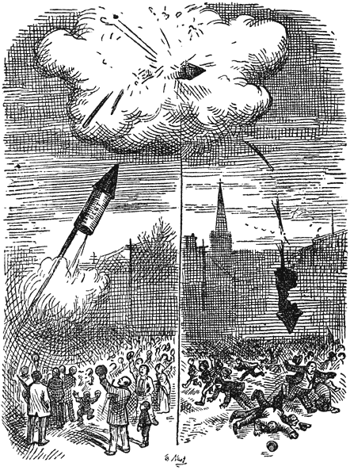

Het Geld
van
Robinson Crusoe
[Inhoud]
Hoofdstuk I.
De drie groote zakken geld.
Iedereen, die “Robinson Crusoe” gelezen heeft (en wie heeft dat niet gedaan?) zal zich herinneren hoe hij, toen hij al een tijd lang op zijn verlaten eiland vertoefd had, een van de kasten opende, die van het schip naar hem waren toegedreven. In die kast vond hij spelden, naalden en garen, een groote schaar, “tien of twaalf goede messen,” een paar stukken goed, ongeveer anderhalf dozijn wit linnen zakdoeken, waarover hij opmerkt: “zij waren uiterst verfrisschend om mijn gezicht mee af te vegen op een warmen dag,” en ten slotte, verborgen in de lade van de kast, “drie groote zakken geld—goud zoowel als zilver.”
Men zal zich verder herinneren hoe het vinden van al deze voorwerpen—het geld uitgezonderd—Crusoe zeer gelukkig maakte, omdat zij zijn voorraad nuttige dingen vermeerderden en zoodoende zijn comfort en geluk vergrootten. Maar met het geld was het een heel ander geval. Het had onder deze omstandigheden niet de minste waarde voor hem; en de vondst der drie zakken gaf hem aanleiding tot de volgende alleenspraak: “Ik glimlachte bij het gezicht van al dat geld.” “O rommel!” zeide ik hardop, [12]“waarvoor dient ge nu? Gij zijt mij zelfs het oprapen niet waard. Eén van die messen is evenveel waard als deze geheele stapel. Neen, wat zeg ik, ik zou al dit geld gaarne willen geven voor een gros tabakspijpen; voor een zakje wortel- en knollenzaad, dat in Engeland zes stuivers kost; of voor een handvol erwten en boonen en een flesch inkt.”
Toen de schrijver, de Foe, deze episode aan de levensgeschiedenis van zijn held toevoegde, zal het waarschijnlijk allerminst in zijn bedoeling gelegen hebben om zijn lezers een les in de staathuishoudkunde te geven. En toch zou het moeilijk zijn om een tweede voorbeeld te vinden waaruit zoo glashelder de aard van het begrip “rijkdom” blijkt, of dat een even zuivere basis verschaft voor een nauwkeurig onderzoek naar den oorsprong en het doel van datgene, wat we “geld” noemen. En bij een dergelijk onderzoek ligt de waarheid van de volgende grondstellingen zoozeer voor de hand, dat het onnoodig is om deze nader aan te toonen:
1e. De spelden, naalden en messen, de schaar en de stof waren van zeer veel nut voor Robinson Crusoe, omdat zij tegemoet kwamen aan een dringende behoefte van zijn kant, en omdat zij zijn comfort en geluk belangrijk vermeerderden.
2e. Hoewel zeer nuttig, hadden deze voorwerpen toch geen ruilbare waarde, omdat zij niet gekocht of verkocht, of wat op hetzelfde neerkomt, niet met iemand tegen iets anders geruild konden worden.
3e. Zij hadden bovendien geen prijs, want zij bezaten geen koopkracht, die in geld kon worden uitgedrukt. [13]
4e. Het geld daarentegen, dat gewoonlijk beschouwd wordt als het symbool en de samenvatting van alles wat rijkdom is, had onder deze omstandigheden noch nut, noch waarde, noch prijs. Het kon niet gegeten of gedronken of gedragen of als werktuig gebruikt of met iemand voor iets anders geruild worden, en het verdiende dus ten volle de benaming, die Crusoe het op een andere plaats geeft van “armzalig, waardeloos prullegoed”.
De slotsom is dus, dat de spelden, naalden en messen, de stof en de schaar allen tezamen kapitaal vertegenwoordigden voor Robinson Crusoe, omdat hij ieder van deze voorwerpen gebruiken kon om iets nieuws te produceeren, dat nuttig of wenschelijk voor hem zelf was. Het geld was géén kapitaal onder deze omstandigheden, daar het niet kon dienen om iets anders mee te produceeren.
Wij gaan dus uit van een stand van zaken op het eiland, waarbij geld klaarblijkelijk nut noch waarde heeft; laat ons nu vervolgens nagaan door welke wijziging in de binnenlandsche toestanden het nut en waarde zou verkrijgen, een handelsobject zou worden en tevens een standaard voor het vaststellen van prijzen. [14]
[Inhoud]
Hoofdstuk II.
Een nieuwe maatschappelijke orde van zaken.
Het eerste menschelijke wezen, dat Robinson Crusoe gezelschap kwam houden op zijn eiland, was Vrijdag en vervolgens Vrijdag’s vader. Maar zelfs deze vermeerdering van personen had nog geen behoefte aan geld tengevolge, omdat deze drie menschen tesamen slechts één familie vormden, waarvan de leden volkomen samenwerkten en alle nuttige dingen, die zij in gemeenschap verkregen, onderling deelden, zonder ruilhandel met elkander te drijven. Maar toen Will Atkins kwam met de Engelsche zeelieden en, zooals wij mogen aannemen, het bevolkingscijfer van het eiland aanmerkelijk en blijvend vermeerderde, werd een nieuwe maatschappelijke orde van zaken onvermijdelijk. Onderscheid van karakter en smaken en een natuurlijk verlangen naar persoonlijke onafhankelijkheid maakten het weldra onmogelijk, dat allen tesamen zouden leven en alles deelen als één groote familie. En weldra leerde het eigenbelang hun ook, dat het voor de vermeerdering der productie en de verbetering der qualiteit van alles wat de nieuwe gemeenschap in haar geheel noodig had, wenschelijk was, indien niet [15]iedereen in al zijn eigen behoeften trachtte te voorzien en daarom nu eens het werk van een timmerman of een bakker en dan weer dat van een kleermaker, een metselaar enz. deed; maar dat het voor elkeen het beste was om zich uitsluitend tot één vak te bepalen, zich daarin te bekwamen en zichzelf de dingen, welke hij niet zelf vervaardigde en die hij noodig mocht hebben, te verschaffen, door zijn eigen producten of diensten te ruilen tegen de producten of diensten van een ander. Zij begrepen instinctmatig, dat Robinson Crusoe, al was hij oorspronkelijk een beschaafd mensch geweest, onvermijdelijk een echte wilde zou zijn geworden, wanneer hij alleen was gebleven op het eiland en wel uitsluitend daarom, omdat hij er alleen was en geen ruilhandel kon drijven. Gedurende eenigen tijd hielden de voorwerpen, die hij uit het wrak had kunnen redden, hem nog op een zeker peil van beschaving, want alles wat het schip hem gebracht had—de messen, bijlen, geweren, stof, enz.—was kapitaal of het product van de vereenigde arbeidskrachten van andere menschen. Maar als het schip hem niets had gebracht, dan had hij alles zelf moeten maken: “zijn hoed, zijn kleeren, zijn voetbekleeding, zijn brood, zijn vleesch door middel van zijn pijl en boog, zijn huis met behulp van zijn bijl, zijn bijl met behulp van zijn hamer, zijn hamer.... ja, hoe hij zijn hamer had moeten maken, mag de hemel weten”—en hij zou een wilde geworden zijn, al zijn beschaving ten spijt; omdat het hem met inspanning van al zijne krachten ternauwernood mogelijk zou zijn geweest om zichzelf een schamel bestaan te verzekeren. [16]
Eene systematische arbeidsverdeeling en een ruilhandel in producten en diensten deden aldus voor het eerst hun intrede op het eiland en vormden een onderdeel van een verbeterd productiesysteem en het middel voor de bewoners om in hun levensonderhoud te voorzien. En hierbij dient tevens opgemerkt te worden, dat daar artikelen en diensten nu voor het eerst ruilbaar werden, dezen ook voor het eerst dat attribuut verkregen, dat wij “waarde” noemen. [17]
[Inhoud]
Hoofdstuk III.
De periode van goederenruil.
Alle ruilhandel moet evenwel in den aanvang direct van den eenen persoon tot den anderen hebben plaats gevonden, of, zooals wij het uitdrukken, in den vorm van goederenruil door gelijk oversteken; door het geven van een zekere hoeveelheid van één soort artikelen of diensten voor een overeenkomstige hoeveelheid van een ander soort artikelen of diensten—koren voor stof, bont en huiden voor messen of tabak, zóóveel werk om een huis te bouwen voor zóóveel bekwaamheid om een cano te vervaardigen. Maar in deze geheele methode van handeldrijven, die, hoewel de oudste, nog steeds in geruime mate in zwang is zelfs onder de meest beschaafde naties, was geen plaats voor het gebruik of de tusschenkomst van geld en bij gevolg bestond er ook niet zooiets als een prijs, want prijs is, zooals we al eerder hebben vastgesteld, de koopkracht van een artikel of dienst uitgedrukt in geld.
Maar de menschen op het eiland van Robinson Crusoe ondervonden weldra, dat er groote bezwaren verbonden waren aan de methode van handeldrijven uitsluitend op den grondslag van directe goederenruil, bezwaren van zulk [18]een ernstigen aard, dat deze, wanneer zij niet werden weggenomen, wel eens allen verderen vooruitgang in beschaving en maatschappelijke ontwikkeling voor de toekomst onmogelijk zouden kunnen maken. De ontdekking van dit feit vond ongeveer op de volgende wijze plaats:
Twist, die kleermaker was en een jas gemaakt had, ontdekte opeens dat al zijn brood op was: en daar hij honger had, staakte hij zijn werk en ging Needum, den bakker, opzoeken om een ruil aan te gaan. Het kostte hem geen moeite om Needum te vinden, die juist bezig was zijn oven op te stoken en die een grooten voorraad brood had om te verkoopen; maar omdat de bakker in het bezit was van alle jassen, die hij noodig had, weigerde hij om handel te drijven. Alleen deelde hij Twist welwillend mede, dat, wanneer deze soms iemand ontmoeten mocht, die graan of meel over had, hij (Needum) dien heel graag in ruil daarvoor voorzien zou van al het brood, dat hij noodig had; maar daar de kleermaker geen landbouwer en evenmin een molenaar was en daarom deze artikelen niet bezat, begaf hij (Twist) zich op weg naar het andere uiteinde van het eiland, waar een andere bakker woonde, om te zien hoe het met dezen gesteld was op het punt van kleeren. Onderweg werd Twist ingehaald door Pecks, den metselaar, die geen jas had en daar deze juist datzelfde kleedingstuk noodig had, dat Twist gemaakt had, was hij opgehouden met het bouwen van een steenen muur om den kleermaker te gaan zoeken, aan wien hij nu het voorstel deed om een jas met hem te ruilen tegen een nieuwen schoorsteen. Maar daar Twist al twee schoorsteenen [19]op zijn huis had en niets om te koken, en omdat hij dus geen behoefte had aan een derden schoorsteen, had de metselaar al evenmin succes met zijn poging om handel te drijven met den kleermaker, als de kleermaker een oogenblik tevoren met den bakker had gehad. Tenslotte, na heel wat moeite en heen en weer reizen, wat voor hem tevens een groot verlies aan tijd en arbeid beteekende, vond Twist een bakker, die brood wilde ruilen voor de jas en Pecks een kleermaker, die een jas wilde geven voor een schoorsteen; en intusschen had Needum zijn bakkerij gesloten om Diggs, den landbouwer, op te zoeken, die genegen was om hem graan te verschaffen voor brood. Maar toen nu eindelijk al die verschillende menschen bij elkander waren gekomen om onderling hun producten en diensten te verhandelen, deed zich dadelijk een nieuwe moeilijkheid voor en zulk een onoverkomelijke moeilijkheid, dat ieder voor zich er ernstig over dacht of het niet beter was, dat hij maar naar huis ging en probeerde om elk voorwerp voor zichzelf te produceeren, inplaats van iets te verruilen. “Want hoe”, zeiden zij allen, “kunnen wij nu uitmaken, wat naar verhouding de onderlinge waarde is van onze verschillende artikelen en diensten, die wij met elkander willen ruilen?”
“Hoe kan ik weten,” zeide Twist, “hoeveel brooden ik zou moeten krijgen voor mijn jas?” “Of ik,” zeide Pecks, “hoe kan ik uitmaken, hoe hoog en breed de schoorsteen moet zijn, dien ik zal maken voor mijn kleedingstuk?” En Diggs begon met Needum te twisten, omdat deze laatste hem zijn geheele afbetaling in brood ineens wilde afdragen; [20]terwijl Diggs, wien het vooruitzicht om tot in lengte van dagen op oudbakken en waarschijnlijk zelfs beschimmeld brood te moeten leven, allerminst toelachte, zijn graan door den bakker betaald wilde hebben tegen het tarief van één versch brood per dag. Wat de arme Twist betreft, die was langzamerhand zoo gedwee geworden door den honger, dat hij niet meer het hart had om zich te verzetten tegen het voorstel, dat hij een karrevracht brood ineens zou krijgen in ruil voor zijn jas, hoewel zijn huis zóó klein was, dat hij een gedeelte van zijn “afbetaling” op zijn dak zou moeten opstapelen, waar het ongetwijfeld door anderen dan door zijn eigen familieleden zou worden opgegeten.
Omstreeks denzelfden tijd had nog een ander veelbesproken incident op het eiland plaats. Een man, die niets te verkoopen had dan zijn werkkracht, had zich verhuurd om een schip te laden met steenkool—waarvan een ader ontdekt was geworden; en na een geheelen dag hard gewerkt te hebben, had hij als loon voor zijn diensten een ton steenkool gekregen. Maar daar deze arbeider nu juist voedsel en huisvesting noodig had en geen steenkool, (hoe nuttig dit laatste artikel overigens ook mocht zijn), bleef hem niets anders over dan te probeeren of hij zijn steenkool ook kon ruilen en dat wel zoo gauw mogelijk om in zijn onmiddellijke levensbehoeften te voorzien. Hij was te arm om een paard en kar te kunnen huren; daarom leende hij een kruiwagen, dien hij met steenkool vulde en zoo trok hij er op uit om menschen te zoeken, die voedsel en huisvesting te verkoopen hadden. Maar al [21]die menschen waren toevallig al ruimschoots voorzien van steenkool; en den volgenden ochtend zag men den arbeider nog maar steeds zijn uiterst nuttig handelsartikel onverruild door de stad kruien, op het punt om in elkaar te zakken van honger en uitputting. Een dergelijke ervaring deden ook enkele losse knechts van een slager, een hoefsmid en een timmerman en den bediende van een manufacturenzaak op, die respectievelijk voor hun dagwerk [22]ontvingen een schapenvel, een dozijn hoefijzers, een stuk dennenhout en twee el rood flanel. Al deze menschen waren wegens lichamelijke uitputting niet in staat om den volgenden dag hun werk te hervatten en zij zagen allen ook heel goed in, dat zij er niet zoo heel veel beter aan toe zouden zijn geweest, als ieder van hen alleen in vleesch, of alleen in drank of in huisvesting uitbetaald was geworden, in plaats van in steenkool, huiden, timmerhout, hoefijzers of stof.
De werklieden belegden derhalve een vergadering en namen dadelijk het volgende besluit: “Dat, daar het systeem om een arbeider te betalen met een hoeveelheid van het door hem geproduceerde artikel, evenveel tijd en werk noodzakelijk maakte om zijn loon dienstig te maken aan zijn behoeften als vereischt werd voor den arbeid zelven, waarmee hij het voornoemde loon verdiende; het, bijgevolg, slechts rechtvaardig was, indien de werkgevers hun arbeiders zouden veroorloven om de helft van den geheelen werktijd, waarvoor zij betaald werden, te besteden voor het omzetten van hun verdiensten in die artikelen, waarmee zij in hun onmiddellijke behoeften konden voorzien.” Maar de werkgevers antwoordden hierop, dat een dergelijke overeenkomst niet alleen gelijk zou staan met een verdubbeling der loonen in verhouding tot de directe productie, maar dat bovendien de productie zelve daardoor tot op de helft zou verminderen, hetgeen een algemeene schaarschte tengevolge zou hebben, zoodat de verdere materieele ontwikkeling van het land zeer belemmerd, zoo niet volkomen onmogelijk gemaakt zou worden. [23]
Zoo kwam het, dat er een ernstig geschil rees tusschen de vertegenwoordigers van den arbeid en de vertegenwoordigers van het kapitaal, hetgeen, zooals altijd in een dergelijk geval, ontzachelijke verliezen ten gevolge had, niet alleen voor allen, die direct bij de zaak betrokken waren, maar voor de geheele gemeenschap. [24]
[Inhoud]
Hoofdstuk IV.
Hoe zij het geld uitvonden.
De menschen op het eiland—zoowel arbeiders als werkgevers—waren het er evenwel volmaakt over eens, dat het leven te kort was om het grootendeels te verspillen met het spelen van een spelletje “blindeman” op grooten schaal,—want zoo kon men dat systeem van handeldrijven op een basis van directen goederenruil gerust noemen1, maar zij zagen ook heel goed in, dat het spel [25]net zoolang door zou gaan, totdat er geen sprake meer zou zijn van eenigen materieelen vooruitgang, indien er niet een nieuwe methode van handeldrijven werd uitgevonden en ingevoerd. Daarom besloten Twist, Needum, Pecks, Diggs, Vrijdag, Vrijdag’s Vader, Will Atkins en alle andere menschen, als het ware gedreven door hun instinct (en aangemoedigd door Robinson Crusoe), maar zonder dat er een wettelijk voorschrift bij te pas kwam, met algemeene stemmen om één bepaald artikel uit te kiezen, dat allen zonder uitzondering zouden accepteeren in ruil voor elk product of iederen dienst, die zij te koop aanboden; zoodat, wanneer iemand iets te ruilen had, hij dit eerst kon ruilen voor dat bijzondere artikel, wat het ook zijn mocht, en vervolgens door tusschenkomst daarvan op ieder tijdstip en elke plaats, kon koopen wat hij verlangde. En van het oogenblik af dat dit werd ingevoerd, deed de beschaving op het eiland een heelen stap voorwaarts, en de eerste groote hinderpaal, die ontstaan was door den goederenruilhandel van man tot man, was uit den weg geruimd. De kleermaker liep niet langer gevaar om van honger om te komen, de metselaar behoefde zich niet langer bezorgd te maken over zijn kleeding en de werkman kreeg als loon voor zijn arbeid iets, dat hem zonder moeite een aequivalent verschafte in voedsel, huisvesting en andere dingen, die hij noodig mocht hebben; want iedereen gaf gaarne zijn goederen of diensten voor dat bijzondere artikel, dat de rol van betaalmiddel vervulde, omdat hij wist, dat ieder ander, die iets ruilen wilde, bereid zou zijn om hetzelfde te doen. [26]
En wat nog meer was: de keuze van een artikel, waaraan met algemeene toestemming een universeele en naar verhouding onveranderlijke koopkracht verleend werd, loste tevens de tweede moeilijkheid op, omdat zij tegelijkertijd een waardemeter of standaard aan de hand deed om de onderlinge waarde of koopkracht van ieder ander ruilbaar artikel of dienst mee vast te stellen en wel op precies dezelfde wijze waarop de lengte of het gewicht, van een voorwerp bepaald wordt, n.l. door het te vergelijken met een ander voorwerp, dat door de gemeenschap eenparig is aangenomen als een standaard van lengte of gewicht—zooals b.v. het stuk hout, dat wij duimstok noemen of het stuk metaal, dat een pond heet. “Mijn brooden zijn ieder tien stuks van het betaalmiddel waard,” zei Needum, de bakker. “Mijn jas,” antwoordde Twist, de kleermaker, “is duizend stuks waard.” Een eerlijke ruil tusschen den bakker en den kleermaker zou dus zijn geweest: honderd brooden voor één jas.
De algemeene naam nu, die men geeft aan die artikelen of voorwerpen, die de menschen van verschillende naties algemeen in ruil aannemen als het æquivalent van alle andere artikelen of diensten en als den maatstaf van waarden, is “geld”.
De artikelen, die door de menschen op verschillende tijden en plaatsen zijn uitgekozen om dienst te doen als dat algemeene æquivalent, dien middelaar of dat middel om de ruilhandel te vergemakkelijken, zijn zeer verschillend [27]geweest. Bij de Noord-Amerikaansche Indianen en de eerste planters, die onder hen kwamen wonen, werden wampums (schelpgordels) en beverhuiden gebruikt als geld; bij de inboorlingen van West-Afrika bestaat het geld in kleine schelpen, “kauri’s” genoemd; in Abessinië is zout tegenwoordig het gewone geld; in Chineesch Tartarije pakjes geperste thee, en nog niet lang geleden werden kleine plakjes zeep als geld gebruikt op de Westkust van Mexico. Onder de herdersvolken in de Oudheid werden koeien en schapen op zulk een grooten schaal als geld gebruikt, dat het gewone Engelsche woord “pecuniary” afgeleid is van het oude woord “pecus”, dat “vee” beteekent. En terwijl we in Homerus lezen, dat de prijs van de wapenrusting van Glaucus bestond uit honderd stuks vee, weten we ook dat de Zoeloe’s in Zuid-Afrika tegenwoordig nog hun schulden met vee betalen en den omvang van hun vermogen volgens denzelfden standaard berekenen.
Het geld bestond dus vóórdat er wetten waren, en het bestaat en wordt heden ten dage gebruikt onder volkeren, die geen geschreven of erkend wetboek bezitten.
Van veel belang voor een juist begrip van dit onderwerp is ook de erkenning van een andere grondwaarheid, namelijk, dat er, zoover men kan nagaan, nooit een volk is geweest, dat niet, toen het voor het eerst begon met geld in te voeren, daarvoor dadelijk een artikel nam met [28]een natuurlijke koopkracht of waarde tengevolge van enkele intrinsieke eigenschappen, die dat artikel begeerenswaardig maakten. En het spreekt van zelf, dat dit zoo moest zijn. Want, waar er geen wet bestond, die bepaalde, waaruit het geld moest bestaan en die den handel regelde, zou men, door een artikel als geld aan te nemen, waarvan de productie of de vermeerdering weinig of geen moeite vereischt, alle luie, sluwe of gewetenlooze menschen in staat stellen, om, zonder dat zij voor eenige straf of beperking behoefden te vreezen, van de overige leden der gemeenschap producten te nemen, zonder daarvoor iets gelijkwaardigs terug te geven. Bijvoorbeeld: wanneer men aan gedroogde bladeren of stukjes papier een algemeene koopkracht kon verleenen door er een of ander teeken op te stempelen of te schrijven, dan zou het eerste practische gevolg van het gebruik van zulk geld zijn, dat men de menschen in staat stelde om iets voor niets te krijgen of dat men degenen, die niet wilden werken, veroorloofde om allen, die wel werkten, te berooven. De bewoners van het eiland, die onontwikkeld waren, begingen nooit een dergelijke dwaasheid; maar toen zij zich gingen bezighouden met geschiedenisstudie, bemerkten zij tot hun groote verwondering, dat de inwoners van andere landen herhaaldelijk op zichzelf waardelooze dingen als geld hadden gebruikt; en vele jaren later kwam er zelfs uit de Vereenigde Staten een man naar het eiland gereisd, die een groot leeraar hoopte te worden, en deze probeerde de bevolking te overtuigen, dat het een groote vergissing was om als geld iets te gebruiken, dat eenige innerlijke waarde bezat [29]als handelsartikel2. De kinderen van de lagere school, die hij trachtte te overreden, brachten hem al heel gauw in verlegenheid, door hem uit hun geschiedenisboekjes voor te lezen, hoe alle volkeren, en vooral de arme en eenvoudige lieden onder hen, die slecht waren ingelicht, welke ooit geprobeerd hadden om hun ruilhandel te vergemakkelijken door een artikel zonder intrinsieke waarde als geld te gebruiken, bij al die gelegenheden zonder uitzondering steeds in die mate opgelicht en bestolen waren geworden, dat zij vroeger of later altijd gedwongen waren geweest om het gebruik van dat geld op te heffen, uitsluitend als een maatregel van zelfbescherming, en om iets anders daarvoor in de plaats te stellen, dat een algemeen erkende en naar verhouding duurzame innerlijke waarde of koopkracht bezat als handelsartikel.
Hier volgen eenige van die verhalen, welke de kinderen [30]in hun geschiedenisboekjes vonden en hem voorlazen:
“In December 1861 bracht een arme soldatenweduwe twee honderd dollars in specie op een spaarbank en daarna vertrok zij met haar vier kleine kinderen naar Californië. In Juli 1863, toen het goud op 280% tegenover papier stond, schreef zij om haar geld. In antwoord daarop kreeg zij een chèque betaalbaar in goud voor 83% van haar geld, de opgeloopen rente à 6% inbegrepen.”—Henry Bronson, Nature and Office of Money.
“Het volk demoraliseerde (door het niet-inwisselbare continentale papiergeld) op een wijze, dien men vóór dien tijd ongeloofelijk zou hebben geacht. Alle banden van eergevoel, bloedverwantschap, dankbaarheid, menschelijkheid en rechtvaardigheid werden verbroken. Oude schulden werden afbetaald toen het papiergeld niet meer waard was dan zeventig tegen één. Broeders bedrogen hun broeders, kinderen hun ouders en ouders hun kinderen. Weduwen, weezen en anderen kregen uitbetaling in gedeprecieerd papier voor geld, dat zij in metalen munt hadden geleend.”—Breck, Scetch of Continental Money.
“De assignaten daalden steeds meer, totdat zij volkomen waardeloos waren, het geheele land meeslepende in armoede—eenige gelukkige speculanten uitgezonderd—, en het einde was een staatsbankroet. In dezen tijd, toen duizenden radelooze stakkerds, zelfs nog voor de laatste instorting der assignaten, zelfmoord pleegden om aan den hongerdood te ontkomen, was de oorlog een zegen; en Napoleon was het werktuig, dat geheel Europa de gevolgen deed ondervinden van waardeloos geld, hetzij direct [31]of indirect, door zijn tot het uiterste gedreven slachtoffers.”—Notes on the French Assignats and their Influence.
“Hij moest vier honderd dollars betalen voor een hoed en evenveel voor een paar schoenen. Hij wilde een goed paard hebben, maar men vroeg hem daarvoor een prijs gelijk aan tien jaar salaris.”
“Mijn verdiensten van zes maanden zijn ternauwernood toereikend om de kosten te bestrijden van de meest onmisbare uitgaven van één enkelen dag …”
“Voor een bed, avondeten en een grog voor mijzelf, mijn drie metgezellen en hun bedienden, berekende men mij, toen ik den volgenden dag zonder ontbijt vertrok, de som van acht honderd vijftig dollars.”—Life of General de Kalb.
“In totaal, van het begin tot het einde (1835–1841) beliep het bedrag van muntpapier, wissels, chèques en obligatiën, uitgegeven door de schatkist van de Republiek van Texas, en die voor een groot deel als circulatiemiddel dienst deden, tot $ 13·318·145 of tot een bedrag van meer dan 260 dollars per hoofd over de geheele bevolking. Wanneer papier uitgiften, die als geld gebruikt worden, een volk rijk hadden kunnen maken, dan had de bevolking van Texas de rijkste van de wereld moeten zijn. In Januari 1839 waren de Texas schatkist-biljetten niet meer waard dan 40 Amerik. centen op den dollar, in de lente van 1839 waren zij 37½ cents waard, in 1841 van 12 tot 15 cents, en in 1842 had men (in de karakteristieke taal van dien tijd) “vijftien dollars noodig om drie glazen brandy met water zonder suiker te koopen”. Toen het eenmaal zoover was, bleef er van haast geen enkel soort ruilmiddel [32]nog een belangrijk bedrag over in Texas, maar dat was geen groote ramp, omdat het volk maar heel weinig meer bezat om te laten circuleeren.” Het kwaad, dat dit systeem deed, was onmetelijk en van dien aard, dat het Gouvernement geen schadeloosstelling aan de slachtoffers had kunnen geven, ook al was het daartoe geneigd geweest.”—Gouge: Fiscal History of Texas.
Nogmaals: een der voornaamste redenen, waarom het geld werd uitgevonden en in gebruik genomen, was, opdat het zou dienen als maatstaf of standaard om de onderlinge waarde van andere dingen te schatten. Nu kan men zich toch moeilijk voorstellen, dat iemand, die voor dit doel geld zou willen gebruiken, daarvoor een artikel zou uitkiezen, hetwelk op zichzelf geen waarde heeft, evenmin als hij voor een maatstaf om lengte mee te meten, iets zou nemen, dat zelf geen lengte heeft of voor een standaard om gewicht te meten, iets, dat geen gewicht heeft. De bewoners van het eiland hadden daarom al heel erg dom moeten zijn, als zij niet van begin af aan hadden ingezien, dat iets alleen dan degelijk en goed geld kan zijn en blijven onder alle omstandigheden, wanneer het werkelijk de volle waarde heeft, die het op zijn buitenkant beweert te hebben. [33]
1 Dat de hier geschilderde onaangename gevolgen van het systeem van den ruilhandel van man tot man, volstrekt geen zuivere verzinsels zijn, maar dat dergelijke gebeurtenissen tegenwoordig nog dagelijks voorkomen in landen van groote geographische uitgestrektheid, bewijzen de getuigenissen van Barth, Burton en anderen, die in den laatsten tijd Oostelijk Afrika bezocht hebben. Zoo vertelt Barth bijv. (zie “Travels” dl. I p. 568 en dl. III p. 203) dat hij herhaalde malen niet had kunnen koopen, wat hij volstrekt noodig had—koren, rijst, enz.—omdat hij niet bezat en niet kon krijgen, wat de bevolking in ruil daarvoor verlangde; en op een andere plaats (dl. II p. 51), verklaart hij, dat het hem in sommige Afrikaansche steden, die hij bezocht had, zooveel moeite had gekost om inkoopen te doen, doordat de bevolking geen direct ruilmiddel had, dat zijn bedienden dikwijls in een toestand van de grootste uitputting van hun koop-expedities waren teruggekeerd. ↑
2 “De edele metalen hebben vele eigenschappen, die hen geschikt maken om voor geldstukken gebruikt te worden. Hun gebreken in dit opzicht zijn hun gewicht en hun intrinsieke waarde als handelsartikel.” “Social Science and National Economy”, by R. E. Thompson, Philadelphia 1875. “Van het oogenblik af dat men begrepen heeft, dat geld niets anders is dan een willekeurig voorwerp, waaraan men een bepaalde waarde heeft toegekend, zal het iedereen duidelijk zijn, dat ieder dergelijk voorwerp, dat algemeen geaccepteerd wordt in ruil voor nuttige diensten en producten, alle bijzondere functies van het geld zal vervullen, onverschillig van welk materiaal het vervaardigd is; en dat, hoe minder kostbaar het materiaal is, waarvan het geld gemaakt wordt, hoe beter het is voor de gemeenschap, die het gebruikt”. “Money, Currency and Banking” by Charles Moran. New-York 1875, p. 42. ↑
[Inhoud]

Hoofdstuk V.
Hoe de bevolking van het eiland en van andere streken wijs werd.
Hoewel men dus ieder handelsartikel, hetwelk een algemeen erkende koopkracht of waarde heeft, als geld kan gebruiken, moeten de eilandbewoners en alle andere menschen toch weldra bij ervaring geleerd hebben, dat sommige artikelen veel beter geschikt zijn voor dit doel dan anderen, of liever, dat het gebruik van sommige artikelen als geld, hoezeer zij ook in andere opzichten aan dit doel mogen beantwoorden, toch over het geheel zeer ernstige bezwaren met zich meebrengt. En de bijzonderheden van deze ervaring bij de verschillende volkeren vormen zeker wel een der meest belangwekkende hoofdstukken van de wereldgeschiedenis. De ondervinding der eilandbewoners was ongeveer als volgt:
Aanvankelijk spraken zij af om kauri’s te gebruiken—een mooi soort schelpen, die langs de kust gevonden werden en die alle vrouwen wenschten te bezitten om ze als sieraad te gebruiken. Deze schelpen waren echter vrij zeldzaam en inderdaad bleek het, dat het haast evenveel tijd en arbeid kostte om een honderdtal van die schelpen [34]te vinden, als men noodig had om een schepel tarwe te verbouwen. Bijgevolg werd tarwe doorgaans geruild voor kauri’s tegen het tarief van honderd kauri’s voor een schepel, terwijl de landbouwer met twee duizend kauri’s gemakkelijk een ploeg kon koopen, daar deze evenveel waard werd geacht als twintig schepels koren. Maar op een goeden dag maakten een paar nietsdoeners, die veel op zee voeren, een lange excursie en bezochten zij voor den eersten maal een ver afgelegen eilandje aan den horizon. Toen zij daar landden, zagen zij tot hun verbazing, dat de kauri’s daar, in plaats van uiterst schaarsch, in overvloed te vinden waren op de kust. Zij gaven elkander een knipoog en zeiden niet veel, maar elk verzamelde zooveel kauri’s als hij dragen kon en toen zij naar het hoofdeiland terugkeerden, hielden zij hun ontdekking diep geheim. Het eerstvolgende belangrijke verschijnsel dat zich hierna onder het Robinson Crusoe-volk voordeed, was een groote en onverwachte opleving van den geheelen handel. Het geld begon overvloedig te worden. De omzet in zaken was nog nooit zoo levendig geweest. Ieder voorwerp, dat te koop werd aangeboden vond direct een kooper, en daar de vraag toenam, stegen de prijzen ook met groote snelheid. Maar tevens merkte men op, dat er enkele personen waren, die nooit geregeld werkten, maar die den geheelen ochtend speculeerden en dobbelden en iederen middag aangename zeiltochtjes maakten, en die toch meer geld schenen te hebben dan ieder ander; waarvan zij als goede vaderlanders, die hun nationalen handel wilden steunen, altijd gaarne bereid waren [35]afstand te doen ten behoeve van andere artikelen. Winkeliers, landbouwers en ambachtslieden, die ook tot de ontdekking kwamen dat zij meer geld hadden dan gewoonlijk, voelden zich eveneens gedrongen om het een en ander te koopen en de prijzen gingen opnieuw naar boven, zoodat een schepel tarwe, die vroeger misschien verkocht was voor honderd kauri’s, nu grifweg honderd vijftig en zelfs twee honderd opbracht. Maar aan den anderen kant bemerkte de boer, dat hij, in plaats van zooals vroeger een ploeg voor tweeduizend kauri’s te kunnen koopen, nu het dubbele of vierduizend kauri’s moest betalen, of m.a.w., de kauri’s hadden nu zoowat de helft van de koopkracht, die zij vroeger bezaten.
Maar een tijdlang was iedereen in de wolken. Was het niet een feit, dat de waarde van elks bezittingen in kauri-geld gemeten, zeer was toegenomen—en wat was natuurlijker dan dat de sluwe avonturiers, door wier toedoen deze gouden tijd was aangebroken, met eerbewijzen, overladen werden en dat men hen uitnoodigde om te spreken voor kauri-clubs in alle uithoeken van het eiland en dat er zelfs over hen gesproken werd in verband met de hoogste ambten, die nog steeds vervuld werden door Robinson Crusoe en zijn dienaar Vrijdag? Maar de voortdurende stijging der prijzen—gemeten in kauri-geld—van alle artikelen, of, wat hetzelfde is—de voortdurende vermindering van koopkracht der kauri’s, begon tenslotte de algemeene aandacht te trekken en langzamerhand ook wantrouwen op te wekken, zoodat de prijs van een schepel tarwe, die eerst honderd kauri’s was geweest en [36]daarna tweehonderd, steeg tot drie-, vier- en zelf vijfhonderd kauri’s. Een ander merkwaardig verschijnsel, dat men opmerkte, was, dat naarmate de prijzen stegen de vraag naar kauri-geld voor den handel ook in dezelfde verhouding toenam, een vraag waaraan de avonturiers, die het middel geweest waren om het eiland zijn vermeerderd volumen van geld te verschaffen, niet verzuimden te voldoen door steeds nieuwe hoeveelheden kauri’s naar het eiland te brengen. Men merkte verder nog op, dat er zich een opmerkelijke vermeerdering van maatschappelijke activiteit voordeed, naarmate het wantrouwen toenam, want iedereen wilde zijn kauri-geld inwisselen tegen iets anders.1 Wie in de schuld stak, haastte zich om zijn schulden af te betalen en iedereen was bereid om kauri-geld te leenen voor het op touw zetten van allerlei nieuwe ondernemingen. Zoo werd er b.v. een maatschappij opgericht met een kapitaal van tien millioen kauri’s om het wrak van het oude schip, dat Robinson Crusoe naar het eiland [37]had gebracht, te onderzoeken, en, hoewel niemand precies wist, waar het wrak lag of wat er nog in zou kunnen zijn, werd de onderneming aangeprezen als een prachtig arbeidsveld. Een ander plan, waarvoor men een maatschappij met vijftig millioen kauri’s kapitaal had opgericht, was, om een net van kanalen dwars door het eiland te graven, hoewel het geheele eiland niet meer dan honderd mijlen breed was en aan alle kanten langs de kust een volkomen veilige zeevaart bood.
Toen barstte de bom! De handel kwam geheel tot stilstand.
Maar tenslotte kwam de aap uit de mouw. Andere menschen dan die drie sluwe avonturiers ontdekten, waar al die kauri’s vandaan kwamen, en dezen haastten zich om ook een bezoek te brengen aan het afgelegen eiland om zichzelf van geld te voorzien en het in circulatie te brengen. Maar hoe meer geld er werd uitgegeven, hoe meer er noodig was om te voldoen aan de behoeften van den handel; totdat men eindelijk een vierpaards-karrevracht kauri’s noodig had om een schepel graan te koopen. Toen barstte de bom. De handel kwam geheel tot stilstand. De man, dien Robinson Crusoe tot minister van finantiën van het eiland benoemd had, meende het kwaad te kunnen verhelpen door nog wat meer kauri’s uit te geven2 maar [38]het baatte niet meer. Enkele zeer wijze menschen waren er zeker van, dat alles wel weer in orde zou komen, als de menschen alleen maar vertrouwen wilden hebben; maar zoolang de menschen, die werkten en spaarden, niet zeker wisten, wat zij voor de producten van hun arbeid zouden krijgen—iets of niets—keerde het vertrouwen [39]niet terug. Iedereen voelde zich verarmd en opgelicht. Iedereen, die geld dacht te bezitten in spaarbanken werd op een goeden dag wakker met het besef, dat zijn geld niets anders was, dan een hoopje oude schelpen. Elk had zijn zakken, zijn laden en zijn geldkisten gevuld met schelpen, die hij ontvangen had in ruil voor artikelen, die hem veel kostbaren tijd en arbeid hadden gekost. Maar strikt genomen werd toch niet iedereen door de ramp zoo zwaar getroffen. Er waren eenige uitzonderingen, en wel de slimme leegloopers, die het eerst de goedkoope voorraad kauri’s hadden gevonden en die, profiteerende van de onwetendheid der gemeenschap, deze gevoegd hadden bij de bestaande circulatie om als geld te dienen. Al deze menschen hadden hun voorzorgen genomen om bezittingen van blijvende waarde—huizen, grondbezit, ploegen, graan etc., in ruil te ontvangen voor kauri’s en te behouden. Zij waren dus feitelijk rijk geworden door de gemeenschap te bestelen3. De gemeenschap evenwel was te beleefd om hen dieven te noemen en in de gesprekken werd gewoonlijk op hen gezinspeeld als handige financiers en als menschen, die vooraan stonden in hun tijd. Het laatste bedrijf van dit merkwaardige drama op het eiland was, dat het eens zoo kostbare geld zoozeer deprecieerde, dat het tenslotte alleen nog maar waarde [40]behield als grondstof om kalk van te maken. De menschen maakten er derhalve kalk van door het te branden en om hun huizen tenminste van buiten een vroolijk aanzien te geven, gebruikten zij die kalk om mee te witten. Maar op één punt waren zij het allen eens, namelijk daarover, dat het eerstvolgende artikel, dat zij zouden kiezen om als geld te dienen, iets zou zijn met een blijvende, onveranderlijke waarde, die niet afhankelijk was van toevallige omstandigheden of naar willekeur beïnvloed kon worden door de kunstgrepen van menschen, die in hun onderhoud wilden voorzien zonder er voor te werken.
Maar hoe merkwaardig deze ervaring van de eilandbewoners in verband met het ontstaan en het gebruik van geld ook zijn moge, zij is allerminst een uitzondering geweest, want de kronieken der geschiedenis toonen aan, dat haast alle volkeren, die dit proces van beschaving hebben doorgemaakt, een gelijksoortige ondervinding opdeden. Een bijzonder treffend voorbeeld hiervan vindt men [41]vermeld in de “Geschiedenis van New York” door Diedrich Knickerbocker en in de geschreven kronieken van de “New York Historical Society”. Het was in de dagen van de Hollandsche overheersching—in 1650—toen in Nieuw Amsterdam (later New York) het gewone geld in omloop het z.g. Indiaansche geld of “wampum” was, dat bestond uit “strengen van kralen bewerkt uit oesterschelpen, kinkhorens en andere schelpdieren. Dezen hadden een eenvoudig ruilmiddel gevormd onder de wilden, die ze bereidwillig van de Hollanders aannamen in ruil voor bont.” Willem Kieft was destijds gouverneur, en daar hij den rijkdom van Nieuw Amsterdam wenschte te vermeerderen en over het algeheel, zooals de geschiedschrijver vertelt, een beetje naijverig was op Salomo (die goud en zilver even overvloedig maakte als de steenen in de straten van Jerusalem) besloot hij (de gouverneur) om aan zijn verlangen te voldoen en tegelijkertijd te wedijveren met Salomo door dat gemakkelijk te produceeren geld te maken tot de gangbare munt van zijn gewest. “Weliswaar had het een intrinsieke waarde voor de Indianen, die het gebruikten om er hun kleeren en hun moccasins mee te versieren; maar voor de eerzame burgers had het niet meer innerlijke waarde dan stukjes been, vodden, papier of ander waardeloos materiaal.” Deze overweging legde echter geen gewicht in de schaal bij Gouverneur Kieft. Hij begon met alle dienaars van de Compagnie en alle schulden van het Gouvernement te betalen in strengen wampum. Hij zond expedities uit om de kusten van Long Island, dat het Ophir van dezen modernen Salomo [42]was en waar de schelpvisschen zeer overvloedig waren, af te zoeken. Die werden dan in groote hoeveelheden naar Nieuw Amsterdam getransporteerd, verwerkt tot Indiaansch geld en in de circulatie geworpen.”
“En nu gingen de zaken een tijdlang als van een leien dakje. Het geld werd even overvloedig als in onze dagen van papiergeld; en, om een algemeene uitdrukking te bezigen: “de publieke welvaart nam een wonderbaarlijke vlucht.”
“Maar ongelukkig voor het welslagen van Kieft’s plan, kwamen de Yankees aan de Connecticut Rivier tot de ontdekking, dat zij met weinig kosten en moeite zooveel wampum konden maken als zij wilden uit oesterschelpen, en natuurlijk haastten zij zich om alle wampum te leveren, die de handel in Nieuw Amsterdam noodig had; zij kochten daarmee alles wat er te koop was en betaalden de brave Hollanders in hun eigen prijs. Hierbij dient nog vermeld te worden, dat het geld van Gouverneur Kieft ook volkomen het voornaamste kenmerk van elke goede (!) geldsoort bezat, n.l. “ongeschiktheid voor uitvoer.”
Toen derhalve de Hollanders tinnen pannen of houten kommen van Yankee fabricaat wilden hebben, moesten zij daarvoor betalen in klinkende guldens of een andere metalen munt, omdat wampum door de Yankees al evenmin als ruilmiddel werd geaccepteerd als rotte eieren, ranzige boter, bedorven vleesch, verrotte aardappelen of eenig ander Hollandsch artikel, dat niet voor uitvoer geschikt was4. [43]
Het gevolg van dit alles was, dat de Hollanders en de Indianen weldra alle wampum kregen en de Yankees alle beverhuiden, Hollandsche haringen, Hollandsche kazen en al het zilver en goud van het gewest. Toen werd, zooals te verwachten was, het vertrouwen geschokt. Ook de handel kwam tot stilstand en, om de oude geschreven kronieken aan te halen: “de Compagnie zag zich beroofd van haar inkomsten en de kooplieden werden teleurgesteld in hun verwachting om winst te maken, waarmee zij aan hun verplichtingen konden tegemoet komen.”
Men kan gerust de gevolgtrekking maken, dat de Hollanders na dien tijd een artikel als geld gebruikten, dat minder onderhevig was aan het gevaar van depreciatie, dan wampum.
De eerste kolonisten in Oost-Tennessee kwamen eveneens tot een soortgelijke conclusie na een overeenkomstige ervaring: Raccoonhuiden werden daar voor verschillende doeleinden gevraagd en waren bijgevolg veel waard. [44]Opossum-huiden daarentegen, werden weinig gevraagd en hadden daarom weinig waarde. Maar enkelen onder de planters, die hun verplichtingen willen afdoen zonder er een volkomen aequivalent voor te willen geven, betaalden hun schulden in opossum-huiden, waaraan de staart van een waschbeer bevestigd was. Maar toen die vervalschingen eenmaal in de schatkist gekomen waren, konden zij niet meer uitgevoerd worden om de schulden van den Staat mee te betalen en het gebruik van Coon-huiden als ruilmiddel hield op.
Maar om weer naar het eiland terug te keeren; hoewel de eilandbewoners den eersten keer al bijzonder ongelukkig waren geweest in hun keuze van een artikel dat als geld kon gebruikt worden, bleef de dringende behoefte aan zulk een artikel even groot als tevoren en bijgevolg moest men een nieuwe keuze doen. Verschillende menschen kwamen met verschillende voorstellen. Sommigen sloegen voor om pisangs te gebruiken, omdat daarnaar voortdurend vraag was en deze, wanneer zij goed en rijp waren, altijd ruilbaar waren voor een zeer bestendige waarde, maar men begreep weldra, dat deze vruchten toch volkomen ongeschikt waren om als ruilmiddel te dienen, zoodra het bleek, dat de pisangs heel gauw bedierven na het oogenblik waarop zij de grootste waarde hadden, zoodat daardoor iemand, die vandaag overvloed van geld had, morgen wellicht niets meer bezat en dat wel geheel buiten zijn schuld5. Tarwe, vee en gestempelde stukken [45]ijzer werden ook voorgesteld, maar al deze stoffen werden om de een of andere bijzondere reden ongeschikt geacht. Zoo werd b.v. tegen tarwe als bezwaar aangevoerd, dat hoewel er bijna altijd vraag naar was en het de waarde van een zeer constante hoeveelheid werk vertegenwoordigde, het te omvangrijk was om er mee rond te kunnen loopen en dat het slechts zelden het eene jaar precies dezelfde waarde had als het volgende; tegen vee, dat het onmogelijk was om een os te verdeelen, door hem den eenen keer zijn staart en een andermaal zijn ooren af te snijden, zonder daarbij tevens de waarde van het dier als geheel te vernietigen; en dat, wanneer koeien in het algemeen als wettig betaalmiddel voor schulden gebruikt werden, het zeer waarschijnlijk was, dat de allerellendigste [46]koe uitgekozen zou worden uit den geldstal voor een dergelijk doel6; terwijl, wanneer ijzer als geld werd aangenomen en tegen zijn meest gangbare waarde in omloop werd gebracht, het wel eens zou kunnen voorkomen, dat men een tonnemaat mee moest sleepen om een schuld van dertig dollar te betalen. Een eigenaardig soort van kralen, gemaakt van blauw glas, waren bij de vrouwen van het eiland als sieraad in gebruik gekomen en daar zij veel gevraagd werden, klein van omvang en van zeer duurzaam materiaal waren, werden zij als bijzonder geschikt beschouwd om als geld te dienen. Zij werden dan ook daarvoor aangenomen en voldeden een tijdlang zeer goed. Maar opeens verklaarden de vrouwen dat ze als sieraad uit de mode waren, en doordat nu alle vraag naar en gebruik van kralen plotseling ophield, zagen de kooplieden en anderen, die er een grooten voorraad van hadden opgezameld, zich opeens weer voor het feit gesteld, dat, wat zij voor geld hadden gehouden, geen koopkracht meer bezat, en natuurlijk leden zij groote verliezen. Daarop spraken de eilandbewoners af om niet langer blauwe glazen kralen als geld te gebruiken.7
Hoe snel de bevolking van het eiland, door schade en schande wijs geworden, een juist inzicht verkreeg in wat [47]nu werkelijk goed geld vormt, kan men afleiden uit het volgende voorval:
Een gedeelte van de eilandbewoners waren heidenen en om de kosten en moeiten, om hen te beschaven en tot het christendom te bekeeren, te dekken, was het de gewoonte van enkele brave menschen om van tijd tot tijd te profiteeren van gelegenheden, waarbij zich veel volk verzamelde, om bijdragen voor zulke doeleinden te innen. Nu bleek het evenwel, dat sommige menschen, hetzij omdat zij niet wisten wat of geld eigenlijk was, of omdat zij erg arm waren, de gewoonte hadden om voorwerpen in den hoed te doen, die geen geld waren; en toen men Robinson Crusoe, (die gewoonlijk zulke samenkomsten presideerde) van deze handelwijze op de hoogte stelde, heeft hij, naar men zegt, de euveldaders op de volgende indrukwekkende wijze terecht gewezen en ingelicht:
“Voordat wij overgaan tot het innen van de gewone bijdragen voor de heidenen,” zeide hij, “wil ik de gemeente en in het bijzonder hen, die op de galerij zitten, even opmerkzaam maken op het feit, dat de gewoonte om in den hoed voorwerpen te leggen, die geen geld zijn, meer in het bijzonder knoopen, blijk geeft van een graad van onwetendheid omtrent het gebruik van geld, die ik niet mogelijk had geacht in ons land na al onze verschillende ervaringen op dit gebied van den laatsten tijd. Maar wanneer ten gevolge van onwetendheid of armoede, iemand zich nog gedrongen mocht voelen, om voort te gaan met knoopen bij te dragen in plaats van geld zou ik hem willen verzoeken om niet de oogen er van af te breken; [48]niet alleen omdat hij daardoor deze voorwerpen als knoopen geheel onbruikbaar maakt, zonder ze geschikter te maken om als geld te dienen, maar ook omdat hij er toch niet in slagen zal, om de heidenen op deze wijze te bedriegen, daar dezen, hoewel onbekend met het Evangelie, over het algemeen zeer goede beoordeelaars van geldswaarde zijn.” [49]
1 Naar mijn oordeel is de groote en onmiddellijke behoefte van den tijd de uitgifte van meer biljetten, die als wettig betaalmiddel kunnen dienen, omdat het vertrouwen daarin zoodanig zal afnemen, dat de houders ze zullen wenschen om te zetten in ander soort bezittingen, of nuttige zaken—niet alleen om ze uit te leenen op kort loopende of lang loopende wissels, die zoo zeker zijn als een steen vuurvast is, tegen hooge of lage interest, zooals men het nu kan doen zooveel men wenscht—maar om er volkomen afstand van te doen terwille van ander soort bezittingen.—“Views of Enoch Ensley, of Memphis, Tennessee, on the National Finances.—Memphis September 1875. ↑
2 Noot v. d. vert.: Een dergelijk voorstel is inderdaad gedaan in de Nederlandsche Oost-Indische koloniën in 1843 door de regeering; de overmatige uitgifte van koperen duiten had alle goede geld uit Indië verdreven; de verwarring in geld en kapitaal werd tot wanhopige hoogte opgedreven; toen ging het gouvernement over tot uitgifte van nog eens drie millioen gulden van het z.g. koperpapier om den handel tegemoet te komen! (Zie verslag Javaansche Bank 1844). ↑
3 “Te midden der algemeene ellende was er één stand, wien het zeer voor den wind ging—die der bankiers; en onder de bankiers kan er geen wat betreft bekwaamheid en geluk, vergeleken worden met Charles Duncombe. Deze was, niet veel jaren geleden, een vrij onbemiddeld goudsmid geweest. [40]Hij had waarschijnlijk vol ijver zijn klanten bediend onder de arcaden van de Koninklijke Beurs, zooals dat in zijn vak het gebruik was, had kooplieden met diepe buigingen begroet en verzocht om de eer van hun kas te mogen houden. Maar zoo handig benutte hij nu de gelegenheden om winst te maken, die de algemeene prijsverwarring aan den geldwisselaar bood, dat hij, op hetzelfde oogenblik, toen de handel van het koninkrijk het meest was teruggegaan, bijna 90.000 pond neerlegde voor het landgoed van Helmsley in het Noordelijk District van Yorkshire.”
Macauley, History of England—State of the Currency in 1694–’95. ↑
4 “Aan de overzijde der zee, in vreemde landen is het (de [43]greenback, Amerikaansch muntpapier) gelukkig geen geld, maar, mijnheer, wanneer hebben wij zulk een langen en ononderbroken wedren in voorspoedigheid in zaken gekend als sinds wij dit, voor uitvoer ongeschikte, ruilmiddel aannamen?” Rede van Hon. William D. Kelley, House of Representatives, 1870. “Ik wensch dat de dollar gemaakt zal worden van zulke grondstoffen, om te maken dat hij nooit zal worden uitgevoerd of in het buitenland gevraagd zal worden. Daar het een Amerikaansch finantieel systeem is, dat ik ontwerp, stel ik mij niet voor om het geschikt te maken voor de behoefte van eenige andere natie.”—Rede van Generaal B. F. Butler voor de New York Board of Trade, 14 Oct. 1875. ↑
5 “Eenige jaren geleden maakten Mlle Zélie, een zangeres van het Théâtre Lyrique te Parijs, een tournée rondom de wereld [45]en gaf zij o.a een concert op de Gezelschapseilanden. Voor een aria uit “Norma” en eenige andere liederen, zou zij een derde deel van de inkomsten ontvangen. Toen deze geteld werden, bleek haar aandeel te bestaan uit drie biggen, drie en twintig kalkoenen, vier en veertig kuikens, vijf duizend cacaonoten, benevens een aanzienlijke hoeveelheid bananen, citroenen en sinaasappelen. Op de Halle (markt) te Parijs, merkt de prima-donna op, in haar levendigen brief, die uitgegeven werd door M. Walowski, zou deze hoeveelheid levensmiddelen en vruchten misschien vier duizend francs hebben opgebracht, wat een ruime vergoeding zou zijn geweest voor vijf liederen. Op de Gezelschapseilanden evenwel waren geldstukken zeer schaarsch en daar het Mademoiselle zelf onmogelijk was om een groot deel van haar honorarium te consumeeren, moesten de varkens en het gevogelte intusschen gevoed worden met de vruchten.”—Jevons, “Money and Mechanism in Exchange”. ↑
6 In 1658 werd door den Hoogen Raad van Massachusetts de bepaling uitgevaardigd, dat niemand belasting mocht betalen in “mager vee”. Felt, Massachuset’s Currency. ↑
7 Burton beschrijft in zijn “Exploration of the Lake Regions of Central Afrika” (1858–’59) dit incident als iets, dat, bij zijn weten, werkelijk gebeurd is. ↑
[Inhoud]
Hoofdstuk VI.
Goud, en hoe zij dat leerden gebruiken.
Eindelijk werkten de tijd en de omstandigheden samen, om de eilandbewoners tot een oplossing van hun moeilijkheden te brengen. Een man, die op een goeden dag eens door een ravijn wandelde, raapte daar een stuk schitterend metaal op. Hoewel het blijkbaar langen tijd in het zand had gelegen, en daardoor voortdurend was blootgesteld aan de atmospheer, terwijl het water het bespoelde en tegen de rotsen schuurde, had het een opvallenden glans en kleur en hoemeer men het opwreef, hoe mooier het werd. Dit kleine stukje metaal, dat later “goud” werd genoemd, nam de man mee naar huis voor zijn vrouw, die er zoo mee in haar schik was, dat zij het aan een ketting om haar hals hing als sieraad. Natuurlijk wekte het mooie voorwerp den naijver op van alle ander vrouwen tegelijk met den wensch om ook zooiets te bezitten; verschillende menschen gingen zoeken in het ravijn en meerdere korrels werden ontdekt. Bij een nauwkeurig onderzoek van het nieuwe metaal bleek bovendien, dat het nog vele andere merkwaardige eigenschappen bezat behalve glans. Men ontdekte, dat het gemakkelijk gesmolten en gegoten kon worden, en dat het ook zonder hitte zeer [50]goed vervormd kon worden door persing en hamerslagen, en dat het, eenmaal gegoten, vervormd of geperst, blijvend den vorm of indruk behield, die men er aan had gegeven. Verder, dat men het tot de fijnste draden kon uitspinnen en in de dunste plaatjes en blaadjes kon hameren, en dat men het kon buigen en kneeden zooveel men wilde, zonder dat het brak; dat het onmiddellijk van kleur veranderde, zoodra men het maar even vermengde met een ander soort stof, zoodat de kleur een haast onfeilbaar middel bleek te om zijn zuiverheid te toetsen1; dat vuur, [51]water, lucht en bijna alle inwerkingen, die verderfelijk zijn voor andere stoffen, er weinig of geen invloed op hadden, dat een klein stuk, afgezien van omvang en gewicht, precies dezelfde eigenschappen bezat als een groot stuk, en dat, wanneer men een groot stuk verdeelde in een groot aantal kleinere, deze laatste op hun beurt gemakkelijk en zonder dat er iets verloren ging, weer tot een geheel vereenigd konden worden. Natuurlijk maakte de ontdekking van al deze merkwaardige eigenschappen in één stof vereenigd het metaal zelf nog eens zoo nuttig en waardevol in de oogen der eilandbewoners en hun wensch om ervan te bezitten werd steeds grooter. In plaats van het in ruwen staat te dragen als versiersel, werd het omgesmeed in ringen, armbanden, kettingen, etc. Het bleek bijna onmisbaar te zijn voor een groot aantal mechanische en chemische doeleinden, en tenslotte steeg de algemeene bewondering voor het goud en het verlangen er naar tot zulk een hoogte, dat het voor velen in waarheid bijna een voorwerp van aanbidding werd.
Als iemand een heiden was, dan meende hij den God, dien hij aanbad, niet beter te kunnen eeren dan door hem een beeld uit goud te vervaardigen; als hij een Christen was, koos hij goud voor de fabricatie van zijn symbolische vaten en ornamenten, omdat het van alle stoffen de zuiverste, duurzaamste en kostbaarste was. Als een regeering of een volk de daden van een nationalen held of staatsman wilde herdenken, stempelde het hun beeltenissen op gouden medailles; als er een gevleugeld woord verkondigd werd, dat als leefregel de algemeene [52]goedkeuring wegdroeg, werd het een “gouden spreuk” genoemd; als een wet of voorschrift waardig geacht werd om door alle tijden heen in de herinnering van een volk bewaard te blijven, werd het in gouden letters vereeuwigd, terwijl voor redevoeringen, profetiën en gedichten ditzelfde metaal een nooit uitgeputte bron vormde voor de mooiste vergelijkingen en figuurlijke omschrijvingen. In het kort: van het oogenblik af, dat het voor den eersten maal ontdekt werd, is het goud in alle landen voor rijken en armen, voor nederigen en machtigen, wilden en beschaafden, onwetenden en geleerden, van alle stoffen bij uitstek die geweest, welke door de meeste menschen het allermeest begeerd werd; degene, waarvoor zij, onder de meeste omstandigheden, al hun overige stoffelijke bezittingen wilden geven; en om het te verkrijgen, zijn zij zelfs bereid geweest om afstand te doen van onstoffelijke dingen van grootere waarde,—eer, geloof, zedelijkheid, gezondheid, ja, het leven zelf.
Toen het goud zoodoende het voorwerp van ieders begeerten werd op het eiland en het ruilbaar werd voor ieder ander ding, verkreeg het weldra van zelf een overal geldende koopkracht en werd het vanaf dat oogenblik geld.
Deze koopkracht stond in het begin nog volstrekt niet vast en was ook geenszins bestendig. Zoolang er slechts een kleine hoeveelheid goud was, was zijn koopkracht groot, maar toen de hoeveelheid, die aan de rotsen onttrokken of uit het zand gewasschen werd, aangroeide en den dorst van het volk er naar meer en meer verzadigde verminderde zijn koopkracht of waarde; en als de voorraad [53]grooter was geweest en de vraag beperkt was gebleven tot binnen de grenzen van het eiland, dan zou zijn waarde op den duur ongetwijfeld niet grooter zijn geweest dan die van koper of ijzer of zelfs niet eens zoo groot. Maar, merkwaardig genoeg, bleef die groote toevloed niet aanhouden. De voorraad, die men in het begin en zonder veel moeite had verkregen, bleek ontstaan te zijn door een eeuwenlange verweering en bespoeling der rotsen; en toen, zooals weldra gebeurde, de gemakkelijk bereikbare voorraden aan de oppervlakte uitgeput raakten, werden de omstandigheden, die den toevloed van het goud bepaalden, totaal anders. Er was evenwel volstrekt geen gebrek aan goud. Inplaats van een zeer zeldzaam metaal, bleek het zelfs zoo algemeen verspreid te zijn, dat de scheikundigen en metallurgisten weldra sporen van goud ontdekten in welhaast ieder uitgestrekt bed van klei en zand, dat zij onderzochten.2 Maar aan den anderen kant bewees de [54]ervaring, dat het niet alleen heel wat werk van de meest onaangename en uitputtende soort kostte, om een eenigszins aanzienlijke hoeveelheid van dat metaal te verkrijgen, maar eveneens een groot aantal andere artikelen. Met het gevolg dat velen, die aanvankelijk hun verschillende bezigheden, zooals kleeren maken, tarwe verbouwen, schepen bouwen, broodbakken en steenen muren en schoorsteenen maken, hadden neergelegd om goud te gaan delven, weldra tot de ontdekking kwamen, dat zij voor de gemiddelde opbrengst van een dag gouddelven niet meer nuttige of begeerenswaardige artikelen—voedsel, drank, kleeren, etc.—konden krijgen, dan voor de opbrengsten van een gelijke hoeveelheid arbeid besteed aan de meest gewone bezigheden; en de meesten gaven zelfs, op grond van hun persoonlijke ervaringen, volmondig als hun oordeel [55]te kennen, dat men met ieder ander beroep beter en gemakkelijker zijn brood verdienen kon dan met goud zoeken.3
Daarom verlieten de bekwaamste arbeiders na eenigen tijd de goudvelden om terug te keeren naar hun vroegere bezigheden; en hun voorbeeld werd door zoovelen der minder bekwame arbeiders gevolgd, dat de velden weldra geheel verlaten zouden zijn, waren er niet nog altijd menschen geweest, die aangemoedigd werden door de hoop, dat de vondst van een grooten klomp hen opeens rijk zou maken, zooals wel eens gebeurde. Zooals de zaken nu stonden nam de toevloed van goud sterk af en daar de vraag er naar niet verminderde, ging de koopkracht van den aanwezigen voorraad ten opzichte van andere artikelen langzamerhand naar boven, totdat het bleek, dat de gemiddelde opbrengst van een dag gouddelven grooter was dan die van evenveel werk in andere bedrijven. Maar zoodra dit bekend werd ging er een nieuwe toevloed van arbeidskracht terug naar de goudvelden, zoolang totdat de opbrengsten van het goudgraverswerk en die van andere soorten arbeid weer tegen elkander opwogen. En deze wisseling van beroepen, waardoor de opbrengsten [56]van verschillende soorten arbeid voortdurend vereffend werd, duurde jaar in jaar uit voort, totdat tenslotte het volk als ’t ware instinctief besefte, dat een gegeven hoeveelheid goud constanter een gegeven hoeveelheid of een zekeren graad of soort van menschelijken arbeid of inspanning vertegenwoordigde dan iedere andere stof. En tegelijkertijd, dat zij dit beseften, werd het den eilandbewoners ook voor het eerst duidelijk, dat het goud nu, behalve de algemeene ruilbaarheid of koopkracht, die het al eerder van zelf had gekregen door de omstandigheid, dat iedereen het wenschte te bezitten van het oogenblik af dat het voor het eerst ontdekt was, nog twee andere eigenschappen veroverd had, die het meer dan iets anders geschikt maakten om als geld te dienen, namelijk en ten 1e, dat het een standaardmeter van waarde was geworden, waarmee men, evenals met een duimstok, de betrekkelijke waarde van alle andere goederen kon meten of schatten; en ten 2e, dat zijn waarde op zichzelf zóó constant en van blijvenden innerlijken aard was, zelfs onder omstandigheden, die de waarde van de meeste andere artikelen vernietigen zouden, dat iemand, die goud bezat, onmogelijk een beteren waarborg kon krijgen voor de blijvende waarde van zijn kapitaal tot in lengte van dagen, dan door het in dienzelfden vorm in zijn bezit te behouden.
Het meest practische ruilmiddel houdt stand.
Er was wel geen deel der bevolking van het eiland, die deze laatste eigenschap van het goud zoozeer als een zegen beschouwde, als de arme oude mannen en vrouwen. In den regel verdienden deze oudjes niet veel meer dan zij voor hun levensbehoeften van iederen dag noodig hadden en [57]natuurlijk waren zij altijd bang, dat het kleine beetje geld, dat zij hadden overgelegd, in waarde achteruit zou gaan door het bewaren, vóór het oogenblik waarop zij het bijzonder noodig mochten hebben om den dokter en medicijnen [58]te betalen of om hun een fatsoenlijke begrafenis te bezorgen. Het kauri-geld, dat zij vroeger ten koste van persoonlijke ontberingen en harden arbeid verzameld hadden, was tenslotte door het te bewaren tot een hoopje waardelooze schelpen geworden; het kralengeld was waardeloos geworden, toen het uit de mode geraakte, het veegeld moest iederen dag gevoed worden om het voor groote waardevermindering te behoeden, terwijl het iedere nacht gestald moest worden om te verhinderen, dat het wegliep; het tarwegeld was altijd onderhevig aan beschadiging door vocht of ongedierte, terwijl twintig pond ruw ijzer een te zware vracht bleken te zijn voor hun oude ledematen om naar een winkel te dragen, telkens wanneer zij een stuk goed of een beetje tabak wilden koopen. Maar hier was eindelijk iets, dat volkomen voldeed aan alle behoeften van hun toestand en waarvan zij zeker konden zijn, dat zij er altijd gemiddeld dezelfde hoeveelheid dingen van allerlei soort voor zouden kunnen krijgen, of zij het nu al begroeven in de aarde, waar het altijd vochtig zou liggen, of dat zij het in den schoorsteen stopten, waar het altijd verhit en berookt zou worden; of zij aan den eenen kant van het eiland onder de Heidenen of aan het andere einde onder de Christenen woonden, en dat, wanneer zij het in betaling voor diensten en artikelen aanboden aan een dokter, een advocaat, een koopman, een drogist, een begrafenis-ondernemer, een metselaar of een kleermaker, aan een Yankee, een Ier, een Hollander, een Turk of een Hindoe, aan den Gouverneur van Ohio of aan een senator van Indiana, nooit zou één van deze menschen het [59]noodzakelijk achten om eerst in een boek te kijken, of een wet na te slaan, of in den Bijbel te lezen of in de besluiten van het laatste Congres van Politieke Conventie te gaan snuffelen om te weten te komen, hoeveel het waard was en of het wel secuur was om het aan te nemen en te bewaren.
Er was een heel wijs man op het eiland, die zich verzette tegen het gebruik van goud als geld, omdat hij bang was, dat de arme oude vrouwtjes er hun afgedankte kousen mee vullen en het oppotten zouden, om de zekerheid te hebben, dat zij altijd iets van onveranderlijke waarde in hun bezit hadden4. Maar spoedig werd hem het zwijgen opgelegd door iemand, die hem vroeg, waarom men die oude vrouwtjes niet zou veroorlooven om zelven iets te bewaren, waarop zij altijd konden rekenen in kwade tijden, wanneer zij dat nu eenmaal wenschten en wanneer het bezit daarvan hun rustiger deed slapen? en welke reden hij feitelijk had om er tegen te zijn dat die oude vrouwen goud oppotten, wanneer het tenminste niet in zijn [60]bedoeling lag om de arme menschen te plagen en te benadeelen door hen te dwingen om hun zuur verdiende spaarduitjes te bewaren in den vorm van artikelen, waarvan de waarde niet zeker was en die misschien in het geheel geen waarde meer zouden hebben, als de tijd kwam om den dokter of den begrafenis-ondernemer te betalen?
Toen de menschen op het eiland voor het eerst begonnen het goud als geld te gebruiken, liepen zij er soms mee rond in den vorm, waarin het gevonden was: hetzij als stofgoud of schilfers, die zij in pijpjes bewaarden, of als korrels in zakken; of zij smeedden het om tot groote brokken en bonken5; en daar de koopkracht van het goud altijd in overeenstemming was met zijn gewicht en zuiverheid, droeg iedereen kleine weegschaaltjes en toetssteenen bij zich, waarmee hij het goud keurde alvorens er een ruil mee aan te gaan (dit is tegenwoordig nog de gewoonte in China). Maar aan deze methode waren groote bezwaren verbonden en ofschoon de getuigenis van een erkend eerlijk man, dat hij de waarde getoetst had van het goud, dat hij als betaling aanbood, algemeen voor de daad werd aangenomen, zoo moest men toch ook toegeven, dat het volstrekt geen grootere onrechtmatigheid of onbeleefdheid was van de zijde van den kruidenier, wanneer deze het geld van zijn klant woog en toetste, dan er stak in de gewoonte van dien klant zelf om het [61]zout en de suiker van den kruidenier te keuren door het te proeven. Zooals te begrijpen is, kostte het zoodoende heel wat tijd om den gewoonsten koop te sluiten, en overal gaf dit aanleiding tot klachten en schreven de menschen er brieven over naar de couranten. Kooplieden, die erg voorzichtig en precies waren, gaven hun klanten daarmee ergernis, en kregen den naam van zeer veeleischend en wantrouwend te zijn, terwijl kooplieden, die maar weinig kapitaal hadden en die zaken tot zich wenschten te trekken, adverteerden, dat het woord van hun klanten hun voldoenden waarborg zou zijn om hun goud te accepteeren. Maar deze laatsten gingen allen vroeger of later failliet, doordat zij onophoudelijk bedrogen werden. Ten slotte kwam een reeks van gelukkige omstandigheden de eilandbewoners in deze moeilijkheid te hulp.
Robinson Crusoe was eenige jaren tevoren op zeer hoogen leeftijd gestorven; en ook Will Atkins en alle zeelieden, die met hem uit andere landen naar het eiland waren gekomen, waren dood; zoodat er nu geen menschen meer op het eiland waren, die ooit iets hadden gehoord of gezien van gemunt geld. Maar op een goeden dag stootte een groep werklieden, die bezig waren met het maken van wegen, op de oude grot, waar Crusoe eerst gewoond had, toen hij aan de schipbreuk ontkomen was, en in het stof onder den vloer ontdekten zij de drie groote zakken geld, die Crusoe in de kast had gevonden en die hij in zijn verachting begraven en totaal vergeten had. Iedereen zag dadelijk, dat de metalen voorwerpen in die zakken van goud waren, en was even bereidwillig om [62]daarvoor andere artikelen te ruilen met de vinders, als voor ander goud.
Maar waarom het in den vorm van platte ronde schijven moest zijn en gestempeld met opschriften en afbeeldingen, dat was voor iedereen een raadsel; en het Oudheidkundig en Philosophisch Genootschap riep een bijzondere vergadering bijeen om dit onderwerp te bespreken. Sommigen, die alleen één kant van de geldstukken bekeken, dachten, dat het medailles waren, geslagen om een bijzonderen man te herdenken, of ook een vrouw, wier naam vaak “Liberty” scheen te zijn. Anderen, die alleen den anderen kant bestudeerden, meenden, dat zij zeker gemaakt waren met de bedoeling om de groote tegenstelling tusschen een leeuw en een eenhoorn aan te toonen of om het volk vertrouwd te maken met de eigenaardigheden van den een of anderen onnatuurlijken vogel of een ander dier, dat men, daar het niet geleek op eenig bestaand wezen of voorwerp, hetzij in de hemelen of op aarde, of in de wateren onder de aarde, misschien mocht aanbidden, zonder daarmee een zonde te begaan.
Ten slotte, nadat de platte schijven of munten eenigen tijd in omloop waren geweest en de gemeenschap bemerkt had door herhaaldelijk toetsen en wegen, dat iedere schijf een bepaald constant gewicht van goud van gelijke zuiverheid vertegenwoordigde, kwam men plotseling op de gedachte, dat de eenige bedoeling van die fantastische figuren en inscripties op de schijven moest zijn, om officieel het feit van hun eenheid van gewicht en waarde te betuigen, en toen verbaasden allen zich er over, dat zij [63]zoo dom hadden kunnen zijn om niet eerder op dat idee te komen en het toe te passen, inplaats van iedereen zijn goud te laten wegen, snijden en toetsen, iederen keer dat hij het wilde afgeven of ontvangen om er een koop mee te sluiten. Men begon daarom dadelijk met een openbaar instituut op te richten—later een Munt genoemd—waarheen ieder, die het wenschte, zijn goud brengen kon om het weer terug te krijgen nadat het gegoten was in passende stukken van bepaald gewicht en fijnheid; terwijl de getuigenis, dat het gewicht en de qualiteit van ieder stuk op die manier gekeurd was, in geijkte kenteekenen op het metaal werd aangegeven. En op deze wijze kwam “gemunt geld” voor het eerst in gebruik op het eiland. En nu had ook het geld, dat Robinson Crusoe in de kast had gevonden en dat, toen het voor den eersten maal in zijn bezit kwam, nut noch waarde had en evenmin kon dienen als een standaard of waardemeter, langzamerhand al deze verschillende attributen verkregen: nut, zoodra de grondstof, waaruit het bestond, aan eenig menschelijk verlangen kon voldoen, hetzij als sieraad of als een symbool van aanbidding of voor het een of ander mechanisch of chemisch doel; waarde (uitsluitend een gevolg van arbeid) toen het een voorwerp van of een equivalent in ruilhandel werd of het vermogen verkreeg om er andere dingen mee te koopen; een standaard of waardemeter, toen zijn koopkracht tengevolge van verschillende omstandigheden zoo niet volkomen bestendig dan toch tenminste over het algemeen bestendiger bleek te zijn dan die van eenig ander artikel. [64]
De herschepping van geld in munt was iets zuiver kunstmatigs en het gevolg van een wet of een verordening, waarvan het eenige doel was om het geld (dat tevoren al in omloop was) zoo geschikt mogelijk te maken voor het gebruik. Maar, zooals reeds werd aangetoond, het geld zelf kwam in eerste instantie in gebruik zonder wettelijke bepalingen en ontstond als het ware van zelf door de werking der menschelijke instincten; en toen men later aan het goud als geld-materiaal den voorkeur gaf boven ieder ander artikel, deed men dit om soortgelijke redenen, als waarom de menschen zijde, wol, vlas en katoen kiezen als materiaal voor kleeding, en steen, baksteen en timmerhout als materiaal voor huizen. Het was nu eenmaal van alle stoffen het meest geschikt voor dit bijzondere doel.
De invoering en het gebruik van gemunt geld hadden dadelijk een groote opleving in zaken tengevolge en deze nieuwe uitvinding maakte de menschen rijker, omdat zij tijd en werk uitspaarde bij het handeldrijven en iedereen vrijwaarde van de kosten en moeite, die het koopen en het bij zich dragen van een weegschaal en ander keuringsmateriaal veroorzaakten. De eenige menschen, die ontevreden waren over deze nieuwe instelling, waren de weegschaal-fabrikanten, wier bedrijf nu bijna stilstond, en zij richtten derhalve een verzoekschrift aan de overheid, of deze hun belangen niet kon beschermen door een wet uit te vaardigen, die alle menschen zou dwingen om hun geldstukken te wegen op weegschalen alvorens ze in ruil te geven, zooals zij vroeger met hun ongemunt goud deden. Maar aangezien iedereen dadelijk inzag, dat zulk een wet [65]gelijk zou staan met alle handelaars te dwingen tot nutteloos werk, had het verzoekschrift geen resultaat.
Voor het gemak bij het spreken en schrijven kreeg ieder goudstuk of munt van bepaald gewicht en fijnheid, dat geregeld door de munt werd uitgegeven, ook een eigen naam en werd op ieder een bepaald devies gestempeld. Zoo werd bijvoorbeeld het kleinste geldstuk, dat 25.8 grein standaardgoud bevatte en dat de beeltenis droeg van Crusoe’s ouden, trouwen dienaar, een “Vrijdag” genoemd; een stuk van tienmaal het gewicht en de waarde van een Vrijdag met een afbeelding van den stichter der gemeenschap op het eiland, heette een “Crusoe”, en een stuk, dat tweemaal zooveel woog als het laatste of twintig maal zooveel als het eerste, met een groot portret er op, heette een “Robinson Crusoe” of een “dubbele Crusoe”. Eenigen tijd later, toen het eiland over de geheele wereld algemeen bekend werd, bleek het, dat deze munten in gewicht, fijnheid en waarde precies overeenkwamen met die, welke ingesteld waren in dat vreemde land, dat “de Vereenigde Staten” genoemd werd, en die daar bekend waren onder de namen van den gouden dollar, den adelaar en den dubbelen adelaar, en nog wat later nam men op het eiland het besluit, ten einde de beschaving te helpen bevorderen en een grootere toenadering te bewerkstelligen tusschen de verschillende volkeren, om alle eng-nationale gevoelens over boord te werpen en de vreemde namen voor de inheemsche in de plaats te stellen. [66]
1 In een der muntgebouwen is als curiositeit een kastje tentoongesteld, waarin dit feit op de meest treffende wijze gedemonstreerd is. Het bevat vijftig of meer zeer dunne linten of reepen van goud, ieder ½ duim breed tegen drie duim lengte, evenwijdig aan elkaar op een rij geplaatst, maar door kleine tusschenruimten van elkaar gescheiden. De eerste reep is gemaakt van goud van het zuiverste gehalte, de tweede verschilt van de eerste tot ongeveer 1% mengsel met een mindere soort metaal, terwijl de derde 2% van dat andere metaal bevat, de vierde 3%, enz.; totdat in den laatsten reep de hoeveelheden goud en bijmengsel tegen elkaar opwegen. De kleur van den eersten reep is, in den hoogsten zin van het woord, goudkleurig of typisch; de kleur van den tweeden verschilt een zweem van die van den eerste, een verschil dat in iederen volgenden reep duidelijker uitkomt naarmate de verhouding van het bijmengsel, dat in zijn samenstelling optreedt, grooter wordt, en deze kleurverschillen zijn zoo eigenaardig, dat het mogelijk is voor een leek in de metallurgie om betrekkelijk nauwkeurig een gouden voorwerp te toetsen, wanneer hij maar in de gelegenheid is om dit met het zuiverste goud te vergelijken, eenvoudig weg door een vergelijking der kleuren. ↑
2 In 1862 gaf Mr. Eckfelt, destijds eerste essayeur aan de Munt van Philadelphia aan de American Philosophical Society een verslag van de uitkomsten van enkele uiterst merkwaardige onderzoekingen, die de zeer groote verspreidheid van het goud bewezen hadden. De stad Philadelphia, verklaarde hij, is gebouwd op een bed van klei, dat een oppervlakte heeft van pl.m. tien vierkante mijlen, terwijl de diepte ten naastenbij geschat wordt op om en bij vijftien voet. Monsters van deze klei—uit de natuur genomen op verschillende localiteiten, die naar alle waarschijnlijkheid een goeden maatstaf van het geheel opleverden, zooals de kelder van de markthal in Marketstreet, en een steenbakkerij in een der voorsteden—gaven allen, bij zorgvuldige ontleding, kleine bedragen goud af; het gemiddelde bedrag werd aangegeven als 7/10 van een [54]grein—of ongeveer de waarde van 3 Amerikaansche centen— goud van iederen kubieken voet klei. Aan de hand van deze gegevens nam Mr. Eckfelt aan, dat er een waarde van $ 128.000.000 onder de straten en huizen van Philadelphia begraven moet liggen, of wanneer wij alle klei, die zich in andere gemeenten bevindt, meerekenen, dan moet de hoeveelheid goud hierin aanwezig gelijk zijn aan alles wat tot nu toe verkregen is uit Californië en Australië.
“Hieruit volgt ook,” zegt Mr. Eckfelt, “dat er iederen keer, als er een karrevracht klei uit een kelder van Philadelphia gehaald wordt, genoeg goud mee wordt opgegraven om voor het vervoer te betalen; en als de baksteenen, die de voorgevels vormen van onze huizen, al het goud, dat zij bevatten, in den vorm van bladgoud aan hun oppervlakte konden brengen, dan zou men twee vierkante duimen van het oppervlak van iederen baksteen zien schitteren van goud.” ↑
3 Aan den Rijn, nabij Straatsburg, kan een goed werkman gemiddeld 1 fr. 75 per dag verdienen door goud te wasschen uit het zand van de rivier, maar daar hij onder gewone omstandigheden tien sous meer kan verdienen door op de akkers langs de rivier te werken en daarbij minder gevaar loopt om rheumathiek te krijgen, wordt het goudwasschen aan den Rijn niet vaak als een geregeld beroep uitgeoefend. ↑
4 “En als die vervanging heeft plaats gehad (van een zilveren voor een papieren pasmunt), wat zal dan het gevolg zijn? Het metalen geld in omloop zal aanmerkelijk verminderd moeten worden, of iedere oude vrouw in het land zal er haar kousen mee vullen en het begraven. Het zal opgepot worden, mijnheer, opgepot op een manier, die millioenen aan de circulatie van het land zal onttrekken.” De generaal hield op, staarde naar een naburig dorp, dat in een gordijn van regen gehuld was, kauwde heftig op zijn sigaar en verviel tot stilzwijgen.—Interview van een dagbladreporter met Generaal Butler, September 1875. ↑
5 Ongemunt goud en in ruwen staat was tot kort geleden als geld in gebruik in sommige deelen van Californië, Mexico en aan de Westkust van Afrika. ↑
[Inhoud]
Hoofdstuk VII.
Hoe de bewoners van het eiland besloten om een eerlijk en vrij volk te zijn.
Thans was het zaak om eens te gaan nadenken over de wetten, die het handeldrijven en het gebruik van geld zouden moeten regelen. Er waren enkele menschen, die wilden dat er wetten zouden worden uitgevaardigd, waarbij iedereen gedwongen zou worden om alles wat hij bezat te verkoopen, wanneer hem daarvoor een nominaal of werkelijk equivalent werd aangeboden in datgene, wat de staat voor geld zou verklaren; en zij wilden ook wettelijk vastgesteld hebben, dat iemand, die artikelen of diensten van een ander had gekocht met de belofte daarvoor na eenigen tijd te betalen, die schuld geheel mocht afbetalen met datgene wat door den staat geld werd genoemd, onverschillig of terzelfdertijd, de mannen, die de Munt onder hun beheer hadden, om de een of andere reden de helft van het kostbare goud uit de munt genomen hadden en daarvoor in de plaats betrekkelijk waardeloos lood hadden gedaan.
Maar ter eere der eilandbewoners dient gezegd, dat deze voorstellen een weinig gunstig onthaal vonden. Zij zeiden: [67]“wij willen een eerlijk en ook een vrij volk zijn en daarom zal ieder, die iets wil koopen of verkoopen, precies doen, waartoe hij zich verbonden heeft, tenzij hij wegens onvoorziene of onvermijdelijke omstandigheden volkomen onmachtig is om zijn overeenkomst of zijn contract na te komen. En zij zeiden verder: “wanneer iemand artikelen of diensten ontvangt en belooft hiervoor na vijf jaar of vijf minuten een afgesproken hoeveelheid goud, tarwe, kabeljauw of koolen van een bepaalde qualiteit terug te geven, dan zal het (en volkomen terecht) als oneerlijk worden beschouwd om te probeeren deze verplichting af te doen door ruw ijzer aan te bieden inplaats van goud, erwten of boonen inplaats van kabeljauw of pompoenen inplaats van kooien; en iedere natie, die op de een of andere wijze zulk een ontduiking van de letter of den geest van haar verplichtingen bekrachtigt, kan er zich niet op beroemen een eerlijk, christelijk volk te zijn; en een gemeenschap, die wetten uitvaardigt en handhaaft, die iemand dwingen om, in ruil of betaling voor zijn diensten of producten, iets te ontvangen, dat niet in zijn contract genoemd stond en dat hij zonder dien dwang niet zou willen aannemen, zulk een gemeenschap heeft geen recht om zichzelf een vrij volk te noemen. Daarom besloten de bewoners van het eiland, dat zij de overheid van hun land alleen de vrijheid van ingrijpen in den handel zouden toestaan, buiten de volgende bepalingen om: dat het ruilmiddel en de waardemeter, dien zij ingesteld en een Vrijdag of een dollar genoemd hadden, altijd en onder alle omstandigheden 25,8 grein standaardgoud moest bevatten; dat van [68]dezen standaard nooit mocht worden afgeweken en dat niemand tot het gebruik van dit betaalmiddel gedwongen zou worden; maar, wanneer iemand beloofde te betalen of geld te geven, zonder nader te omschrijven of dit geld zou zijn wampum-geld, kralengeld, veegeld, goudgeld of een ander bijzonder soort van geld, dan zou het officieele geld, door de overheid van het eiland uitgegeven, als het bedoelde betaalmiddel beschouwd worden. Kortom, als verstandige menschen maakten de eilandbewoners de gevolgtrekking, dat het, zoolang zij in het algemeen gebruik een goed en betrouwbaar soort van geld handhaafden, hetwelk op zijn oppervlakte de getuigenis (gemakkelijk te ontcijferen en bij ieder bekend) droeg van zijn waarde of koopkracht, vrijwel onnoodig was om de wetboeken vol te schrijven met bepalingen over een wettig betaalmiddel. Zij zouden dat maar liever overlaten aan andere en wijzere menschen, dan zijzelf, die geld wilden gebruiken, dat alleen kon circuleeren, wanneer het de een of andere kunstmatige kracht of werking achter zich had, die het deed rollen.
Hierna liep een tijdlang alles wat tot den handel in betrekking stond even goed van stapel op het eiland. Weliswaar waren er slechte menschen, die artikelen en diensten op crediet verkregen, die zij niet van plan waren ooit te betalen, zorgelooze en verkwistende menschen, die meer kochten dan zij konden betalen, en dwaze en wat al te goed vertrouwende menschen, die, nadat zij door arbeid en spaarzaamheid een flinken voorraad artikelen bijeen gezameld hadden, deze ruilden voor aandeelen in ondernemingen, [69]die nooit rendeeren konden. En indien iemand dan op een van deze wijzen de opbrengst van harden arbeid verloor, dan was hij natuurlijk terneergeslagen; hij verloor het vertrouwen in zijn medewerkers, en dacht dat de tijden en zaken er wel op zouden verbeteren, wanneer hij alle beambten van zijn kantoor op straat zette en door nieuwe liet vervangen. Maar niemand op het eiland geloofde ook maar voor een oogenblik, dat er een anderen weg bestond om het verloren geld op eerlijke wijze terug te krijgen, dan om door ijver en spaarzaamheid een nieuwen voorraad nuttige artikelen te verzamelen, waarvoor geld gekocht kon worden; en niemand, die ooit iets te verkoopen had, dat andere leden der gemeenschap wenschten te bezitten en die er een goed equivalent voor in de plaats konden geven, was ooit verlegen om geld of om een afzetgebied, terwijl er aan den anderen kant geen sprake van was, dat iemand, die niets te verkoopen had, wat de gemeenschap wenschte of kon betalen, er ooit in zou slagen om geld of een afzetgebied te verkrijgen. [70]
[Inhoud]
Hoofdstuk VIII.
Hoe de bevolking van het eiland het gebruik van papiergeld invoerde.
Naarmate de tijd verstreek, kwamen er langzamerhand veranderingen in de methode van zaken doen op het eiland. In plaats van zooals eerst een afgezonderd en onbekend volk te zijn, werd hun bestaan als een georganiseerde, beschaafde staat meer en meer over de geheele wereld bekend, en er ontstond een levendig internationaal handelsverkeer uit de gewoonte om producten van het eiland te ruilen tegen producten van andere landen. Aan iederen kant van het eiland was een voortreffelijke haven, en natuurlijk hoopte de bevolking zich bij deze plaatsen opeen en bouwde zij er twee zeer belangrijke steden. Het middengedeelte van het eiland daarentegen werd ingenomen door hooge bergreeksen, bedekt met dichte wouden, waarin de reizigers, die tusschen de beide steden heen en weer reisden, dikwijls beroofd werden van al het goud, dat zij bij zich droegen. Om dit gevaar te voorkomen en om de noodzakelijkheid om goud bij zich te dragen te vermijden, stelden de menschen, die aan verschillende uiteinden van het eiland woonden, een systeem in om geschreven [71]orders op elkander uit te geven voor geld, dat ieder wederkeerig belofte uit te betalen aan den persoon, wiens naam op de order of wissel geschreven was; en daarna sloten zij niet zelden hun rekeningen af door de eene order of betaling tegen een andere te verrekenen. Op deze wijze werd waarde of koopkracht over groote afstanden overgebracht op een veel goedkoopere en gemakkelijkere wijze dan door overbrenging van het goud zelf kon geschieden; en het was tevens een veel veiliger methode, daar de dieven geen gebruik konden maken van de wissels, ook al kregen zij die in handen. En zoo gebeurde het, dat de menschen op het eiland kennis maakten met datgene, wat later bekend werd onder den naam van “wisselbrieven”1.
Deze kunstgreep, waardoor arbeid uitgespaard en gevaar vermeden werd, bleek bovendien zooveel practisch nut te hebben, dat men weldra op de gedachte kwam om het grondprincipe van den wisselbrief zoodanig uit te breiden, dat het voor ieder in het algemeen overbodig zou zijn om goud bij zich te dragen. Voor dit doel werd een openbaar kantoor gesticht, waar de menschen hun goud in bewaring konden geven onder toezicht van den Staat om voor het gestorte bedrag een kaartje of reçu te ontvangen, dat op vertoon weer in metalen munt betaalbaar was, en deze [72]kaartjes werden, alleen doordat iedereen wist, dat zij naar believen in goud konden worden omgezet en dat er geen kaartjes werden uitgegeven voor meer goud dan er in werkelijkheid gedeponeerd was, weldra als evengoed en solide beschouwd als het goud zelf, en bovendien waren zij veel gemakkelijker in het gebruik. Zoo ontstond het papiergeld (Engelsch: currency van het Latijnsche currere = loopen) op het eiland en kwam het in gebruik als een plaatsvervanger van het geld2. De naam, die men aan deze [73]reçus aanvankelijk gaf, was eerst “bank-credietpapier” en later “bank-biljetten”, maar na een poosje kregen de menschen de gewoonte om er over te spreken als van “papiergeld”. Maar deze laatste term was, zooals iedereen moest toegeven, alleen een spreekwijze en eigenlijk een zeer slechte uitdrukking, want ieder verstandig mensch zag dadelijk in, dat een belofte om een artikel af te leveren of een erkenning van de ontvangst van, of een aanspraak op een voorwerp onmogelijk dat artikel of voorwerp zelf kon zijn: evenmin als de schaduw van een lichaam dat lichaam zelf is, of de afbeelding van een paard een echt paard of de geur van een goed maal hetzelfde als het werkelijke maal.
Een schaduw is geen stoffelijk voorwerp.
Niettemin; als een hulpmiddel om goederen, welke dienst deden als geld, over te dragen en om het onvermijdelijke verlies en beschadiging van die goederen door hanteering en transport te voorkomen, was het papieren geld een belangrijke uitvinding en daar het bovendien altijd vertegenwoordigd, of zooals wij het mogen uitdrukken, gedekt werd door dat artikel, dat het minst van alle dingen in waarde op en neer gaat, namelijk goud, beantwoordde het volkomen aan het doel van geld, zonder het feitelijk te zijn. Daardoor leverde het tevens een nieuw doorslaand bewijs van de superioriteit van het artikel goud om te dienen als geld of als een voorwerp van waarde om in bewaring te geven tegen ontvangst van een reçu of certificaat van deponeering, dat als papieren ruilmiddel gebruikt kon worden; want indien men andere waardevolle artikelen, zooals vee, koren, kleedingstof of kool, voor hetzelfde doel had [74]gekozen, dan zou de Bank verplicht zijn geweest om groote stallen, schuren en pakhuizen te bouwen om haar voorraden te bewaren, en al werden deze artikelen nog zoo goed bewaakt, hun waarde of koopkracht zou toch na eenigen tijd snel zijn afgenomen tengevolge van zeer natuurlijke en onvermijdelijke oorzaken. En bovendien: de waarde van de meeste artikelen, ook al zijn ze in de beste conditie is door zuiver plaatselijke oorzaken doorgaans [75]zoo verschillend, dat een reçu voor een en hetzelfde artikel uitgegeven door Banken om als papiergeld te dienen onmogelijk dezelfde waarde zou kunnen hebben in verschillende plaatsen: immers de waarde of koopkracht van een ton steenkool of een vetten os is heel wat anders bij den ingang van een kolenmijn of op een steppenboerderij dan tien, twintig of honderd mijlen verder. Maar de waarde of koopkracht, die een zekere hoeveelheid goud vertegenwoordigt, variëert al heel weinig tusschen verschillende plaatsen, en deze waarde is en blijft over de geheele wereld zonder twijfel zeer constant.3 [78]
1 Historisch zijn de wisselbrieven waarschijnlijk ontstaan onder de Middeleeuwsche Joden, die altijd aan vervolgingen blootgesteld, een systeem van wissels of geschreven orders op elkander instelden, welke ieder beloofde te honoreeren en te betalen aan den persoon, die in den wissel genoemd werd. ↑
2 Het was op deze wijze dat de eerste Bank, waarvan iets bekend is, ontstond in 1171, n.l. de Bank van de Republiek van Venetië. Venetië was dat jaar in oorlog en had geld noodig. De Raad van Tien of de overheid deed een beroep op de kooplieden om hun goud of munten in de openbare schatkist te storten en opende een credietrekening in de boeken van den Staat voor de bedragen, die op deze wijze gedeponeerd werden, welk tegoed in de boeken interest opbracht (altijd stipt betaald) op den voet van 4% ’s jaars. Kort na de oprichting van deze Bank stierf een der storters, en daar men zijne nalatenschap onder zijn vijf kinderen moest verdeelen, werd zijn tegoed in de Bank in vijf porties verdeeld en op de vijf nieuwe eigenaars overgeschreven. Daardoor was een systeem van overschrijving van een tegoed in boekhouding ingevoerd, en dit bleek zooveel practisch nut te hebben, dat de kooplieden het weldra zeer algemeen aannamen als een middel om de nog niet vereffende saldi te betalen in alle groote zaken-transacties. De Banken van Amsterdam en Hamburg werden naderhand ook op feitelijk dezelfde basis gesticht en deden met veel succes zaken. De Bank van Venetië deed vijf honderd jaar zaken en gedurende dat tijdperk bloeide de Staat en kwamen er weinig faillissementen voor onder de koopmansklassen. ↑
3 Wie het kinderachtig of onnoodig mocht achten om in zulke uitvoerige verklaringen te treden, moge herinnerd worden aan een plan voor een nieuw papieren ruilmiddel, dat kort geleden enkele ernstige voorvechters heeft gevonden in de Ver. Staten, nl. dat van Josiah Warren uit Ohio, die voorstelde om “het recht van uitgifte van papiergeld uitsluitend te verleenen aan die mannen, vrouwen en kinderen, die nuttige diensten verrichten”,—bijvoorbeeld koren verbouwen, steenkool delven, kabeljauw vangen, kastanjes zoeken, enz.—“maar aan niemand anders”, terwijl die resultaten van arbeid in veilige bewaarplaatsen gedeponeerd zouden worden “tegen ontvangst van gelijke waarde” zouden dienen. Een andere grondstelling van Mr. Warren was, dat “het onaangenaamste werk” (niet het nuttigste) “recht heeft op de hoogste schadeloosstelling” en dat daarop bijgevolg ook het meeste geld uitgegeven moet worden. Een specimen van deze geldsoort zou er dus ongeveer zoo uitzien: [76]
Het onaangenaamste werk heeft recht op de hoogste vergoeding.
$ 1.00
Cincinnati. Ohio.
Verschuldigd aan
toonder
Acht uur werk
in het maken van schoenen of honderd pond koren.
William Morton.
No.—, F—straat.
Tijd is geld!
Natuurlijk moet er, opdat dit geld werkelijk gelijkwaardig zal zijn aan wat er mee betaald is en opdat de uitgifte er van werkelijk die “afdoende oplossing is van het groote probleem van arbeid en kapitaal”, waarvoor het gehouden wordt, een vooropgestelde verhouding bestaan tusschen de waarde van acht uur schoenmakerswerk en 100 pond koren. Maar honderd pond koren in Illinois zijn het resultaat van niet meer dan een vierde deel van het werk dat dezelfde hoeveelheid koren in Nieuw-Engeland vereischt en hoe kan men nu in het resultaat van acht uur werk in het maken van schoenen van een bekwaam handswerkman op één lijn stellen met dat van een eenvoudigen schoenlapper? of, hoe kan men den arbeid van een man, die een onaangenaam slaafsch werk verricht, vergelijken met dien van het genie, dat een machine uitvindt, welke dat onaangename werk overbodig maakt?
E. D. Linton uit Boston, een van Warren’s beste leerlingen verbetert Warren’s ideeën en stelt voor dat de Vereenigde Staten een papieren ruilmiddel zouden uitgeven, dat het volgende zou behelzen: [77]
De Ver. Staten betalen aan toonder Eén Dollar in ………………………. bossen van Illinois Fall tarwe, bij pakhuis no. 1, U. S. A., no. 12, River Street, Chicago, III.
Dit biljet is geldig voor alle betalingen verschuldigd aan de Vereenigde Staten.
En hetzelfde natuurlijk met betrekking tot varkens, steenkool, schoenen en diensten van medische doctoren, advocaten en koks. Dus hieruit volgt, wil het biljet geen leugen op zijn voorzijde dragen en zal de belofte werkelijk vervuld kunnen worden op vertoon er van, dat de Ver. Staten onvermijdelijk genoodzaakt zullen zijn om pakhuizen voor tarwe te hebben te Chicago, varkensstallen te Peoria, kolenmijnen of depôts te Pottsville, en bekwame vaklieden, die klaar staan om op den minsten wenk een zaak te verdedigen, een preek te houden, een verkoudheid te genezen of een maal te koken; en al deze laatsten mogen er niets op tegen hebben om in varkens betaald te worden. Maar daar een varken in Peoria een geheel andere waarde heeft dan in haast alle andere plaatsen, zou de dollar ter waarde van een varken, dien de Ver. Staten betalen zou, hier een heel varken zijn, elders een half en misschien alleen de snoet van het varken in een derde plaats. ↑
[Inhoud]
Hoofdstuk IX.
Oorlog met de Kannibalen en de gevolgen daarvan.
Maar weldra vroegen ernstiger zaken dan het maken en het uitgeven van geld de aandacht der eilandbewoners. Men zal zich herinneren dat Vrijdag eertijds op het eiland gebracht was door de Kannibalen met het doel om gekookt en opgegeten te worden en dat hij voor dit lot behoed werd door de stoutmoedigheid van Robinson Crusoe, evenals naderhand ook Vrijdag’s vader en anderen van zijn landgenooten. Maar al waren de Kannibalen destijds verslagen, daarom verloren zij toch niet tegelijkertijd hun eetlust of de herinnering aan het heerlijke maal, dat bij die gelegenheid hun neus was voorbij gegaan, en toen het vleesch schaarsch werd in hun eigen land, bereidden zij een groote invasie op het eiland voor met het doel om Vrijdag te vangen en te koken, als hij er nog was, of, bij gebrek aan Vrijdag iedereen, dien zij vangen konden. Daardoor zagen de eilandbewoners zich plotseling temidden van een vreeselijken oorlog verplaatst en zij moest strijden niet alleen voor hunne bezittingen, maar ook voor hun individueel bestaan.
De regeering was doortastend en energiek, maar om [79]den oorlog te kunnen voeren moesten er heel wat artikelen verbruikt worden, en daar er voor de regeering van het eiland—evenals voor alle andere regeeringen—slechts twee wegen openstonden om artikelen te krijgen of geld, waarmee die artikelen gekocht konden worden, namelijk: door het sluiten van leeningen of het heffen van belastingen, werd het geheele volk te hulp geroepen. Men vreesde evenwel dat het vuur der vaderlandsliefde niet zoo helder zoude branden als wel wenschelijk was, wanneer dit beroep op de algemeene hulpvaardigheid werd gedaan in den vorm van belastingen; daarom werdt het raadzaam geacht om in het begin maar niet te veel van belastingen te spreken en voornamelijk zijn toevlucht te zoeken in leeningen, die na den oorlog zouden worden terugbetaald.
Het volk van zijn kant, gaf met de grootste bereidwilligheid aan dezen oproep gehoor. Sommigen leverden diensten als soldaten, werklieden en uitvinders; andere droegen hout bij voor canoes, linnen voor tenten, ijzer voor speerpunten en geweren, koren en meel, hooi, medicijnen en geld—kortom allerlei soorten van nuttige dingen en allerlei voortbrengselen van vroegeren arbeid en spaarzaamheid van den kant der bijdragers. Daarvoor kregen deze bijdragers op hun beurt van de Regeering een belofte op papier terug, dat de geleende goederen (of hun waarde in geld) later terug betaald zouden worden. Men kon deze beloften in twee soorten onderscheiden; in het eene geval was de belofte nauwkeurig omschreven tot aan het tijdstip van haar vervulling, en het bedrag of de waarde, die de belofte inhield, gaf rente. Deze papieren werden obligatien genoemd. [80]In het andere geval vermeldde de belofte, hoewel overigens nauwkeurig omschreven, geen bepaald tijdstip, waarop zij zou worden ingelost en haar bedrag of waarde bracht geen rente op. Omdat deze laatsten op blauw papier geschreven waren, werden zij in de wandeling “bluebacks” (blauwruggen) genoemd. Als het volk een obligatie kreeg, borgen zij die zorgvuldig weg, terwille van den interest die zich op deze schuldbewijzen zou ophoopen, maar toen zij de bluebacks kregen, wisten zij eerst niet recht wat zij daarmee beginnen moesten. In sommige opzichten waren deze papieren geheel verschillend van alles, wat zij nog ooit gezien hadden, en toch vertoonden zij weer een groote gelijkenis met de certificaten van deposito van goud in de openbare bewaarplaats, die zij sinds eenigen tijd gewoon waren om als papiergeld te gebruiken. En daar het eene zoowel als het andere een belofte gaf van Regeeringswege om geld te betalen, scheen er voor het publiek geen goede reden te bestaan, waarom men beiden niet evengoed als een plaatsvervanger en een equivalent van geld zou kunnen gebruiken.
Er was echter een groot en wezenlijk verschil, want ieder exemplaar van hun vroeger papiergeld, bestaande uit een bewijs of certificaat van een deposito van werkelijk geld, beteekende op zichzelf een werkelijke vermeerdering van die stof, welke over de geheele wereld gold als een equivalent voor ieder artikel, dat door arbeid kon worden voortgebracht; terwijl daartegenover de nieuwe betalingsbeloften, die de overheid uitgaf in ruil voor goederen, van het volk geleend, de wezenlijke vernietiging vertegenwoordigden [81]van haast ieder nuttig en wenschelijk voorwerp, inplaats van een vermeerdering daarvan, omdat al die geleende artikelen in den strijd tegen de kannibalen opgebruikt werden. Het volk zag dit evenwel niet in; en omdat zij het niet inzagen, gingen zij voort met betalingsbeloften, die verlies en vernieling vertegenwoordigden, te accepteeren en te beschouwen als gelijkstaande met geld en dus ook met rijkdom; en aangezien de schepping en uitgifte van dit soort van geld toenam, naarmate de vernietiging zich uitbreidde, kwamen zij tenslotte tot de conclusie, dat, hoe meer en sneller zij vernielden, hoe rijker zij allen zouden worden en dat zij, door een gelukkigen samenloop van omstandigheden eindelijk dat groote probleem hadden opgelost, waarmee de wereld al zoo lang verlegen was geweest, nl. “Hoe kan je je pannekoek opeten en tegelijkertijd behouden?” En om nog nader toe te lichten, hoe algemeen deze opvatting was doorgedrongen mag vermeld worden, dat enkelen der meest populaire boeken, die omstreeks dezen tijd op het eiland werden uitgegeven de volgende beteekenisvolle titels droegen: “Staatsschuld een Nationale Zegen.” “Betaal niet wat Gij Verschuldigd zijt, een zekere Weg om Rijk te worden.” “Trek aan uw schoenveters, de beste manier om Vooruit te komen in de Wereld,” enz.
Ongetwijfeld werd de bevolking van het eiland nog sterker in haar waan gestijfd door de omstandigheid, dat deze nieuwe Staats-betalingsbeloften, hoewel zij geen vermeerdering van bezit beteekenden of een bepaald equivalent waren van eenig voorwerp in het bijzonder, daarom toch niet tegelijkertijd onbruikbaar werden als ruilmiddelen. [82]Integendeel fungeerden zij even goed als het oude papiergeld, als arbeid-uitsparende werktuigen in dien zin, dat zij soortgelijk werk verrichten als een schip of een locomotief, n.l. het opheffen van de nadeelen van hinderlijke afstanden tusschen producent en consument. Maar doordat het nieuwe papiergeld werd een vertegenwoordiger van een te betalen schuld inplaats van een middel om een schuld te betalen, verloor het onmiddellijk de belangrijkste eigenschap, die een goede geldsoort behoort te hebben, daar het ophield een algemeen equivalent te zijn, of op zichzelf een voorwerp van waarde in den handel; en daardoor werd het feitelijk onmachtig om werkelijk de functie te vervullen van een standaard of maatstaf om de onderlinge waarde van andere dingen te schatten; in dit opzicht was het al even onbruikbaar als een schip zonder roer of een locomotief zonder rails om op te rijden. Wie het roer van een schip wegneemt of de rails opbreekt vóór een locomotief schaadt daarmee niet de capaciteit van het eerste voertuig om geladen te worden of die van het tweede om te trekken. Maar als men probeert om een schip, of een locomotief onder zulke omstandigheden te gebruiken voor de doeleinden, waarvoor zij gebouwd werden, nl. als vervoermiddelen om den handel te bevorderen en te vergemakkelijken, dan zou dat zulk een onzekere en gewaagde onderneming zijn, dat de bezitters der goederen, welke verhandeld moeten worden, ongetwijfeld een grooten waarborg zouden verlangen tegen de mogelijke gevaren waaraan hun goederen door de onbruikbaarheid der vervoermiddelen zouden zijn blootgesteld. En zoo was het ook gesteld met het blueback-papiergeld [83]van het eiland, hetwelk, doordat het geen contante waarde meer vertegenwoordigde of op vertoon omgezet kon worden in een bepaalde hoeveelheid van een of ander artikel, ook niet langer meer een vast equivalent van iets kon zijn en een maatstaf om waarde te meten.
Wanneer er op zekeren dag bericht kwam, dat de Kannibalen verslagen waren, dan kon men met een zeker aantal bluebacks een schepel tarwe koopen. Maar wanneer er den volgenden dag bericht kwam, dat de troepen der eilandbewoners teruggedreven waren, ondanks hun dapperheid en dat het dus niet onmogelijk was, dat iedereen binnen afzienbaren tijd gekookt en opgegeten zou worden, dan kon men voor hetzelfde getal bluebacks slechts de helft der hoeveelheid tarwe krijgen. Bijgevolg legde iedereen bij het verkoopen van goederen, die door verbruik van tijd en arbeid verkregen waren, iets op de prijzen daarvan toe, om zich te dekken tegen het op en neergaan van de koopkracht van het papiergeld, dat hij ontving, of, m.a.w. om er zeker van te zijn, dat de betaling, die hij ontving, althans voor eenigen tijd gelijkwaardig zou blijven aan de artikelen, die hij verkocht. Maar daar niemand voorspellen kon wat de Kannibalen van den eenen dag op den anderen zouden doen en hoe het in verband daarmee met de koopkracht van het papiergeld gesteld zou zijn, voelde iedereen bij het verkoopen van een voorwerp, dat hij een extra risico liep behalve de risico’s, die bij iederen gewonen koop en verkoop voorkwamen. En daar er evenmin betrouwbare gegevens te vinden waren om deze risico’s te voorspellen [84]als er bestaan om den uitslag van een dobbelspel te voorspellen, sloeg iedereen maar een slag naar het verzekeringsbedrag, dat er noodig zou zijn, of, wat op hetzelfde neerkomt, ieder wedde op de koopkracht van het papiergeld in toekomstige tijden. Iedere handelstransactie kreeg op deze wijze het karakter van een dobbelspel en het meest werd door dit alles de geheele arbeidersklasse op het eiland benadeeld; want deze had nu eenmaal niets anders te verkoopen, dan haar werkkracht, welke voor het oogenblik haar geheele waarde verliest, wanneer zij niet dadelijk gekocht wordt, zoodra zij te koop wordt aangeboden, en waarvan men den verkoopsprijs niet dan met moeite kan veranderen wanneer die eenmaal is vastgesteld. En daar dit een zeer belangrijke quaestie is in de finantieele geschiedenis van het eiland, is het wenschelijk om dit even met eenige bijzonderheden van werkelijke voorvallen toe te lichten.
De bevolking van het eiland kleedde zich grootendeels in stoffen, die in andere landen gemaakt werden, en daar het papiergeld van het eiland ongeschikt was voor uitvoer, werden die stoffen betaald door uitvoer van goud of van andere artikelen, die in vreemde landen zonder moeite voor goud geruild konden worden. De stoffen, die zoodoende met goud gekocht waren, werden tot kleeren verwerkt door de “confectie”-kleerenhandelaars in de steden en in dezen vorm voor papiergeld verkocht aan kleinhandelaars op een crediet van drie tot zes of negen maanden. Was het ruilmiddel in deze transactie betrokken uitsluitend goud geweest of certificaten, die deposito’s van goud vertegenwoordigden, dan zou de prijs op crediet van de confectie kleeding gelijk zijn geweest [85]aan den prijs voor contante betaling met een klein bedrag daarboven voor de rente van den tijd gedurende welken het crediet zou loopen, en met het oog op mogelijk risico van niet-betaling; en de verkooper zou er geen oogenblik over hebben nagedacht of de muntsoort of plaatsvervanger van geld, waarin hij betaald was, drie, zes of negen maanden later wel dezelfde koopkracht of waarde zou hebben als op den dag, toen het koopcontract gesloten werd. Hij mocht er aan getwijfeld hebben of zijn klant hem wel zou betalen, maar hij zou nooit getwijfeld hebben aan de qualiteit van datgene, wat hij als betaling moest ontvangen. Daar evenwel het ruilmiddel in dat gedeelte van de transactie, dat afgewikkeld werd nadat de stoffen tot kleeren waren verwerkt, noch goud was, noch iets dat goud vertegenwoordigde en daarom, evenals een schip zonder roer, of een locomotief zonder rails, ongetwijfeld onbetrouwbaar was als ruilmiddel, wist de verkooper wel zeker, dat wat hij als betaling voor zijn goederen zou ontvangen, drie, zes of negen maanden later niet dezelfde waarde of koopkracht zou hebben als op den dag, toen het contract gesloten werd. Het kon meer en het kon minder waard zijn, maar nooit wedde de verkooper op de eerste mogelijkheid of nam hij deze in aanmerking door iets van den prijs van zijn goederen voor betaling na zekeren tijd af te trekken; want door een dergelijke handelwijze zou hij zichzelf van te voren berooven van een mogelijk voordeel in de toekomst. Maar voor alle zekerheid voelde hij zich steeds genoodzaakt om te wedden op de tweede mogelijkheid en dan die weddenschap te dekken door den prijs van ieder [86]ding, dat hij op crediet verkocht, te verhoogen. Als de koopkracht van het papier geld door de critieke tijdsomstandigheden sterk flucteerde met korte tusschenpoozen, dan wedde de verkooper op al zijn verkoopen op crediet met het oog op de groote risico’s, en hij wedde zoodoende iederen dag tot verschillende prijzen zoodat hij soms tot 10, 15, 20 of zelfs 30% ging boven den gewonen prijs, welke te samen de som van de kosten, winst, interest en gewone risico’s vertegenwoordigde, om de zekerheid te hebben dat het betaalmiddel, hetwelk hij ervoor zou ontvangen, voldoende koopkracht zou bezitten om er evenveel goud voor terug te koopen als hij destijds voor het goed had moeten geven.
Wanneer daarentegen de waarde van het papiergeld in minder mate en met grootere tusschenpoozen op en neer ging, dan nam ook het verzekeringspercentage af, dat aan den verkoopsprijs werd toegevoegd. Wanneer b.v. een kleerenkoopman goederen verkocht op drie maanden crediet, voor papiergeld, waarvan de koopkracht zooveel kleiner was dan die van goud dat er 115 in papier noodig was voor 100 in goud, dan voegde hij 5% bij zijn verkoopprijs of hij wedde, dat de depreciatie van het papiergeld na die drie maanden uitgedrukt zou kunnen worden als 120 voor goud, terwijl hij voor een crediet van meer dan drie maanden veronderstelde dat de kans van depreciatie grooter zou zijn en om dat risico te dekken, voegde hij een gemiddelde verhooging van 10% bij zijn prijs. Als er nu aan het eind van het kwartaal 125 in papiergeld noodig was om 100 in goud te koopen dan verloor de koopman 5% [87]bij afbetaling. Maar als daarentegen de koopkracht van het papier in tegenovergestelde richting ging en er na drie maanden slechts 110 in papiergeld noodig was om 100 in goud te koopen dan maakte hij een extra winst van 10% boven zijn gewone en wettige winst, terwijl een gelijken druk als een nadeel kwam op de schouders der afnemers,1 [88]
Daar de kooplieden handig waren, leden zij met hun wedden en verzekeren maar zelden verlies en maakten er zoodanig voortdurend winst mee, dat sommige kooplieden na eenigen [89]tijd het verkrijgen van dit soort winst als het voornaamste doel van alle handel gingen beschouwen; terwijl anderen, met meer kalmte en onderscheidingsvermogen begiftigd, [90]tot de conclusie kwamen, dat de beste en gemakkelijkste manier om rijk te worden was om direct te wedden op de wisselende hoeveelheid papiergeld, die van den eenen dag op den anderen vereischt werd om dezelfde hoeveelheid goud en andere waardevolle artikelen te koopen, inplaats van te trachten dat indirect te doen door tusschenkomst van magazijnen, voorraden van goederen, klerken, kantoorboeken, credieten, enz. Deze laatsten gaven dus hun zaken er aan en gingen in de taal van dien tijd “op straat handelen”2 en voorzagen voortaan in hun onderhoud door op crediet te verkoopen wat zij niet bezaten en op crediet te koopen wat zij nooit verwachtten te ontvangen en door hun winst of verlies te gissen naar gelang [91]van het verschil in prijzen veroorzaakt door het op en neergaan der waarde van het papiergeld tusschen den dag van koop of van verkoop en den dag van ontvangst of van aflevering, kortom, evenals met de tooverviool in het sprookje, die zoodra men er op speelde, iedereen deed dansen, onverschillig of het in doornstruiken of op het open [92]veld was, zoo bracht het gebruik van een papieren ruilmiddel, dat voortdurend in waarde op en neer ging, omdat het geen constant equivalent was van eenig voorwerp, iedereen, die maar eenigszins kon, aan het speculeeren; sommigen deden het omdat zij er van hielden, en anderen omdat zij wel moesten, wilden zij zich voor groote verliezen behoeden. De breede massa, die niet gemakkelijk kon speculeeren trachtte zichzelve te beschermen door hooge prijzen te vragen in ruil voor hun diensten of door minder te geven naar verhouding van wat zij ontvingen3, maar op den duur leerden zij door bittere ervaringen, dat zij niet zoo goed af waren, als zij wel meenden en dat, als het een gevolg van een al te overvloedig en niet-voor-iets-equivalent papieren ruilmiddel was om de productie te vermeerderen, een ander en belangrijker gevolg er van was, dat de resultaten van de productie ongelijk verdeeld werden, wanneer men bezittingen van hen, die weinig hadden, overdroeg op hen, die veel bezaten en zoodoende de rijken rijker en de armen armer maakte.—
De manier om teleurgestelde menschen uit den weg te ruimen.
[93]
1 Hoewel het voor ieder, die dit onderwerp bestudeerd heeft, duidelijk is, dat niet-inwisselbaar, fluctueerend papiergeld ten slotte altijd een extra belasting vormt, welke het zwaarste die klasse van afnemers zal drukken, die op een vast inkomen, salaris of loon leven, is het niettemin steeds vrij moeilijk geweest om voorbeelden hiervan te vinden, die dit feit zoo duidelijk en eenvoudig toelichten, dat zij op zich zelf overtuigend genoeg zijn om indruk te maken op die menschen, welke het meeste belang bij de zaak hebben. Met de bedoeling om zulk een concreet voorbeeld te vinden, wendde iemand zich tot een der eerste Amerikaansche kooplieden, wiens groote en algemeene ervaring hem ruimschoots gelegenheid gaf om over dit onderwerp te spreken en dit onderhoud verliep ongeveer als volgt:
Vraag: “Wanneer u voor goud inkoopt en voor papiergeld verkoopt, hoeveel voegt u dan bij uw verkoopprijs bij wijze van verzekering om een voldoende waarde als betaling—plus winst, interest, etc.—terug te krijgen, dat u daarmee het goud, vertegenwoordigd door den inkoop, kunt vervangen of terugkoopen?”
Antwoord: “Wij doen dat maar heel weinig tegenwoordig, nauwelijks de moeite waard om van te spreken.”
V.: “Maar toch verzekert u zich wel eenigermate tegen het fluctueeren van het papiergeld of houdt er in uw zaken tenminste iets of wat rekening mee?”
A.: “O ja, natuurlijk, wij kunnen dat niet geheel over het hoofd zien.” [88]
V.: “Welnu dan, als u er niets op tegen heeft, zoudt u mij dan misschien willen vertellen hoever u daarin gaat onder de bestaande omstandigheden?”
A.; “Natuurlijk heb ik er niets op tegen. Wij koopen voornamelijk à contant en verkoopen op groote schaal à contant of op een zeer kort crediet; en daar de papierwaarde de laatste twee of drie jaar weinig op en neer gaat, voegen wij slechts kleine bedragen als verzekering bij onze verkoopsprijzen—laat ons zeggen 1 of 2% voor contante betaling of op een crediet van drie maanden en voor langer crediet, als wij dat geven, iets meer. Gedurende den oorlog of direct daarna, toen het papier sterker en sneller op en neerging en de koersen veel willekeuriger waren, was het een heel ander geval. Toen moest er zeer zorgvuldig gelet worden op de verkoopsprijzen en deze veranderden zeer vaak, soms dagelijks. Daarom is mijn persoonlijke ervaring van tegenwoordig een uitzonderingsgeval en om de inlichtingen te krijgen, die u wenscht, moet u verder zien. Ik geloof wel, dat ik u daarbij kan helpen. Wij koopen geregeld groote hoeveelheden van buitenlandsche producten, laten wij nu maar eens als voorbeeld nemen stoffen voor de manufacturiers en groothandelaars in confectie-kleeding. Wij koopen voor goud en verkoopen voor goud en zorgen dat het papiergeld met zijn fluctuaties buiten onze transacties blijft. Maar hoe gaat het met mijn klanten? Ik sta hun eenig crediet toe en daar het bedrag, dat er bij betrokken is, soms zeer groot is, moet ik natuurlijk iets weten van de manier waarop zij hun zaken beheeren. Zij verwerken het goed, met goud gekocht, tot kleeren en verkoopen vervolgens die kleeren op hun beurt aan hun klanten—tusschenhandelaars en kleinhandelaars—over het geheele land voor papiergeld op een [89]gemiddeld veel langer crediet dan zij van mij krijgen voor het ruwe materiaal. Die groothandelaars en manufacturiers nu zijn veiligheidshalve wel gedwongen om bij hun verkoopsprijzen een voldoend percentage te voegen, als noodig is om er zeker van te zijn, dat zij voor het papiergeld, hetwelk zij na drie, zes of negen maanden krijgen, evenveel goud kunnen koopen als zij mij hebben betaald of een even groote hoeveelheid goede stof om tegemoet te komen aan de verdere behoeften van hun zaken en van hun klanten. Hoeveel zij er zoodoende op leggen, kan ik niet met zekerheid zeggen. Daarvoor bestaat geen vaste regel. Iedereen voegt er zonder twijfel zooveel bij als de concurrentie toestaat; en elke omstandigheid, die wellicht den toekomstigen prijs van het goud zal beïnvloeden wordt zorgvuldig van te voren overwogen. 5% op een crediet van drie maanden zal m.i. het doorsnee-minimum zijn; en voor langeren tijd een grooter percentage. Als de concurrentie niet veroorlooft om er eenig verzekeringspercentage op te leggen, bestaat er gevaar voor verlies aan kapitaal, dat op den duur zeer noodlottig kan zijn—menige firma is daardoor wel failliet gegaan, die in andere tijden, wanneer haar leiders op de ouderwetsche basis zaken hadden kunnen doen, goed zou zijn gegaan. De tusschenhandelaars en kleinhandelaars, aan wie de groothandelaars en manufacturiers verkoopen, zullen waarschijnlijk minder rekening houden met een verzekering tegen papiergeld bij het vaststellen van hun verkoopsprijzen; maar tot welk bedrag ook de inkoopsprijzen van hun goederen opgevoerd zijn door de noodzakelijkheid van een verzekering tegen de fluctuaties van het papiergeld, naar dat zelfde bedrag berekenen zij hun interest en winst en voegen die er bij, zoodat de geheele prijsverhooging tenslotte op den consument neerkomt, [90]die natuurlijk maar zelden op de hoogte kan zijn van de bestanddeelen of de kosten van het artikel dat hij koopt.”
V.: “Dus dan moet Mr. Webster met zijn opmerking, die haast een spreekwoord is geworden, dat “van alle manieren om de arbeidersklasse te bedriegen, er geen doelmatiger is geweest dan die welke hem met het papiergeld om den tuin leidt”, geheel op de hoogte zijn geweest van het verloop van zulke transacties?”
A.: “Ongetwijfeld, want zulke transacties zijn het onvermijdelijke gevolg van het gebruik van een veranderlijk en niet inwisselbaar papiergeld.”
De beschrijving hierboven gegeven is dus geen zuivere phantasie, maar gebaseerd op den werkelijken stand van zaken in den tegenwoordigen tijd.—Januari 1876. ↑
2 “Handelen op het Vijgendammetje”, zou een oud-Amsterdammer gezegd hebben, of zooals heden ten dage de z.g. Karpathen, d.z. de Poolsche Joodsche kooplieden, dagelijks in Amsterdam, den Haag en Scheveningen doen.
Noot v. d. Vert. ↑
3 In 1864 werd in New-York een schip gebouwd juist in den tijd, toen arbeid en materiaal, gerekend in papiergeld, de hoogste prijzen hadden bereikt. In 1870 werd op dezelfde werf een ander schip gebouwd, in alle onderdeelen gelijk aan het eerste. Men verwachtte nu, daar de loonen en de kosten van het materiaal lager waren dan in 1864, dat de kosten van het tweede schip veel minder zouden bedragen dan die van het eerste, maar in die verwachting werd men door de uitkomst teleurgesteld. ↑
[Inhoud]
Hoofdstuk X.
Na den oorlog.
Eindelijk was de oorlog uit. De Kannibalen waren volkomen verslagen en de eilandbewoners lagen geen nachten achtereen meer wakker door den angst om geroosterd en opgegeten te worden. Een groote hoeveelheid van vele nuttige dingen was natuurlijk vernietigd geworden en men zou meenen, dat het bewustzijn daarvan maken zou, dat de bevolking van het eiland zich verarmd voelde. Maar vreemd genoeg was dit niet het geval. De belofte dat voor de vernielde artikelen vergoeding zou betaald worden was vervuld geworden. Zij werden door vrijwel iedereen als geld beschouwd; en van af het oogenblik dat zij geld waren, dat wist iedereen, waren zij natuurlijk ook rijkdom, en wel zulk een groote en overvloedige rijkdom, dat den menschen verder niets anders te doen stond dan het uitdenken van plannen op welke wijze zij al dien rijkdom zouden gebruiken.
Iedereen verzon derhalve plannen en in het bijzonder zij die geen geld hadden, bedachten deze voor hen, die het wel hadden. Allerlei plannen werden zoodoende ontworpen; het aanleggen van spoorwegen om de menschen naar de tropen te brengen en naar alle andere plaatsen, [94]waar zij niet naar toe wenschten te gaan; het exploiteeren van olie en petroleumbronnen aan de Bedrog- en de Kostverloren Rivier en gepatenteerde uitvindingen om thee en koffie te vervangen, die zeer werden aanbevolen als geldbelegging. John Law, Lemuel Gulliver, Baron Münchhausen, Sir John Mandeville, Juan Ferdinand Mendez Pinto en Sindbad de Zeevaarder kwamen allen naar de stad en in de couranten werd vermeld dat zij in de voornaamste hotels in het vreemdelingen-boek waren ingeschreven.
Een groote en prijzenswaardige ijver werd ook betoond in het vervangen van voorwerpen die door den oorlog vernield waren, zoodat het maatschappelijke werk een tijdlang levendiger werd dan ooit; terwijl enkelen, die tot op dit oogenblik een oorlog hadden beschouwd als een ongeluk en een nationale ramp, voelden, dat zij zich vergist hadden, en anderen die altijd wel geweten hadden, dat de oorlog een zegen was, er ernstig over gingen denken om een nieuwen oorlog te verklaren als een middel om de nationale welvaart te vermeerderen1. De algemeene methode om de resultaten van arbeid en spaarzaamheid te beleggen in ondernemingen die nooit met eenige mogelijkheid een winstgevend resultaat konden opleveren, was, zooals iedereen begreep, in de tweede plaats de beste vinding van den laatsten tijd, bijna even goed als de oorlog en op raad van de [95]Christelijke couranten haastten vele vrome lieden zich om hun weinige spaarduitjes voor een dergelijk doel te besteden; hoewel zij tevens als landbouwers zeer goed wisten dat het planten van tarwe of koren in gronden waar dit niet opkwam, of als het nog opkwam, geen vrucht droeg, altijd een heel leelijk ding was en niet bepaald een aanmoediging voor den zaaier om daar het volgende jaar opnieuw zijn zaad te strooien.
Een andere opvatting, die in dezen tijd een groot aantal aanhangers had gevonden op het eiland, was, dat terwijl men nooit genoeg producten van het eiland verkoopen kon aan andere naties, het niet wenschelijk was om in ruil daarvoor iets van vreemdelingen te koopen, en dat het wijs was om slecht-ingelichte menschen, die zulke koopen wilden sluiten, alle mogelijke hindernissen in den weg te leggen. Maar daar niemand lang kan voortgaan met koopen, tenzij hij naar dezelfde verhouding verkoopt, of met verkoopen tenzij hij naar verhouding inkoopt, kwam de buitenlandsche handel op het eiland weldra tot stilstand; een gebeurtenis, die bovendien nog verhaast werd doordat de producten van het eiland door de assuranties, die het handeldrijven met onbetrouwbaar papiergeld vereischte, 5 à 10 of 15% meer kostten dan vroeger en dan de vreemdelingen er voor betaalden, wanneer deze ze ergens anders kochten2. [96]Maar daar iedere werkzame gemeenschap (vooral wanneer zij de hulp der natuurkrachten inroept door machinerieën) meer produceert dan ze verbruikt en daar de eilandbewoners zoowel werkzaam waren als vindingrijk, deed zich het merkwaardige verschijnsel voor, dat de gemeenschap veel last kreeg van een opeenhooping van nuttige dingen, die de fabrikanten niet wilden afgeven omdat zij niet met verlies wilden verkoopen en die de vreemdelingen niet wilden koopen, omdat zij dezelfde artikelen elders goedkooper konden krijgen en daar ook met hun eigen producten konden betalen voor hetgeen zij kochten.
Toen hielden de fabrikanten op met produceeren en daarop konden ook de arbeiders, door gebrek aan werk veel minder van den bestaanden overvloed koopen, zoodat het er een tijdlang op geleek, alsof het eiland in een zelfden toestand zou geraken als die ongelukkige menschen die sterven aan vetzucht.
Het papiergeld schept moeielijkheden.
Op deze wijze werd het economisch leven steeds meer uit [97]zijn voegen gerukt. Langzamerhand kwamen de menschen op het eiland tot het inzicht, dat veel wat zij voor rijkdom hadden aangezien, geen rijkdom was, en dat vele invloeden, waaraan vroeger weinig aandacht was geschonken, nu machtig samenwerkten om hen voorgoed te verarmen. Allen waren het er over eens, dat het papiergeld, dat zij gebruikten, een hoofdoorzaak van hun moeielijkheden was, maar in welk [98]opzicht dat papiergeld precies invloed uitoefende, daarover waren weinigen het eens. Allen deelden de opvatting, dat er voortdurend en zooveel mogelijk over gesproken moest worden en dat deden zij dan ook, maar wie het minste wist, had het meeste te zeggen. Sommige meenden, dat de eerlijkste en daarom ook de beste handelwijze voor de Regeering van het eiland zou zijn, dat zij haar beloften om te betalen op vertoon zoo snel mogelijk moest nakomen, en dat, waar zij een canoe van den eenen had geleend, kleedingstof van een ander, speren van een derde en geld van een vierde, zij al die zaken behoorde terug te geven en niet te blijven beloven zonder iets te doen. Sommigen dachten dat het beste zou zijn om de canoes, het ijzer, de stof en het geld achtereenvolgens terug te geven, juist zooals het gouvernement ze gekregen had. Anderen meenden weer, dat het beter was om alle verschillende voorwerpen in afzonderlijke pakhuizen te bergen en dan, als de pakhuizen vol waren, de deuren te openen en alles tegelijk terug te geven, wat er geleend was. Maar, zooals reeds eerder is aangeduid, kon de Regeering alleen canoes, kleedingstof, ijzer of geld hebben, wanneer zij die eerst van het volk had gekregen en daarom was teruggave van de zijde der Regeering feitelijk hetzelfde als betaling van de zijde van het volk. Maar het betalen van schulden is iets waarvan vele menschen een natuurlijken afkeer hebben, en zoodoende vond ook dit plan een groot aantal tegenstanders, die algemeen van oordeel waren dat de uitvoering van dit plan hen van hun geld zou berooven en dus ook van de middelen om handel mee te drijven. Niemand begreep wat er eigenlijk aan haperde bij de menschen. [99]Nu zij namelijk geen nuttige artikelen (de producten van hun eigen werkzaamheid) hadden om te verkoopen, zouden zij alleen geld kunnen krijgen, wanneer zij ervoor gingen werken, tenzij, wat zij nog liever wilden, zij kans zagen het eenvoudigweg aan een ander te ontfutselen.
Behalve de reeds genoemde menschen, die óf openlijke tegenstanders waren van een fiscale hervorming, òf wegens hun weifelende houding tot dezen gerekend konden worden, waren er nog verschillende andere soorten van opponenten. Daar was b.v. een groep menschen, altijd gekleed in bruinlakensche jassen en met breedgerande hoeden op, die gedurende den oorlog steeds vrienden van den vrede waren geweest en daarom altijd wenschten, dat men met de Kannibalen tot een minnelijke schikking zou komen, op voorwaarde dat de laatsten zich tevreden zouden stellen met uitsluitend de ouden van dagen en de zuigelingen te roosteren en op te eten en af en toe een enkele schoonmoeder. Daar het in de lijn lag van hun vredespolitiek opponeerden al deze lieden van ’t begin af aan tegen de uitgifte en de circulatie van de bluebacks, als zijnde een willekeurige, onwettige en onnoodige maatregel. Toen de Kannibalen echter geheel verslagen waren, legden deze “vrienden van den vrede in oorlogstijd” dadelijk hun kwakerkleed af, werden “vrienden van den oorlog in vredestijd” en verklaarden zich in vollen ernst vóór een grootere uitgifte en het voortgezet gebruik van de bluebacks, en om een dergelijke daad te rechtvaardigen, waren zij bereid om een nieuwen oorlog te beginnen of althans een jaarlijksche paniek te verwekken. Gedurende den oorlog waren [100]deze vrienden van den vrede copperheads3 genoemd en na den oorlog was hun copper-headisme, hoewel vermomd, in den grond hetzelfde gebleven. Want het was duidelijk, dat de oppositie tegen de uitgifte der bluebacks, door de vredesvrienden aan den dag gelegd tijdens den oorlog, en de oppositie tegen de uitbetaling en intrekking der bluebacks na den oorlog, slechts verschillende uitingen waren van vijandigheid tegen de Regeering en den oorlog zelf; immers, wanneer de Regeering te kort schoot in het nakomen van haar beloften, die zij in tijden van den hoogsten nood gegeven had, dan zou zulks haar goeden naam zeker veel afbreuk doen en haar voorgoed verhinderen om in moeilijke tijden weer tot dergelijke maatregelen haar toevlucht te nemen4. De waarlijk intelligente en vaderlandslievende menschen op het eiland doorzagen volkomen deze nieuwe politiek der voormalige vredesapostelen om juist het tegenovergestelde van hun vroegere theorieën te [101]verkondigen en dat nog wel onder het voorwendsel van een bovenmatige bezorgdheid voor de belangen van den handel. Zij dachten aan het oude versje:
“Toen de duivel ziek was, wilde de duivel een monnik wezen;
En de duivel was een monnik, toen de duivel weer was genezen.”5
en hierna duidden zij de tegenstanders van het uitbetalen der bluebacks aan als inflatie-copperheads, onder welken naam zij sindsdien steeds in de geschiedenis bekend zijn gebleven.
Er waren ook welmeenende burgers, die oprecht wenschten, dat de ballon van inflatie naar beneden mocht komen, maar die er zich hardnekkig tegen verzetten, dat dit resultaat bereikt zou worden door het gasvolume, dat zij bevatte, te verminderen. Alle volle neven van den man, die gewoon was te wachten, totdat het snel stroomend water der rivier voorbij zou zijn, alvorens deze over te steken, waren er zeker van, dat de ballon wel neer zou komen als het volk maar geduld wilde oefenen, goed op den uitkijk blijven en wachten wilde. Maar hiertegen opperde men het bezwaar, dat, wanneer het volk verplicht was om een groot gedeelte van zijn tijd te gebruiken om op den ballon te letten ten einde te voorkomen dat hun hoofden zouden verbrijzeld worden, wanneer deze na lang gedobber en op en neder gaan [102]naar beneden zou storten, een dergelijke tijdverspilling op den duur een schaarschte van levensmiddelen zou veroorzaken; en dat zij, die er belang bij hadden, tenslotte tot wanhoop gedreven door het onophoudelijk opletten en door gebrek aan werk, voedsel en kleeding, er eindelijk op zouden aandringen om de kleppen van den ballon te openen en het geheele volume gas ineens te laten ontsnappen. Sommigen stelden voor om het voorbeeld van “Peter den stijfhoofdige” te volgen, toen deze tegen de Yankees streed en den ballon te doen dalen door een proclamatie, terwijl anderen verklaarden dat zij veel vertrouwen hadden in een gemeenschappelijk gebed. Eminente vaderlandslievende rechtskundigen hielden vol, dat daar een oorlogsnoodzaak de eenige aanleiding was geweest van de wettiging en van de uitgifte der bluebacks, deze geen recht van bestaan meer hadden, zoodra die oorlogsnoodzaak was opgeheven; maar dat integendeel het voortgaan met het uitgeven en gebruiken van deze biljetten na de nederlaag der Kannibalen, niets anders beteekende dan een voortzetting van den oorlog, niet tegen den vijand, maar tegen het eigen volk. De geslepen inflatie-copperhead-rechtskundigen hielden daartegenover stokstijf vol, dat een werktuig, eenmaal door oorlogsnoodzaak in het leven geroepen, steeds van nut bleef en dat het gebruik daarvan ten allen tijde moest worden voortgezet; zoodat een kogel of granaat, ééns rechtmatig gebruikt om vernieling te bewerken in oorlogstijd, met het volste recht opnieuw kon worden afgeschoten in vredestijd, onverschillig wien zij mocht treffen of welke bezittingen zij mocht vernietigen; en dat het volstrekt geen misdaad was om deze moorddadige werktuigen [103]telkens opnieuw te laden en af te vuren en daardoor dood en verderf te verspreiden, maar integendéel een groote daad van vaderlandsliefde. Deze theorie verschrikte evenwel enkele beschroomde menschen, die zeiden, dat één granaat of kogel, op deze wijze opnieuw gebruikt, wel eens alle eigendommen van het eiland kon vernietigen of alle menschen dooden en in dat vooruitzicht konden zij niet nalaten te betreuren, dat zij maar niet dadelijk bezweken waren voor de Kannibalen, wier honger mettertijd misschien wel eens verzadigd zou zijn geworden of die wellicht op den duur de voorkeur zouden gegeven hebben aan een ander soort voedsel, zij het tengevolge van een menschenvleesch-indigestie dan wel uit meer moreele overwegingen.
In de periode van algemeene verwarring en onzekerheid die nu op het eiland aanbrak, begonnen eenige menschen, die er een voorliefde voor hadden om parallelgevallen in de geschiedenis op te sporen, nauwkeurig alle oude kronieken en geschiedrollen van andere naties door te snuffelen, om daaraan hun licht op te steken; en onder verschillende stukken die van belang voor hen waren, vonden zij in de kronieken van dien geleerden Spaanschen geschiedkundige Fray Antonio Agapida het verslag van wat de beproefde legeraanvoerder Don Inigo Lopez de Mendoza, Graaf van Tendilla, deed, toen hij, tijdens een beleg van de Mooren, in de stad Alhama ook ernstige finantieele moeilijkheden te bestrijden had.
“Het gebeurde”, zegt Agapida, “dat deze Katholieke ridder op een oogenblik in het geheel geen goud of zilver meer bezat om de soldij van zijn troepen te betalen. En [104]de soldaten morden zeer, ziende dat zij niet de middelen hadden om de meest noodzakelijke levensbehoeften van de burgers te koopen. Wat doet nu de wijze opperbevelhebber in dit dilemma? Daar neemt hij me een aantal kleine stukjes papier, waarop hij verschillende sommen opteekent, groote en kleine, naar gelang van den aard van het geval en onderteekent ze met zijn eigen handteekening en naam. “Hoe”, zult gij zeggen, “moeten soldaten betaald worden met vodjes papier?” “Juist op deze wijze”, antwoord ik, “en goed betaald ook, zooals ik U aanstonds duidelijk zal maken, want de goede graaf vaardigde een proclamatie uit, waarbij hij den inwoners van Alhama beval om deze stukjes papier aan te nemen voor het volle bedrag, dat er op vermeld stond, terwijl hij beloofde ze in de toekomst in te lossen tegen zilver en goud en ieder, die weigeren mocht ze aan te nemen, bedreigde met zware straffen. Het volk, dat het volste vertrouwen had in zijn woord en er op rekende, dat hij evenzeer bereid zou zijn om de eene belofte te vervullen, als hij in staat was om de andere na te komen, nam deze stukjes papier zonder aarzeling of protest aan. Zoo deed deze Katholieke ridder, door een spitsvondige en meest wonderbaarlijke soort van alchimie, waardeloos papier verkeeren in kostbaar goud en maakte hij dat zijn eerlang verarmd garnizoen overvloed van geld bezat!”

Zulk een uit noodzaak eenmaal toegepast middel, zal ook later van herhaalde toepassing zijn, al zouden duizenden er door getroffen worden.
“Het is niet meer dan billijk om hieraan toe te voegen”, gaat de geschiedschrijver voort, “dat de Graaf van Tendilla zijn beloften nakwam als een getrouw ridder; en dit mirakel, zooals het scheen in de oogen van Agapida, is [105]het eerste voorbeeld, dat ons overgebleven is, van papiergeld.” (Irving: “De verovering van Granada.”) Hierbij mag ook vermeld worden, dat de oudheidkundigen van het [106]eiland geen enkele kroniek vonden van een anderen legeraanvoerder, die wel het voorbeeld van den Graaf de Tendilla navolgde in het uitgeven van kleine stukjes papier om als geld te dienen, maar niet in het stipt nakomen van zijn belofte en wien het naderhand gemakkelijk viel om opnieuw het vertrouwen te winnen van zijn soldaten òf van het volk, wanneer hij wederom in dergelijke moeilijkheden geraakte6. [107]
1 Toen het Japansche Gezantschap in 1872 de Vereenigde Staten bezocht, werd hun in vollen ernst aangeraden om op de een of andere wijze een staatsschuld te fabriceeren, zoodra zij thuis gekomen waren en deze te gebruiken als een basis om nieuw papiergeld te scheppen en uit te geven. ↑
2 Macchiavelli vertelt in zijn “Gesprekken over de eerste tien boeken van Livius”, boek II, hoofdst. III, als hij het groote onderscheid verklaart tusschen den groei en uitbreiding van de Romeinsche Republiek en die van Sparta, dat Lycurgus, de grondlegger van de Republiek van Sparta, in de overtuiging, [96]dat niets zoo verderfelijk zou zijn voor het voortbestaan van zijn wetten als een vermenging van zijn volk met nieuwe inwoners, alles deed wat in zijn macht lag om vreemdelingen te verhinderen naar de Republiek te stroomen. Behalve dat hij hun niet toestond om onder elkaar te trouwen en hun burgerrecht en alle andere middelen tot gezellig verkeer (conversationi) ontzegde, beval hij, dat in zijn republiek alleen (voor uitvoer ongeschikt) lederen geld gebruikt mocht worden, teneinde alle vreemdelingen te verhinderen om koopwaar in Sparta te brengen of om eenig soort van handwerk of bedrijf uit te oefenen, zoodat de stad nooit in bevolking kon toenemen. ↑
3 Een scheldnaam voor de vredespartij in den Amerikaanschen burgeroorlog, bepaaldelijk voor de Noordelijken die zich ten gunste der Zuidelijken uitspraken. ↑
4 Een onderzoek zal doen blijken, dat de Ver. Staten gedurende het zesde deel van den tijd van hun bestaan als een Statenbond in een oorlogstoestand hebben verkeerd en wat de toekomst betreft, bestaat er geen goede reden om te veronderstellen dat het land in eenig opzicht meer gevrijwaard zal worden van dergelijke onaangename ondervindingen, waaraan iedere natie is blootgesteld, als het in het verleden is geweest. En hoe kan een volk zich handhaven in een groote nationale worsteling met niet-inwisselbaar papier, met schending van het eens gegeven woord en terwijl al het goud versmolten en uitgevoerd is? ↑
5 In een zaak, die vaak over het hoofd is gezien (Bank vs. Supervisors, J. Wallace) heeft het Hooggerechtshof der Ver. Staten uitgemaakt, dat de U. S. biljetten verbintenissen zijn om dollars te betalen en de bedoelde dollars zijn gemunte dollars van de Ver. Staten. Een weigering om zulke biljetten in munt uit te betalen is derhalve een wanpraestatie of contractbreuk. ↑
6 In ieder kabinet van zeldzame munten in Europa zal men exemplaren vinden van de zoogenaamde “belegeringsmunten”, munten geslagen in belegerde steden om de plaats van gemunt geld te vervullen. Deze munten schijnen steeds als in hun soort onschendbare beloften gegolden te hebben en een weigering om ze aan te nemen was een zwaar vergrijp tegen de zedelijkheid en het nationaal gevoel. ↑
[Inhoud]

Hoofdstuk XI.
Het nieuwe Millennium.
Tenslotte stond er een secte van wijsgeeren op (zichzelven noemend de “Vrienden der Menschheid”), die overtuigd waren dat zij alle moeilijkheden konden oplossen en deze streefden er naar om de regeering van het eiland in handen te krijgen.
Hun leider stond bekend als een monster. Hij had gediend in den oorlog tegen de Kannibalen, had een buitengewoon woest uiterlijk en daarom hield men hem algemeen voor een dapper man; hij sprak luid en met groote overtuiging, daarom hield men hem voor een wijs man; hij had groote rijkdommen vergaard, zonder ooit iets nuttigs uit te voeren, en daarom hield men hem voor een zeer bekwaam man in zaken.
Onder zijn aanhangers waren er twee, die als zijn bijzondere medewerkers en raadgevers golden. De eerste was een groot redenaar, die het grootste gedeelte van zijn leven gesleten had als zendeling onder een onbeschaafd volk, dat nooit eenige bezittingen had gehad en natuurlijk geen handel dreef, en in deze hoogst voortreffelijke en practische leerschool voor economie had hij alle kennis opgedaan, die [108]men over dit ingewikkelde onderwerp verzamelen kon. De tweede was een athleet, die vele jaren in het nationale circus was opgetreden en die zich een groote vermaardheid had verworven door op beide schouders zware gewichten te dragen, welke het opschrift droegen van: “binnenlandsche nijverheid,” maar die in werkelijkheid alleen maar uit ruw ijzer bestonden. Om deze beiden “verzamelden zich allen, die in zorgen zaten, allen, die schulden hadden, en allen, die ontevreden waren,” zoodat zij weldra een groot aantal discipelen hadden.
Het eerste, wat zij deden, was den armen ouden Robinson Crusoe beschimpen, omdat deze tijdens zijn leven zijn volk had aangeraden om hun geld van goud te maken (dat alleen door arbeid geproduceerd kon worden, en niet door goochelkunstjes) en om hun papiergeld te maken van iets, dat goud vertegenwoordigde, terwijl hij toch had moeten weten dat goud “het werktuig en het overschot was van verdwenen despotisme,”1 en zij hielden volstrekt geen rekening met het feit, dat hij de vader van zijn land was en in een hol had gewoond. Vervolgens verklaarden zij, dat alle opvattingen, die de verdere menschheid tot nu toe had aangehangen, geheel verkeerd waren; dat de natuur haar best had gedaan om het eiland tot een afgezonderde gemeenschap te maken; dat de wetgeving afdoende had aangevuld, wat de natuur in dit opzicht nog onvoltooid had gelaten en dat derhalve de behoeften van het eiland [109]met betrekking tot geld, papiergeld en al die dingen zoo eigenaardig en geheel eenig in hun soort waren, dat alle ervaring van de geheele verdere wereld te samen daarop niet toepasselijk was en dus ook niet leerzaam kon zijn. Allen waren het er over eens, dat de verderfelijke theorie, verkondigd door Robinson Crusoe, Vrijdag en andere menschen van vroegere tijden en andere landen—dat alleen een algemeen begeerenswaardig artikel goed geld kon vormen en dat geld altijd moest zijn het equivalent van de goederen, waarvoor het in ruil werd gegeven—de feitelijke bron was van alle geldelijke verwarring; want, was het niet duidelijk, dat, wanneer zulks het geval ware, alleen die menschen slechts in het bezit van geld konden zijn, die als die protserige tarwe-verbouwers, varkenshouders, huisjesmelkers of obligatie-houders, door arbeid vroeger in het bezit van nuttige goederen waren gekomen, welke zij in ruil konden geven als een equivalent voor geld?—terwijl het ware einddoel van alle geldelijke hervormingen en de sleutel tot het vreeselijke probleem der armoede toch klaarblijkelijk was om een soort van geld uit te vinden en in omloop te brengen, dat zij, die geen tarwe, varkens, vee, huizen, obligatien of andere artikelen bezaten, en die niet in staat of geneigd waren om iets dergelijks te verkrijgen, door hun diensten te verkoopen, zonder moeite en in overvloed konden krijgen.
De dokters schrijven een slapper drankje voor.
“Wij willen derhalve”, zeide de redenaar-philosoof, sprekende uit naam van hemzelf en van zijn mede-“Vrienden der Menschheid”, “meer democratie en minder aristocratie hebben op de geldmarkt; meer geld binnen ieders bereik en [110]minder voor de enkele uitverkorenen”2. Kortom, waar de patiënt al zeer ziek en verzwakt was door het kleine (fiscale) dieët, waarop hij had moeten leven meenden de medici nu, dat de beste wijze, om hem er boven op te [111]helpen, was, om hem een nog slapper drankje in te geven.
Allen waren het er voorts over eens, dat het woord “geld” een slechte naam was en dat het publiek een veel helderder voorstelling zou krijgen van de groote problemen, waar het om ging, als er meer begrijpelijke en wetenschappelijke termen, die nauwkeurige definities behelsden, gebruikt werden. Een der wijsgeeren stelde derhalve voor, om, aangezien het hun doel was, dat het overal wortel zou schieten, terug te gaan tot de Bijbelsche omschrijving en het den “wortel” te noemen, tegelijkertijd opmerkende, dat “de Heer toonde, wat Hij van het geld dacht, door het soort menschen, aan wien hij het gaf”. Een ander stelde voor het te noemen: “een middel tot onderlinge samenwerking” (Carey). Een derde: “het teeken van overdracht, waarvan de grondstof een binnenlandsch product moet zijn” (John Law, 1705); een vierde: “een begrip van waarde in vergelijking met nuttige goederen” (British Tracts on Money, 1795–1810); een vijfde: “een standaard, noch van goud, noch van zilver, maar iets ontworpen in de verbeelding om door de publieke opinie bepaald te worden” (idem).
Waaruit geld in dit hervormde systeem nu bestond of moest bestaan, daarover waren alle geleerden het aanvankelijk nog niet volkomen eens. Een denkbeeld, dat nogal veel instemming vond, was, dat geld uitsluitend moest zijn een teeken, dat diensten vertegenwoordigde, bewezen op een onbepaalden tijd of plaats, (mogelijk vergeten of ontkend door den ontvanger) en “waarvoor de houder niet het equivalent heeft ontvangen, waarop hij onder [112]het systeem van arbeidsverdeeling een vanzelfsprekend recht heeft.”3
Het beste geld was dus volgens de wijsgeeren, die deze theorie verkondigden, een duidelijk bewijs, dat iemand iets aan een ander verschuldigd was; en bijgevolg zou er bij meer schulden, ook meer geld, en bij meer geld, ook meer rijkdom zijn, tenzij men zou moeten veronderstellen (wat niet redelijk is), dat dit soort van geld de eerste eigenschap van alle andere geldsoorten miste, n.l. koopkracht.
Bovendien (hoewel de philosophen dat er niet precies bij vertelden) was het tevens een logische conclusie, dat in een gemeenschap, die alleen “teekenmunt” of “imaginair geld,” gebruikte, de zekerste weg om rijk te worden zijn zou om in groote schulden te geraken; en de beste wijze om een verlicht systeem van handeldrijven door te voeren, zou zijn, om artikelen, door tijd en arbeid verkregen, te ruilen voor rentelooze schuldbewijzen. Het is onnoodig te zeggen, dat deze leerstellingen en conclusies er zeer toe bijdroegen om de bevolking van het eiland te versterken in de opvatting, die zij zich reeds vroeger hadden eigen gemaakt, dat het papiergeld, dat zij reeds hadden—namelijk bewijzen van vernietiging,—“het beste ruilmiddel van de wereld” was.
De drie leiders der philosophen waren er evenwel geen menschen naar, om zich met halve maatregelen tevreden te stellen. Hadden zij hun handen niet geslagen aan den ploeg der hervormingen? En moesten zij nu na dit veelbelovende [113]begin werkeloos toezien, dat de ploeg in de vore bleef steken? Derhalve beriepen zij zich eerst op de mannen van gezag en vervolgens op het ongeletterde verstand.
Hier volgen enkele uitspraken van autoriteiten waaraan zij groote waarde hechtten:
“Handel en bevolking, die den rijkdom en de macht van den Staat uitmaken, zijn afhankelijk van de hoeveelheid en van het beheer van het geld”, John Law, Memory to the Duke of Orleans, 1705.
“Wat is onze plicht tegenover onszelf en tegenover de geheele wereld: zullen wij niet of wel een circulatiemiddel blijven handhaven, dat ongeschikt is voor uitvoer? Dat is het vraagstuk, dat op het oogenblik de natie in beroering brengt en dat binnen afzienbaren tijd alle andere quaesties in zich zal absorbeeren. Het bevestigende antwoord op deze vraag is ook in volmaakte overeenstemming met de practijk en de ervaring der groote mogendheden, en eveneens met de leerstellingen van een gezonde economische wetenschap”. Brief van Henry C. Carey aan den afgevaardigde van Detroit, Mozes W. Field, September 1875. Raadpleeg verder Gouverneur W. Kieft: “Over het gebruik van Wampumgeld in Nieuw-Amsterdam,” (folio-uitgave, zeer zeldzaam) 1659.
“Langdurige gemeenzaamheid met de practijk om een onderpand voor leeningen te geven en om deze op een vastgestelden datum terug te betalen, heeft ons verblind voor het nationale voordeel van leeningen zonder onderpand en op een onbepaalden datum betaalbaar”, Karl Marx, Sécrétaire, Organisation de l’Internationale. [114]
Maar het argument, waarmee de philosophen het meest hun theorieën staafden tegenover het volk, was een juridische uitspraak, gedaan in een naburig land door het hoogste rechtscollege, voor hetwelk de vraag, waaruit geld moest bestaan, officieel ter beslissing was gebracht. Deze uitspraak, uitgedrukt in de zeer eigenaardige terminologie van het land, luidde als volgt: “Wat wij erkennen is, dat de volksvertegenwoordiging de macht heeft om te proclameeren, dat de gouvernementspromessen, belovende geld te betalen, voor het oogenblik gelijk in waarde zullen zijn met het betaalmiddel, dat omschreven is bij de muntwetten, of met de veelvouden van dit betaalmiddel”. Hetgeen allemaal, vertaald in de taal van het eiland, beteekende dat de Regeering de macht heeft om een betalingsbelofte, die dus in zichzelf inhoudt een erkenning dat de belofte niet betaald is, te maken tot een volledige genoegdoening, dat de belofte betaald is. Dat deze beslissing overigens volstrekt geen nieuwtje was op rechtskundig gebied en dus ook niet door nieuwe wettelijke bepalingen gedekt behoefde te worden, gaven de geleerde rechters indirect toe door bij het geven van hun meeningen als vroegere parallelgevallen, waardig om steeds herdacht te worden, de beslissingen aan te halen van dien eminenten jurist van den ouden tijd Cade (Jack), die verordonneerde, dat “zeven halve-stuiver-brooden voor een stuiver verkocht moesten worden” en dat “de kuip met drie hoepels tien hoepels moest hebben”. Hetzelfde gerechtshof staafde eveneens zijn argumenten door te zeggen: “het is nauwelijks juist om van een waarde-standaard te spreken. De grondwet spreekt er niet van. “Waarde” is een [115]ideëel begrip. De muntwetten stellen de waarde-eenheid vast op een dollar, maar het gouden of zilveren voorwerp, dat wij een dollar noemen, is in geen enkel opzicht de standaard van een dollar. Het is een plaatsvervanger ervan. Er had nooit een geldstuk behoeven te bestaan met de benaming van een dollar.”4
[Aanmerking: Deze laatste opmerking van het geleerde gerechtshof hield een groote ontdekking in; want hoe kan er een plaatsvervanger bestaan, zonder iets, waarvan hij de plaats moet innemen? In het geval van Peter Schlemihl was er een man zonder schaduw, maar hier hebben we een schaduw zonder een lichaam om die schaduw te werpen. Een gouden dollar is geen bestaande en langs mechanischen weg gemaakte munt, maar 25,8 grein standaardgoud is een dollar. Bedoelde het gerechtshof soms, dat dit gewicht aan goud niet behoeft te hebben bestaan en toch een plaatsvervanger heeft? (De schrijver.)]
Van het oogenblik af, dat deze uitspraak hun ter oore kwam, namen alle philosophen hun woordenboeken ter hand en zochten de beteekenis op van het woord “ideëel”. Zooals te voorzien was, vonden zij dat het beteekende: “denkbeeldig”; “alleen bestaande in de fantasie of in de verbeelding” (Webster), en vanaf dat oogenblik was er geen sprankje twijfel meer in de zielen der hervormers omtrent de onfeilbaarheid en de onwrikbaarheid van hun stellingen. Want, om nog eens in uitvoeriger verklaringen te treden, had het hoogste menschelijke tribunaal nu niet twee uiterst [116]netelige quaesties tegelijkertijd opgelost?
1e. dat de plaatsvervanger van een voorwerp een equivalent kan zijn (en als de overheid het zegt, zijn moet) voor het voorwerp zelf; 2e. dat waarde een ideëel begrip is, en daar alle ideëele begrippen door de verbeelding geschapen worden, men dus ook waarde scheppen kan uitsluitend met behulp der verbeelding.
Hieruit volgde natuurlijk, dat men, om te genieten van het bezit van eenig ding, wat het ook zij, alleen een symbool of plaatsvervanger van dat ding behoefde te scheppen, en wilde men voor een ontvangen waarde betalen, dan behoefde men alleen maar een overeenkomstige waarde te fantaseeren om deze in ruil te geven en daarmee de verrekening te sluiten. Op deze beslissingen van rechtsgeleerdheid en gezond verstand, zoo besloten de drie leiders der philosophen en hun vrienden, die de regeering in hun macht hadden, zou het toekomstige geld van den staat gebaseerd zijn. Het vroegere opschrift op het papier in omloop: “belofte om te betalen”, dat stond voor hen vast, was volkomen overbodig, want waarom geld te beloven, als de binnen hun bereik liggende geldvoorraad practisch onbeperkt gemaakt kon worden of tenminste altijd voldoende voor de behoeften van iedereen, die het wenschte te hebben, of hij handel dreef of niet? Er was ook een groot geleerde op het eiland, die met wiskundige berekeningen bewees, dat er zooveel arbeid zou worden uitgespaard (welke dus voor andere doeleinden benut kon worden) door de methode om een artikel, dat weinig of geen arbeid kostte voor zijn productie, als geld te gebruiken in plaats van goud of [117]goederen, die veel arbeid vertegenwoordigden, dat het noodzakelijk zou zijn om oogenblikkelijk een wet uit te vaardigen, waarbij aan iedereen verboden werd om langer dan zes uur per dag te werken, teneinde de ramp van een al te grooten overvloed te voorkomen. Dezelfde geleerde had zich kort te voren zoozeer laten meesleepen door zijn eigen betoog over de doelmatigheid van een nieuwe kachel, die de helft der brandstof van een gewone kachel uitspaarde, dat hij in het vuur van zijn redeneering aanbevolen had om twee zulke kachels te koopen teneinde alle brandstof uit te sparen.
Met weinige uitzonderingen was de geheele bevolking van het eiland opgetogen van vreugde, en zoodra de omstandigheden het toelieten begonnen zij al hun handelszaken volgens deze nieuwe basis te regelen. Maar alle vreugde bij het vooruitzicht van het komende nieuwe tijdperk doofde daarom nog niet de gevoelens van dankbaarheid in de harten van het volk en zij besloten omvangrijke bewijzen van hun erkentelijkheid te zenden naar alle buitenlanders, die hen met hun wijze uitspraken op den goeden weg hadden geholpen. Aan elk der rechtsgeleerden, die zoo vernuftig het begrip “waarde” omschreven hadden, droegen zij een ideëel kasteel en landgoed op, waarvan het bezit den eigenaar in den adelstand verhief met den titel van Baron Idéalité, waarbij de ontvanger bovendien, bij speciale vergunning van overheidswege, nog het recht verkreeg om (indien hij dat wenschte) het praedicaat van “beduveld” te gebruiken. Aan den edelen voorstander in vreemde landen van het denkbeeld van een [118]geldsoort, die niet voor uitvoer geschikt was, werd een gift van een millioen “middelen tot onderlinge samenwerking”, vertegenwoordigd door ideëel papiergeld, toegewezen. Maar daar dit papiergeld zoowel volgens de wet als uit den aard der zaak niet uit het eiland kon worden uitgevoerd, was het onmogelijk om deze gift uit te betalen, en in plaats daarvan schreef men een brief, waarin een verklaring der omstandigheden werd gegeven en den ontvanger verzocht werd om het besluit tot betalen te accepteeren als een “teeken van overdracht”.
Aan den eminenten financier, die het geld had omschreven als een “begrip van waarde in vergelijking met nuttige artikelen,” werd een pleister-afbeelding gezonden van het “Wat Is Het?”, terwijl aan zijn collega, die de meening had uitgesproken, dat “hoe minder kostbaar de grondstof is, waarvan geld gemaakt wordt, des te beter voor de gemeenschap, die het gebruikt,” een groote doos werd gezonden, die monsters bevatte van de meest waardelooze dingen die men maar kon bedenken, met een beleefd briefje er bij, waarin aan den ontvanger verzocht werd om een keus te doen uit de verzameling van datgene, wat hem het beste geschikt leek om er een teekenmunt van te maken, en om een gedetailleerd verslag te sturen van zijn bevindingen bij de poging om het in omloop te brengen als een vertegenwoordiger van onbetaalde diensten.
De Kameel van den Arabier.
Arabier: Wenscht ge bergop of bergaf te gaan?
Kameel: Och kom! Is de rechte weg door de vlakte dan versperd?
Terwijl de langzame voorbereidingen der Regeering van het eiland om de noodige wetten voor de uitgifte en het gebruik van het nieuwe geld te verschaffen, nog in vollen gang waren, trachtten verscheidene vooruitstrevende individuen [119]de officieele wettelijke handeling vóór te zijn door op hun eigen houtje de grondbeginselen van het nieuwe fiscaal systeem in praktijk te brengen. De eerste, die zoo handelde, was een minister voor het binnenland van het eiland, wiens voornaamste werk het was om de heidenen—[120]voor wie, zooals men zich herinneren zal, Robinson Crusoe bijdragen inzamelde,—van rundvleesch te voorzien. Er hadden toen juist niet lang geleden eenige geruchten ten nadeele van dezen ambtenaar de ronde gedaan, n.l. dat de heidenen niet al het rundvleesch kregen waarop zij recht hadden; maar deze verdachtmaking had waarschijnlijk geen anderen grond dan het onvermogen van de heidenen om hun gevoel van voldaanheid in overeenstemming te brengen met het bewijs van de overdracht van het vleesch. Om de heidenen tevreden te stellen en tegelijkertijd zijn reputatie voorgoed van elken blaam te zuiveren, haastte de bewuste ambtenaar zich om een groot aantal afbeeldingen van mooi vet vee te laten maken, die hij naar de Heidenen liet brengen door een Kwaker, terwijl hij hun tevens schriftelijk verzocht om te slachten en op te eten en zich te goed te doen, er aan toe voegend in een post-scriptum, dat het zeer nuttig voor hen zou zijn om spaarzaamheid te leeren door de huiden op te sparen. Daar de Kwaker nooit terugkwam, werd het tamelijk zeker geacht, dat althans aan de eerste helft van het verzoek voldaan was.
Het bestuur van het Nationale Steuncomité nam eveneens het besluit om het ideëele systeem zonder uitstel in hun werkkring te ontwikkelen en toe te passen. Het voornaamste werk van dit oude en eerwaardige genootschap was de uitdeeling van kleedingstukken aan behoeftigen, en zooals altijd het geval is in zware tijden, dreigde het getal aanvragen hun voorraad hulpmiddelen, bijgedragen door liefdadige burgers, te overtreffen. De bestuursleden wisten echter zeer goed, dat het niet aanging om de plaatselijke [121]armlastigen met de heidenen over één kam te scheren, en hun aanvragen om kleeding te beantwoorden door zorgvuldig geteekende plaatjes uit mode journalen te knippen en onder hen uit te deelen; want er was dit groote verschil, dat de behoeftigen bij hen voor de deur stonden, terwijl de heidenen ver weg in het binnenland waren. Maar zij kwamen op een anderen, zeer gelukkigen inval.
Zij namen een bekwaam schilder in hun dienst, dien zij voorzagen van een goeden voorraad verf en kwasten, en als een armlastige zich tot hen wendde om kleeren, lieten zij hem van top tot teen beschilderen met alle kleeren, die hij wenschte, en naar de mooiste en nieuwste patronen, vanaf kaplaarzen tot boorden toe en vanaf blauwe getailleerde rokken tot geborduurde dassen met bijbehoorende juweelen en fantasie-knoopen. Natuurlijk verwekte de eerste man, die in dat costuum in het openbaar verscheen, heel wat opschudding. Maar het idee was zoo nieuw en had klaarblijkelijk zooveel voordeelen boven de oude methode van zich te kleeden, dat deze uitvinding opnieuw het overwicht van het ideëele boven het reëele systeem in hooge mate versterkte. Zoo was een der grootste verdiensten van deze nieuwe methode, dat zij niet alleen de opvattingen van de meest vooruitstrevende finantieële philosophen symboliseerde, maar ze ook wel degelijk in practische toepassing bracht; en vooral bevorderde zij, volgens de wensch van den redenaar-philosoof, “meer democratie en minder aristocratie op de kleerenmarkt,” daar zij de menschen er toe bracht om het minst kostbare materiaal, waaruit men kleeren kon maken, te gebruiken; terwijl men geschilderd [122]katoen, wol, zijde en leer zoo zeer kon doen gelijken op de werkelijke stoffen, dat alleen wanneer men trachtte de namaak te ruilen voor de echte stof, het verschil duidelijk te onderscheiden was. Bovendien had niemand ooit last dat de kleedingstukken, die volgens het nieuwe systeem ontworpen waren, niet goed pasten!
Het was uit met de knoopenplaag en iedereen kon genoeg tijd uitsparen met het aan- en uitkleeden om er rijk van te worden als hij die uitgespaarde oogenblikken maar wist te benutten. Iedereen kon zonder bezwaar in zijn kleeren gaan slapen en als hij zijn huisjasje drie honderd vijf en zestig maal in het jaar wenschte te verwisselen voor een overjas of een overjas voor een huisjasje, kon hij dat met de grootste snelheid doen, zonder eenig ruw materiaal te verspillen, behalve een beetje verf; en daarom kreeg het systeem na eenigen tijd door een gelukkigen inval den naam van “drie honderd vijf en zestig maal verwisselbaar”. Natuurlijk voldeed het zeer goed, zoolang het weer zacht en goed bleef, maar toen het jaargetijde veranderde en het guur en koud begon te worden, bleek het weldra, dat er geen wezenlijk onderscheid bestond tusschen de verwarmende eigenschappen van de verschillende soorten verf; dat er iets meer noodig was dan vertrouwen om de koude op een afstand te houden en dat het geen invloed had op de lichaamstemperatuur en den bloedsomloop of men zich den eenen dag hemelsblauw schilderde en den volgenden groen.5 [123]
Vervolgens waren er nog twee slimme kerels, Peter van Scrapehem en Israel Double, die ieder een boerderij ter waarde van tienduizend dollar bezaten. Peter verkocht zijn hoeve voor de volle waarde aan Israel en nam er vervolgens een hypotheek op voor het geheele bedrag van de koopsom; en Israel verkocht op zijn beurt de zijne aan Peter en nam er eveneens een hypotheek op voor de volle waarde. Op deze wijze hadden die twee knappe koppen oogenschijnlijk beiden hun bezittingen verdubbeld; immers terwijl ieder aanvankelijk slechts tienduizend dollars waarde aan onroerend goed had bezeten, hadden zij nu ieder tienduizend aan onroerend goed en tienduizend aan persoonlijke vordering, of tesamen de somma van veertig-duizend dollars, inplaats van de oorspronkelijke twintig-duizend. Deze methode om bezittingen te vermeerderen door vermeerdering van eigendomsbewijzen was zoo gemakkelijk en oogenschijnlijk zoo onfeilbaar, dat het voorbeeld van deze twee boeren zeer algemeen werd nagevolgd en toen eenige maanden later de belasting moest worden opgemaakt over de eigendommen der eilandbewoners, stond elkeen verstomd van verbazing over de enorme toeneming van rijkdommen, welke uitsluitend het gevolg [124]was van de ontdekking der juiste opvatting omtrent den waren aard en de waarde van eigendomsbewijzen.
Tot op dit tijdstip had de melkvoorziening van het eiland voornamelijk onder het beheer gestaan van een enkele maatschappij, die onder den naam van “Maatschappij voor Distributie van Lacteale Vloeistof”, alle koeien in haar bezit had en die, om de bediening van haar klanten te vergemakkelijken, sedert langen tijd de gewoonte had om bons uit te geven, ieder goed voor een pint of een maatje melk, terwijl ook alleen houders van bonnetjes melk konden krijgen. Deze bons voldeden uitstekend in het gebruik binnen den besloten kring van ruilhandel, die er bestond tusschen de melkboeren en hun klanten, voorzagen in alle behoeften en werden door ieder aangenomen als gelijkstaande met melk, want hoe meer bons hoe meer melk, en zonder bons geen melk.
Gedurende den oorlog hadden de Kannibalen bij gebrek aan ander vleesch een groot aantal der koeien, die aan de “Maatschappij voor Distributie van Lacteale Vloeistof” behoorden, opgegeten. Talrijke koeien waren ook gerequireerd door de regeering voor de soldaten, zoodat er na den oorlog waarlijk niet meer koeien waren, dan het eiland volstrekt noodig had. Plotseling brak er een epidemie van “mond- en klauwzeer” uit op het eiland, tastte alle koeien van de Vereeniging aan en maakte, dat zij geen melk meer konden geven. Toen verhief zich zulk een hartroerende kreet uit ieder huisgezin, waar zuigelingen waren, dat zelfs het meest verharde gemoed er door bewogen werd. Het was niet eens noodig om een georganiseerde actie op [125]touw te zetten, want het volk verzamelde zich spontaan en eischte, dat er ingegrepen zou worden. Een onmetelijke openbare volksvergadering was dadelijk bijeen. Een zeer populair en humaan man en bijzonder kindervriend, in de wandeling Oom Dick genoemd, werd als voorzitter uitgeroepen. Hij werd ondersteund door een lange reeks van eerste staatsburgers, als vice-presidenten en secretarissen, van wien echter niemand na zijn kinderjaren nog eenige practische ondervinding gehad had van melk, uitgezonderd misschien in den vorm van punch. De voorzitter hield een gloeiende redevoering. Hij wist niet, zeide hij, of hij meer bewogen was door medelijden of door verontwaardiging, medelijden met de ongelukkige zuigelingen, wier lijden ondragelijk was geworden, of verontwaardiging over de wreedheid der geprivilegeerde monopolisten, die lichtvaardiglijk geweigerd hadden om meer bons uit te geven, juist toen de behoefte aan melk het meest dringend was. De vergadering deelde volkomen in de opvattingen van den voorzitter en besloot met algemeene stemmen dat de “Maatschappij v. D. v. L. V.” onmiddellijk meer bons zou moeten uitgeven en bij gebreke daarvan zou haar octrooi veranderd en aangevuld worden. Onmachtig om den algemeenen storm van verontwaardiging te weerstaan, gaf de Maatschappij dadelijk toe, en ieder vaderlandslievend burger keerde huiswaarts naar zijn zwaarbeproefd gezin, met een overvloedige hoeveelheid melkbons in de aangename overtuiging dat hij voor éénmaal althans van een buitengewone gelegenheid had kunnen profiteeren.
Melkbons inplaats van melk.
Dienzelfden avond werden alle zuigelingen voorzien van [126]melkbons inplaats van melk. Melkbons warm, melkbons koud, melkbons met suiker, gewone melkbons, melkbons met groen bedrukte achterzijde en in te wisselen tegen melkbons voor den room, die van de andere melkkaarten was afgeschept. Maar, vreemd genoeg, weigerden alle babies [127]zonder uitzondering om de melkbons in te nemen met diezelfde instinctmatige verstoktheid, waarmede oudere kinderen weigeren om schijn voor wezen te accepteeren en nog dankbaar te zijn op den koop toe. De verwarring van de vorige nacht was niets, vergeleken bij de opschudding van de volgende, en toen de zon weer opkwam bescheen zij een volk in de diepste ellende.
Zoodra de noodzakelijke maatregelen getroffen konden worden kwam er een nieuwe meeting bijeen. Maar ditmaal werd deze door de zuigelingen zelf gehouden, gesteund door hun moeders en kindermeisjes. Zij waren volstrekt niet theoretisch in hun opvattingen en ofschoon jong in jaren, meenden zij allen, zonder uitzondering lang genoeg geleefd te hebben om te weten wat hun vaders blijkbaar niet wisten, nl. het verschil tusschen melk en papier. De besluiten, die genomen werden, waren kort maar zakelijk en hielden het volgende in: 1e. dat de nood der tijden meer melk vroeg en niet meer melkbons; 2e. dat de eenige weg om aan meer melk te komen was om meer koeien aan te schaffen; 3e. dat de eenige weg om meer koeien te krijgen was om ze aan te fokken, of om iets even waardevols te produceeren, en vervolgens daarmee koeien te koopen; 4e. dat er enkele eeuwige waarheden bestaan, en dat het nutteloos is om die te loochenen, zoowel voor zuigelingen als voor volwassen mannen. Er werd een comité benoemd, dat op zich nam om een godsmolen te verschaffen om daarin iedereen fijn te malen, die niet geloofde aan deze laatste bepaling. Daarop werd de meeting verdaagd. [128]
Dit was het eerste teeken van een openbaar meeningsverschil met de opvattingen van de Vrienden der Menschheid, maar dit teeken werd weldra door andere gevolgd. Daar men waarde tot een ideëel begrip verklaard had en ideëele waardemeters in de plaats gesteld waren van de reëele en tastbare maten van vroeger, meende men ook ideëele maten van lengte, gewicht en inhoud in de plaats te moeten stellen van de duimstokken, pondgewichten en schepelmaten, die eertijds gebruikt werden. Winkeliers, loodgieters, kolenhandelaars en alle anderen die iets te verkoopen hadden, voorzagen zich daarom van stukjes papier, waarop respectievelijk gedrukt was: “Dit is een voet”, “dit is een schepel”, “dit is een pint”, “dit is een pond”, en opnieuw werd de groote wiskunstenaar te hulp geroepen om te berekenen hoeveel meer laken, bier, steenkool, gas en alle andere meetbare dingen aan de gemeenschap zonder twijfel ten deel zou vallen tengevolge van de uitsparing van arbeid en kapitaal, veroorzaakt, doordat de oude maten nu niet meer gemaakt, verkocht en gebruikt behoefden te worden.
Maar het nieuwe systeem werkte niet best. Er was voortdurend oneenigheid tusschen de koopers en de verkoopers, omdat de een altijd een heel andere voorstelling had van wat hij verkoopen of ontvangen moest dan de ander, en eer zij het recht beseften, waren de eilandbewoners op weg om terug te keeren tot het primitieve systeem van goederenruil, waarmede reeds de proef was genomen, doch dat als ondoelmatig verworpen was in de eerste dagen van de geschiedenis van het eiland. Inplaats van [129]één prijs, stelde ieder, die artikelen of diensten te verkoopen had, een reeks van minstens vier prijzen vast: een “prijs voor werkelijke betaling”, een “prijs voor geld”, een “prijs voor quasi-geld” en een “prijs op goed vertrouwen” en de verkooper vroeg iederen klant die bij hem kwam, hoe deze wenschte te betalen.6 “Prijs voor werkelijke betaling” was goederenruil, “prijs voor geld” was betaling in buitenlandsche munt; “prijs voor quasi-geld” was het ideëele geld van het eiland en “prijs op goed vertrouwen” was een opgedreven prijs in verband met den tijd van het daaraan verbonden crediet. Dus, verondersteld dat een klant een mes wilde koopen, dan zou de prijs daarvan “voor werkelijke betaling” zijn een schepel koren, de “prijs voor geld” een gouden of zilveren munt ter waarde van vijftig Amerikaansche centen, de “prijs voor quasi-geld” soms zooveel als hij in een mand en een andermaal zooveel als hij in een kruiwagen kon vervoeren; en vóórdat het ideëele geld voorgoed werd afgeschaft was er een wagen noodig om het geld te brengen. Het handeldrijven werd op deze wijze “hoogst ingewikkeld”.
Omstreeks denzelfden tijd verspreidde zich plotseling het bericht dat de heidenen, niet bij machte om hun magen te vullen met de afbeeldingen van vet vee, die hun zoo ruimschoots waren toegezonden en in de overtuiging, dat zij bij den neus genomen waren, aanstalten maakten om den oorlog te verklaren. [130]
De waarde-vermindering wordt merkbaar.
Om tegemoet te komen aan de verhoogde staatskosten in verband met dit dreigende gevaar, hief de Regeering nieuwe belastingen, en daar de schatting van het vermogen op het eiland onder den invloed van het nieuwe fiscaal systeem zulk een ontzaglijk veel grooter cijfer had aangewezen dan vroeger, verwachtte men, dat een kleine aanslag een groote som zou opbrengen. Maar zoodra Scrapehem, Double en hun vrienden, die hun vermogen vergroot [131]hadden door hun eigendomsbewijzen te vermeerderen, bemerkten, dat de eigendomsbewijzen bij de belasting als rijkdom werden beschouwd en als zoodanig belast werden op gelijken voet met het vermogen, dat de eigendomsbewijzen vertegenwoordigden, haastten zij zich om terug te krabbelen en hun hypotheken af te lossen, en oogenblikkelijk werd de befaamde nominale rijkdom van het eiland tot de helft teruggebracht.
Zooals men zich zal herinneren, waren er enkele personen, die niet gedeeld hadden in den algemeenen jubel, waarmee de ontdekking en instelling van het nieuwe muntsysteem begroet was. Dat waren de gewetenlooze kapitalisten, waarmee de menschen bedoeld werden, die door ijver en spaarzaamheid meer geproduceerd hadden, dan zij verbruikten en die dit overschot hadden uitgeleend in den vorm van schepen, huizen en wagens, kruiwagens, steenkool, ijzer enz., op voorwaarde, dat de waarde van die verschillende artikelen, uitgedrukt in geld, hun zou worden terugbetaald benevens een gedeelte van de winst, die door den leener bij het gebruik gemaakt mocht zijn.
Nu was men algemeen van oordeel dat al deze verhuurders “opgeblazen” waren, en die opgeblazenheid werd natuurlijk in verschillende graden geconstateerd naarmate de patiënt een schip of een handkar bezat en uitleende, of het equivalent van die voorwerpen in geld; en men was het er ook algemeen over eens, dat het beste geneesmiddel voor deze vreeselijke ziekte een aderlating was, en wel een aderlating in dien vorm, dat men hen betaalde in het ideëele geld, dat nogal heel wat in waarde verschilde van [132]het geld, dat bedoeld was toen de huurcontracten of leeningen gesloten werden. Inboorlingen van heidensche landen, die nooit door het licht van het Evangelie waren beschenen, noemden dit diefstal, maar vele inwoners van het eiland, die hun leven lang Christenen geweest waren, hadden een heel anderen kijk op de zaak en beschouwden deze uitsluitend als een hygienische maatregel; en Christendominees die nooit tegen zulke practijken preekten, maar wel altijd preekten tegen de zonden van dat oude volk, de Joden, verwonderden zich over den lagen stand der moraliteit, die een algemeen kenmerk der toenmalige maatschappij scheen te zijn. Daar het evenwel uit de oude archieven van het eiland blijkt, dat er juist in dienzelfden tijd zeer werd geijverd om bij de overheid en het volk belangstelling op te wekken voor het vraagstuk of bijbellezing al of niet gewenscht was op de openbare scholen, hetgeen de algemeene aandacht waarschijnlijk wel wat afleidde van de overweging van zulke onbelangrijke en ondergeschikte quaesties als de aard en de verplichting van beloften, kan het zijn, dat het met dat lage peil van moraliteit erger gesteld scheen, dan het in de werkelijkheid het geval was, omdat immers het moeilijkste deel van de taak van den geschiedschrijver daarin bestaat: het verband te vinden tusschen gelijktijdige, maar schijnbaar volkomen tegenstrijdige gebeurtenissen.
Maar, hoe dit ook zij, allen, die waardevolle artikelen uitgeleend hadden, wenschten die aderlating te voorkomen en haastten zich bijgevolg om terugbetaling te eischen alvorens het ideëele geld op grooten schaal uitgegeven en [133]in circulatie gebracht kon zijn; en toen zij eenmaal afbetaald waren, wachtten zij zich wel om hun geld opnieuw uit te leenen. Dit alles droeg er toe bij om, zooals men het toen uitdrukte, het geld erg “krap” te maken, maar deze uitdrukking ging volstrekt niet heelemaal op. Het eenige geld, dat krap was, was het goede geld en dat was reeds sedert zoo langen tijd verdwenen, dat de jongere generatie van de bevolking niet eens wist, hoe het er uitzag, terwijl er van het slechte geld een voortdurend aangroeiende voorraad was.
Behalve het goede geld was ook al het werkelijke kapitaal krap—timmerhout om schepen, fabrieken en huizen te bouwen, ijzer voor de constructie van machines, stof voor kleeren, en graan voor voedsel: niet omdat er eenig gebrek was aan al deze nuttige dingen, maar omdat de bezitters allen bang waren geworden, dat zij er nooit iets gelijkwaardige voor terug zouden krijgen, wanneer zij ze eenmaal uitleenden of afgaven. Zoodoende werd het eiland inplaats van zich in grooten voorspoed te verheugen, in de diepste ellende gedompeld. Er was een algemeen gebrek aan vertrouwen. De werkkracht van het algemeen was gefnuikt, de productie werd belemmerd, en wie hard wilde werken, kon daartoe geen gelegenheid vinden.
Het goud was sinds lang uit de circulatie verdwenen. Hoewel het in groote hoeveelheden op het eiland geproduceerd werd, bleef er niets van in het land zelf, maar alles stroomde voortdurend naar het buitenland. De eenige verklaring van dit verschijnsel was, dat goud het goedkoopste product van het eiland was en daarom het eerste, [134]dat uitgevoerd werd. Maar onder alle menschen, die dat opmerkten, begreep het meerendeel volstrekt niet, dat de oorzaak hiervan niet was te zoeken in een achteruitgang van de waarde van het goud, want de gemiddelde koopkracht van dit artikel was over de geheele wereld volkomen gelijk gebleven; maar dat de prijs van haast alle andere producten van het eiland zoozeer veranderd was en naar verhouding zóó was gestegen door den binnenlandschen geldelijken toestand, dat het voor een vreemdeling veel voordeeliger uitkwam om goud te ontvangen voor alle artikelen, die hij aan het eiland verkocht en vervolgens met dat goud in andere landen dezelfde dingen te koopen, die juist in groote hoeveelheden op het eiland geproduceerd werden om verkocht te worden. Zooals reeds eerder vermeld is, hadden de eilandbewoners veel moeite om deze tactiek te begrijpen, maar de vreemdelingen begrepen als het ware intuïtief het voordeel er van en verzuimden nooit om haar toe te passen7. Dit alles droeg er nog meer toe bij om alle handel en nijverheid van het eiland onderste boven of binnenste buiten te keeren: en terwijl de Vrienden der Menschheid voort gingen met luide te verkondigen, dat de uitgifte van meer geld alle moeilijkheden zou oplossen, [135]begon het ongelukkige, geplaagde volk, wien het weinig kon schelen van welke zijde de verlichting van hun nooden mocht komen, indien deze slechts kwam, inmiddels luide te morren tegen het, naar hun meening, onnoodige uitstel der papier-uitgifte.
De reden van dat uitstel was, dat, hoewel in alle kringen van het eiland een vrijwel volkomen eenstemmigheid heerschte over dit onderwerp, de formeel vastgestelde datum voor de bijeenkomst der Volksvertegenwoordiging om de betreffende wetten uit te vaardigen, nog niet gekomen was.
Eindelijk was de langverwachte dag daar en de Volksvertegenwoordiging kwam bijeen. Alle bijzondere vrienden van “Meer Geld”, van “Ideëel Geld” en van de “Menschheid” waren afgevaardigden en nauwelijks had de voorzitter zijn zetel ingenomen of vijftig mannen sprongen op, ieder met een wetsvoorstel betreffende een onmiddellijke hervorming van het fiscale stelsel. Het eerste voorstel, dat aangenomen werd, was, dat de Regeering dadelijk al het geld zou verschaffen, dat noodig was om in de behoeften van alle menschen en van allen handel en nijverheid te voorzien en dat het hiervoor uitgegeven geld wettig betaalmiddel zou zijn voor alle schulden van heden, van het verleden of van de toekomst.
De volgende belangrijke quaestie, die aan de orde kwam was: Op welke wijze zou de nieuwe en onbeperkte geldvoorraad verdeeld worden? Allen begrepen onmiddellijk, dat men onmogelijk kon uitgaan van het systeem van een onbegrensd iets te geven voor een onbegrensd niets; en toch, wanneer dat niet gebeurde, hoe konden dan zij, die [136]niets hadden en natuurlijk om deze reden, de meest dringende behoefte hadden aan geld, dit verkrijgen? Bovendien, om een onbeperkte hoeveelheid nieuw geld te scheppen, zou men eenige honderdduizenden stukjes papier moeten hebben met de woorden: “Dit is een dollar”. “Dit is tien Dollar”, of “Dit is—(een ander bedrag), in duidelijke, artistieke letterteekens er op gedrukt, en al die bedrukte papiertjes zouden noodzakelijkerwijze niet alleen een groot verbruik van papier en inkt vereischen, maar ook van tijd, terwijl het, vooral met het oog op den handel, van het grootste belang was, dat er onverwijld zou worden ingegrepen. Daarom besloot de Volksvertegenwoordiging om het moeilijke vraagstuk van gelijke verdeeling onder de bevolking maar voorloopig te laten rusten en allereerst een poging te doen om den handel te verlichten door de hoeveelheid papiergeld in omloop te verdubbelen. Om dat doel te bereiken, zonder de Regeering op kosten te jagen voor graveeren, druk, papier en inkt, werd de bepaling uitgevaardigd, dat ieder, die in het bezit was van “wettig betaalmiddel” papiergeld, deze biljetten in twee gelijke helften mocht knippen en die beide stukken papier zouden dan elk afzonderlijk weer een wettig betaalmiddel zijn voor het volle bedrag, dat het heele biljet tevoren vertegenwoordigd had.
Kapitaal: Zie eens! Door dezen éénen dollar in tweeën te deelen, worden het twee dollars, ik betaal nu deze twee dollars uit als uw loon.
Arbeid: Neen, dat zie ik niet in! Want als ik brood koop, krijg ik daarvoor slechts voor een waarde van één dollar.
Op het eerste gezicht scheen dit voorstel, dat aan een ieder, die geen geld had, belette te deelen in den nieuwen rijkdom, een schreeuwende onrechtvaardigheid: maar een nadere beschouwing der zaak bracht de menschen tot de tegenovergestelde conclusie; want tenzij men voorstelde [137]om het nieuwe geld maar heelemaal weg te geven, konden toch alleen diegenen, die al geld bezaten, er van krijgen en wat zij zouden krijgen moest ook in ieder geval naar verhouding zijn van wat zij reeds bezaten. Daarom werd het wijs geacht, om maar van te voren rekening te houden met een in alle gevallen onvermijdelijk gevolg en het nieuwe papiergeld te verdeelen op de aangewezen wijze. [138]
1 Rede van Generaal B. F. Butler in de volksvertegenwoordiging der Ver. Staten. ↑
2 Brief van Wendell Philips aan de New-York Legal-tender Club, 1875. ↑
3 Charles Moran, New-York Commercial Bulletin, 5 October 1875. ↑
4 Meening van de U. S. Supreme Court, uitgesproken door den Raadsheer Strong, 12, p. 553. ↑
5 Toen de Indianen aan de Atrato Rivier (Midden-Amerika) voor de eerste maal bezocht werden door een wetenschappelijke [123]ontdekkings-expeditie, bleek het bij hen gebruik te zijn om weinig of geen kleeren te dragen, maar nadat zij een tijd lang met beschaafde menschen hadden verkeerd, kwamen enkelen der meest intelligente inboorlingen op een goeden dag van top tot teen met imitatie-kleeren beschilderd te voorschijn, en volgens hun oordeel was deze geschilderde kleeding in alle opzichten te verkiezen boven de werkelijke stoffen, die hun bezoekers droegen. ↑
6 Dit is werkelijk gebeurd in Connecticut omstreeks 1784. Zie “Madame Knight’s Journal”, aangehaald in Felt en Bronson: “Histories of New England Currencies”. ↑
7 Welke onmiddellijke gevolgen de ontdekking der goudmijnen in Californië en Australië ook gehad moge hebben, geen enkel economist van naam is tegenwoordig van oordeel, dat de gemiddelde koopkracht van het goud over de geheele wereld nu minder is dan zij in 1849–’50 was, of m.a.w. dat eenige quantitatieve vermeerdering van goud sinds 1849–’50 een depreciatie in onzen tijd tengevolge heeft gehad. (Het is de vraag of de schrijver hier niet iets te ver gaat. Vert.) ↑
[Inhoud]
Hoofdstuk XII.
De ontnuchtering.
Men verwachtte algemeen, dat de nieuwe en onmetelijke hoeveelheid papiergeld, welke op de raderen van den handel werd uitgestort, deze raderen onmiddellijk in beweging zou brengen. Maar die verwachting werd wel zeer teleurgesteld. Niet alleen wilden de raderen nog volstrekt niet gaan wentelen, maar de wrijving, die hen onbewegelijk deed blijven, scheen hardnekkiger en onoverwinnelijker dan ooit te zijn geworden. Inderdaad had de verdubbeling der hoeveelheid papiergeld, inplaats van den handel te bevorderen, dezen in waarheid nog meer bemoeilijkt, want alle kooplieden, die hun artikelen in ruil wilden geven voor het nieuwe papiergeld, verdubbelden hun prijzen of gaven slechts de helft der hoeveelheid voor wat zij als de helft van het vroegere geld beschouwden, zoodat er tenslotte voor al deze menschen geen grootere hoeveelheid ruilmiddelen bestond dan tevoren. Maar het meerendeel der menschen, die iets te verkoopen hadden, wilden het ideëele geld in het geheel niet aannemen als betaling. Zij maakten er geen aanspraak op, zeiden zij, om financiers te zijn, of philosophen, of zelfs maar bijzondere menschenvrienden; [139]maar wel meenden zij niet zulke groote gekken te zijn, dat men hun goedschiks kon wijsmaken, dat de helft van een ding gelijk was aan het heele ding of dat een schepel graan in twee schepels kon worden omgezet, door één schepel in twee halve-schepel-maten te doen.
Het eenige waarlijk positieve effect van de kunstmatige verdubbeling der hoeveelheid ruilmiddelen, was bijgevolg, dat alle schulden gehalveerd werden, en op een wijze, die alle crediteuren volkomen machteloos maakte, om zichzelven recht te verschaffen: want volgens de wet was ieder oud biljet van één dollar, nu een wettig betaalmiddel voor twee dollars geworden.
Op deze wijze leerde de bevolking van het eiland weldra een der grondwaarheden van het geldwezen kennen, n.l. dat het eenige attribuut van een wettig betaalmiddel, dat absoluut noodzakelijk en onmisbaar is1, bestaat in het [140]innerlijk vermogen van dit betaalmiddel om schulden af te doen of crediteuren tevreden te stellen—en dit bovendien onafhankelijk van de vraag, of de wetgevende macht aan het wettig betaalmiddel een werkelijke of representatieve waarde gegeven heeft. Zoodat een zuivere omschrijving van de bewuste nieuwe wet zou zijn geweest: “Een wet om de debiteuren van de helft van hun verplichtingen te ontslaan en om de crediteuren op te lichten voor een overeenkomstig percentage van hetgeen de debiteuren erkend hadden aan hen verschuldigd te zijn.”
Ter eere van de bevolking van het eiland dient gezegd, dat zij doorgaans te eerlijk waren om partij te trekken van de nieuwe muntwet om zooiets slechts en gemeens te doen,2 maar de wetenschap dat iedere schuldenaar het in zijn macht had om zoo te handelen en de vrees dat sommige van hun onmiskenbare rechten gebruik zouden maken, droegen er nog verder toe bij om alle zaken tot stilstand te brengen.
Verder deed zich nog een merkwaardig verschijnsel voor in verband met den rentevoet, dat de gemoederen en [141]tongen zeer in beweging bracht. Iedereen nam als vanzelfsprekend aan, dat met een onbeperkten geldvoorraad een lage rentevoet de overhand zou hebben: en wáarover de financiers en philosophen het overigens ook oneens mochten zijn, dit scheen als een paal boven water te staan. Een buitengewoon knap en practisch lid van een der openbare debating-clubs van het eiland dacht dat hij eens voor al de quaestie had opgelost door op gezaghebbenden toon op te merken, dat “een ruime voorraad geld de ondernemingslust bevordert en welvaart en vooruitgang tengevolge heeft”, en dat “wanneer er veel geld was, de rentevoet lager zou zijn”, evenals paarden en varkens goedkoop worden, wanneer er veel paarden en varkens te krijgen zijn. Hij had eens voor al “die oude theorieën, die banaliteiten van het geldwezen” overboord geworpen. Er was geen levenskracht in deze stelregels. Hij gaf er de voorkeur aan “om zijn aandacht te wijden aan den werkelijken toestand van het land en alle theorieën konden voor zijn part naar de maan loopen.”3
Er was zooveel oorspronkelijkheid en gezond verstand in deze opmerkingen, zooveel verheven minachting voor alle leerstellingen van duffe oude ervaring, dat de vrienden van den redenaar hem meer dan ooit waardig achtten voor den zetel van het uitvoerend bewind, vroeger bezet door [142]den wijzen Robinson Crusoe. Maar ongelukkig voor den redenaar was hij niet ver genoeg gevorderd te zijn “A.B.C. Boek van het geldwezen”, om het verschil te kennen tusschen kapitaal en papiergeld en in den eenvoud zijns harten meende hij, dat het allemaal om het even was of de menschen prentjes hadden van paarden, varkens en geld of werkelijke paarden, varkens en geld, die arbeid gekost hadden om ze te verkrijgen. Daarom wilden de grondprincipes, die hij had opgesteld in tegenstelling met die van theorie en ervaring, maar geen steek houden en de eilandbewoners kwamen na tijd en wijle tot de ontdekking der volgende waarheden: dat, hoe meer niet-inwisselbaar papier er in ontzaglijke hoeveelheden wordt uitgegeven, hoe meer dit in waarde achteruitgaat; en hoe meer het deprecieert, hoe meer men er van noodig heeft om een koop te sluiten: en ook dat, wanneer iemand gedeprecieerd papier opneemt om er zaken mee te doen, hij daarvan een grooter nominaal bedrag moet vragen, dan hij noodig zou hebben van niet-gedeprecieerd geld; en dat de rentevoet altijd naar het aantal nominale dollars berekend wordt en niet naar hun koopkracht. De onvermijdelijke stijging van prijzen tengevolge van de depreciatie van het geld (prijs is immers de koopkracht van een artikel of dienst uitgedrukt in geld) spoort de menschen nog meer aan tot het leenen van geld om er mee te speculeeren; en hoe meer geld-opnemers, hoe meer wedijver: en hoe meer wedijver er is om een artikel of dienst te krijgen, hoe hooger de prijs, die er voor gevraagd wordt.
Buitendien was de ruilwaarde van het papiergeld, door [143]de kunstmatige wijze waarop het overvloedig was gemaakt, zoo onzeker, dat de kapitalisten (zooals altijd gebeurt in zulke tijden) hun beurzen sloten, omdat zij liever geen risico’s liepen; en als zij er bij uitzondering in toestemden om iets uit te leenen, vroegen zij extra betaling wegens het grootere risico of omdat er een algemeene schaarschte van nuttige artikelen ontstaan was.4 [144]
Nadat zij een tijdlang al deze grondstellingen proefondervindelijk getoetst hadden, kwamen de bewoners van het eiland tot het inzicht, dat het bezit van geld veeleer het gevolg is van rijkdom dan de oorzaak ervan, en dat, [145]enkele bijzondere gevallen en condities uitgezonderd, de rentevoet afhankelijk is van den overvloed of schaarschste van het werkelijke kapitaal, dat een gemeenschap bezit, het kapitaal, dat niet uit geld bestaat; en dat die rentevoet [146]niet voortdurend lager wordt, naarmate men de hoeveelheid geld in omloop vermeerdert.5
Zoo moesten de bewoners van het eiland een harde leerschool van bittere ervaringen doorloopen alvorens zij leerden begrijpen, dat er enkele economische waarheden bestaan, die men te accepteeren heeft en waarnaar men dient te leven, wil men zoowel zijn individueele als de nationale welvaart verzekeren. Zij begrepen eindelijk, dat eigendom een stoffelijk bestaand iets is, de uitkomst van den een of anderen vorm van arbeid; dat kapitaal, dàt gedeelte is van de voortbrengselen der productie, hetwelk men bewaren kan om het te bestemmen voor nieuwe en verdere productie; dat geld een middel is om de verdeeling en het gebruik van kapitaal te vergemakkelijken zoowel als den ruil van producten en diensten; dat met productie alleen productie gekocht kan worden; dat wanneer iemand goederen koopt met een papieren plaatsvervanger of symbool van geld, die goederen niet betaald zijn, alvorens het symbool vervangen is door een waarde in den vorm van arbeid of geld of een ander artikel; en, tenslotte, dat een land en zijn inwoners eerder vooruitgaan door hun productie te vergrooten, dan door op willekeurige wijze hun hulpmiddelen voor het ruilen van producten te vermeerderen. Zij zagen ook in, dat de betalingsbeloften, die zij als geld beschouwd en gebruikt hadden, schulden [147]waren, en dat schuldbrieven zoowel als andere soorten van eigendomsbewijzen slechts een schijnbeeld zijn van den eigendom, dien zij vertegenwoordigen; en dat zij, in hun pogingen om eerst allen rijk te worden door schuldbrieven te creëeren, die schuldbrieven geld te noemen, en dat geld wederom rijkdom, achtereenvolgens waren vervallen van speculatie en verkwisting tot luiheid en verarming. En evenals de hond in de fabel, die het stuk [148]vleesch in de rivier liet vallen om de schaduw te grijpen, hadden zij heel wat werkelijken rijkdom, uit vroegeren arbeid verkregen, verloren laten gaan door dat schijnbeeld van rijkdom voor de werkelijkheid te houden.
De vraatzuchtige hond naar het schijnbeeld happende.
Nu gingen zij ook inzien, dat een der eerste vereischten voor een uitbreiding van den handel was, dat er vertrouwen zou bestaan tusschen kooper en verkooper, maar dat zulk een vertrouwen nooit bestaan kon zoolang de plaatsvervanger van waarde of andere symbolische ruilmiddelen, gebruikt om het sluiten van koopen te vergemakkelijken, onderhevig waren aan waardevermindering; en tegelijkertijd kwamen zij tot de conclusie dat het geen zuinigheid was om goedkoop geld te gebruiken; of m. a. w. dat het verlies en de verspilling van tijd en materiaal, die het onvermijdelijke gevolg moesten zijn van het gebruik van gebrekkige gereedschappen (en geld is een gereedschap) doorgaans grooter was dan het renteverlies, voortspruitende uit de hoogere kosten van goede gereedschappen. En toen zij dat alles begrepen hadden, kwam goud of onaanvechtbare beloften om in goud te betalen, opnieuw als geld in gebruik op het eiland.
Nu vreesde men evenwel, dat de voorspelling bewaarheid zou worden, dat het veel moeite kosten zou om weer voldoende goud te krijgen, dat als geld zou dienen of als een basis voor papiergeld; vooral toen men zich herinnerde, dat de gebeurtenissen van den laatsten tijd den uitvoer zoozeer bevorderd hadden van al het goud, hetwelk het eiland produceerde, of reeds bezat. Maar daar het den goudsmeden en juweliers nooit de minste moeite had gekost [149]om tijdens den oorlog met de Kannibalen of daarna, al het goud, dat zij noodig hadden te verkrijgen, onverschillig hoe schaarsch en waardevol het ook was in vergelijking met het papiergeld, en daar zij zelfs nog wel honderdmaal zoo veel hadden kunnen krijgen, als zij genoeg klanten hadden gehad, die het wilden koopen; zoo kostte het ook den kooplieden, den winkeliers en het geheele volk op het eiland geen moeite om goud in overvloed te krijgen, zoodra zij overtuigd waren, dat het zuinig was om goudgeld te gebruiken. Trouwens, nog voordat de ongegrondheid van hun vrees door de uitkomst bewezen was, werden zij op dit punt al zeer gerustgesteld door het bericht in verschillende buitenlandsche nieuwsbladen, dat het in sommige betrekkelijk arme landen—zooals Oregon, Arizona, Nevada en Washington Territory—de bevolking volstrekt niet meer moeite kostte om al het goud te krijgen, dat zij voor geld wilde hebben, dan om alle kruiwagens en stoommachines te krijgen, die zij wilde gebruiken om handel te drijven en dat iedereen, die er van sprak om hun het gebruik van het goudgeld te ontnemen, uitgelachen werd.
Toen zoodoende de eerste stap in de goede richting gedaan was, werd een reeks van andere goede maatregelen op een even natuurlijke wijze genomen en met even gunstige gevolgen als in het beroemde geval van de oude vrouw en haar geitje, waarin, zooals men zich zal herinneren, op hetzelfde oogenblik dat het water het vuur begon te blusschen, het vuur den stok ging verbranden, de stok den hond ging slaan, de hond het geitje beet en tengevolge [150]van deze reeks gebeurtenissen de oude vrouw veilig thuis kwam met haar geitje, hoewel veel later in den avond, dan zij ’t gewenscht had en onder gewone omstandigheden had kunnen zijn. En zoo keerde de welvaart langzaam maar zeker weder terug op het eiland.
Wat de Vrienden der Menschheid betreft, die zooveel verwarring in geld- en handelszaken en zoovele nationale rampen op hun geweten hadden: zij verloren weldra al hun invloed, werden vervolgens overladen met spot en hoon, en tenslotte verdwenen zij geheel uit de herinnering der eilandbewoners, die het nu allen veel te druk hadden met het herstel van hun vermogen, om nog te blijven denken aan onaangename ervaringen, die tot het verleden behoorden. Sommigen der philosophen kwamen tot het inzicht van hun vergissingen en werden goede burgers, maar bij de meerderheid werd het geloof, dat het geven van den naam van geld aan dingen zonder intrinsieke waarde, alleen reeds het scheppen van rijkdom tot gevolg had, een chronische kwaal, welke tenslotte ontaardde in een onschadelijk soort van krankzinnigheid. Op mooie dagen kon men hen vaak op de hoeken der straten zien bezig bladeren, stokjes en strootjes te vergaâren en aan de kinderen, die zich om hen heen verzamelden, te vertellen, dat er slechts één ding noodig was om deze waardelooze voorwerpen in geld om te zetten en dat was niets anders dan het geloof en het vaste vertrouwen dat die voorwerpen werkelijk geld waren. Maar het was wel wat al te veel gevergd om zelfs bij kinderen zooveel goedgeloovigheid te kunnen verwachten. [151]
Het eenige wat nog te verhalen valt, is, dat er als aandenken aan deze veelbewogen geschiedenis in een der openbare gebouwen op het eiland nog een nauwkeurig nagemaakt model tentoongesteld is van het hol, waarin de eerwaardige Robinson Crusoe woonde; en, wat nog interessanter is, de origineele kast, die hij van het schip meebracht, en waarin hij de spelden, naalden en messen, de schaar en het stuk goed vond. Maar vooral de drie groote zakken met goudstukken, die toen nutteloos waren, maar thans goed en werkelijk geld zijn. Tallooze monsters van het “ideëele geld” kan men ook in dezelfde kamer zien tezamen met een portret van den barbier, die er zijn winkel mee had behangen, en van den hond, dien de menschen geheel beplakten met pek en papiergeld en aldus door de straten joegen6.
[153]
1 Dit is de Amerikaansche vertolking. De Engelsche vertolking van het begrip “wettig betaalmiddel”, werd vastgesteld in een debat in het Hoogerhuis in Juni 1811, en bleek toen in zijn toepassing op Groot-Brittannië niet meer te beteekenen dan het volgende: Dat wanneer er in een proces tusschen een crediteur en debiteur een vonnis ten nadeele van den debiteur geveld werd, het dezen laatste veroorloofd was om een aanbod van betaling te doen in bankbiljetten, teneinde de executie op te schorten; maar hij had geen recht om te eischen dat de biljetten aan den schuldeischer zouden worden opgedrongen als betaling der schuld.
Gedurende den langen tijd, dat de Banken in Groot-Brittannië hun betalingen in specie staakten, werden de bankbiljetten nooit in den Amerikaanschen zin van het woord tot wettig betaalmiddel verheven.— ↑
2 Na den oorlog tusschen de Noordelijke en Zuidelijke Staten werd het als een schandelijke daad beschouwd om partij te trekken van het wettig betaalmiddel-karakter van het gedeprecieerde papiergeld door er schulden mee af te betalen; de Society of Cincinnati zette o.a. een lid uit om die reden. En de Staat van Rhode-Island, die langer dan een der andere Staten trachtte het wettig betaalmiddel-karakter en het gebruik van zulk geld bij de wet te handhaven, werd daarom vaak “Rogue’s Island” inplaats van “Rhode-Island” genoemd. ↑
3 Ieder die mocht willen weten, in hoever de schrijver in het bovenstaande zijn verbeelding den vrijen teugel heeft gelaten, zij verwezen naar de Rede van den Hon. O. P. Morton U. S. Senate. “Congressional Record” d. II dl. I, 43ste Congres eerste zitting, p. 669. ↑
4 Er zijn heel wat vermakelijke voorbeelden te vinden van de hardnekkigheid, waarmee vele menschen, eenmaal beneveld op het punt van geld en papiergeld, vasthouden aan het waandenkbeeld. dat het maken en uitgeven van betalingsbeloften en vervolgens deze dingen geld te noemen, gelijk staat met het scheppen van rijkdom; en omgekeerd dat het inlossen van zulke beloften door ze te betalen, hetzelfde is als vernietiging van rijkdom en er ook toe bijdraagt om het geld (in den zin van kapitaal) schaarsch te maken en de interest hoog; en zulke verhalen maken gewoonlijk meer indruk dan de sterkste argumenten. Daar heeft men bijvoorbeeld in de eerste plaats die uitspraak van een invloedrijk Senator van de Ver. Staten (waarop trouwens reeds gewezen werd en die ongeloofelijk zou schijnen, als het niet zwart op wit stond), dat, daar de prijs van paarden en varkens op de markt steeds daalt wanneer er meer van deze dieren te koop worden aangeboden, daarom ook een vermeerderde hoeveelheid bewijzen, dat kapitaal geleend, gebruikt, en nooit terugbetaald was, het kapitaal, waarvan uitgeleend kan worden, vergrooten en den rentevoet er van volgens hem verlagen moet.
Een soortgelijk voorbeeld is ook aangehaald van een lid van het Continental Congress, medegedeeld door Pelatiah Webster, dat, toen het voorstel van een verhoogde belasting om de oorlogskosten te dekken, ter sprake kwam, verontwaardigd vroeg: “of men soms van hem verwachtte, dat hij het volk [144]zou helpen belasten, wanneer zij slechts naar de drukkerij behoefden te gaan om geld bij karrevrachten tegelijk te krijgen?”
Hier is het ook de plaats om te herinneren aan het geval in Ierland, toen het gepeupel een vreugdevuurtje stookte van een menigte biljetten, uitgegeven door een minderwaardigen bankier; weinig vermoedend, toen zij rondom het vuur dansten en schreeuwden van puur genot, dat zij feitelijk bezig waren hun vijand te verrijken, inplaats van hem te verarmen.
De volgende geschiedenis, die eveneens dezelfde algemeene vergissing illustreert, is algemeen bekend in een der steden van Oostelijk Connecticut: tijdens de ernstige finantiëele paniek van 1875, richtte een boer daar in de buurt het verzoek aan een van zijn vrienden, een eerzamen landbouwer en diaken, die een plaats van schijndirecteur gekregen had aan een plaatselijke Bank, omdat hij er een der voornaamste aandeelhouders van was, om hem te helpen een kleine leening met die Bank te sluiten. De diaken, wel wetend, dat het een critieke tijd was, verbond zich niet dadelijk om den wensch van zijn vriend te vervullen, maar beloofde dezen, dat hij naar de Bank zou gaan en zou zien wat hij doen kon, in verband met den toestand, dien hij daar zou vinden. Zoo trokken dus de twee vrienden den volgenden dag naar de stad (toevallig juist op den datum, toen de crisis haar hoogtepunt bereikte en in den algemeenen staat van wantrouwen alle biljetten, onverschillig door welke Bank ze waren uitgegeven, aangeboden werden ter inlossing); en terwijl degene, die de leening wilde sluiten, buiten bleef wachten, ging de directeur de Bank binnen om het terrein te verkennen. Hij ging naar de directeurskamer en vervolgens achter het loket, zeide niet veel, maar zette zijn [145]oogen goed open en bemerkte zoodoende de buitengewoon groote paketten bankbiljetten in de brandkasten en laden, die in den laatsten tijd aangeboden waren om uitbetaald te worden. Verdere bewijzen van de finantieele sterkte van zijn Bank achtte hij overbodig, en hij liep dus weer naar buiten om zijn vriend mee te deelen dat alles in orde was. Daarop ging deze naar binnen, en vroeg, vol vertrouwen op een gunstig antwoord, of men hem geld wilde verschaffen. Tot zijn groote verbazing ontving hij evenwel het gebruikelijke beleefde antwoord, “dat zij hem gaarne terwille zouden zijn, maar dat zij waarlijk geen geld hadden.”
“Geen geld!” zeide de diaken, toen hij den uitslag van de aanvrage te hooren kreeg. “Geen geld! Hoe kunnen zij zoo liegen, terwijl ik zooeven gezien heb dat de brandkasten en alle laden vol met geld zijn? Als een Christenmensch en lid van het kerkbestuur kan ik het niet met mijn geweten overeenbrengen om nog langer directeur en aandeelhouder te te blijven van zulk een immoreel kantoor.” En toch, wanneer de brave diaken in zijn latafel thuis een aantal schuldbewijzen van hemzelf gevonden had, onderteekend en klaarliggend om uitgegeven te worden, maar nog niet uitgegeven, dan zou hij zichzelf niet veel rijker geacht hebben door het feit van hun bestaan, maar integendeel zou het een groote rust voor hem geweest zijn om die papieren veilig achter slot en grendel te weten, of nog beter ze voor zijn oogen te zien verbranden tot een hoopje asch. En toch kon hij maar niet begrijpen, waarom de bankbiljetten geen geld waren, dat ten allen tijde en onder alle omstandigheden gebruikt kon worden. ↑
5 Tusschen de jaren 1860 en 1870 verdubbelden de Ver. Staten de hoeveelheid papiergeld bestemd voor het gebruik der burgers, maar toch was de rentevoet in het laatste jaar even hoog als in het eerste. ↑
6 Zoo werd het Continentale papiergeld tenslotte werkelijk gebruikt. Zie Summer: “History of American Currency” blz. 46. ↑